CHAPTER I.
ANTIQUITY OF ENGRAVING.
Engraving—the word explained—the art
defined—distinction between engraving on copper and on
wood—early practice of the art of impressing characters by means
of stamps instanced in babylonian bricks; fragments of egyptian and
etruscan earthenware; roman lamps, tiles, and amphoræ—the
cauterium or brand—principle of stencilling known to the
romans—royal signatures thus affixed—practice of stamping
monograms on documents in the middle ages—notarial stamps—
merchants’-marks—coins, seals, and sepulchral
brasses—examination of mr. ottley’s opinions concerning the origin
of the art of wood engraving in europe, and its early practice by two
wonderful children, the cunio.
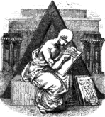s
few persons know, even amongst those who profess to be admirers of the
art of Wood Engraving, by what means its effects, as seen in books and
single impressions, are produced, and as a yet smaller number understand
in what manner it specifically differs in its procedure from the art of
engraving on copper or steel, it appears necessary, before entering into
any historic detail of its progress, to premise a few observations
explanatory of the word Engraving in
its general acceptation, and more particularly descriptive of that
branch of the art which several persons call Xylography; but which is as
clearly expressed, and much more generally understood, by the term Wood Engraving.
The primary meaning of the verb “to engrave” is defined by Dr.
Johnson, “to picture by incisions in any matter;” and he derives it from
2
the French “engraver.” The great lexicographer is not, however,
quite correct in his derivation; for the French do not use the verb
“engraver” in the sense of “to engrave,” but to signify a ship or a boat
being embedded in sand or mud so that she cannot float. The French
synonym of the English verb “to engrave,” is “graver;” and its root is
to be found in the Greek γράφω (grapho, I cut), which, with its
compound ἐπιγράφω, according to Martorelli, as cited by Von
Murr,I.1 is always used by Homer to express cutting, incision,
or wounding; but never to express writing by the superficial tracing of
characters with a reed or pen. From the circumstance of laws, in the
early ages of Grecian history, being cut or engraved on wood, the word
γράφω
came to be used in the sense of, “I sanction, or I pass a law;” and
when, in the progress of society and the improvement of art, letters,
instead of being cut on wood, were indented by means of a skewer-shaped
instrument (stylus) on wax spread on tablets of wood or ivory, or
written by means of a pen or reed on papyrus or on parchment, the word
γράφω,
which in its primitive meaning signified “to cut,” became expressive of
writing generally.
From γράφω is derived the Latin scribo,I.2 “I write;” and
it is worthy of observation, that “to scrive,”—most
probably from scribo,—signifies, in our own language, to
cut numerals or other characters on timber with a tool called a
scrive: the word thus passing, as it were, through a circle of
various meanings and in different languages, and at last returning to
its original signification.
Under the general term Sculpture—the root of which is to be found in
the Latin verb sculpo, “I cut”—have been classed
copper-plate engraving, wood engraving, gem engraving, and carving, as
well as the art of the statuary or figure-cutter in marble, to which art
the word sculpture is now more strictly applied, each of those
arts requiring in its process the act of cutting of one kind or
other. In the German language, which seldom borrows its terms of art
from other languages, the various modes of cutting in sculpture, in
copper-plate engraving, and in engraving on wood, are indicated in the
name expressive of the operator or artist. The sculptor is named a
Bildhauer, from Bild, a statue, and hauen, to hew,
indicating the operation of cutting with a mallet and chisel; the
copper-plate engraver is called a Kupfer-stecher, from
Kupfer, copper, and stechen, to dig or cut with the point;
and the wood engraver is a Holzschneider, from Holz, wood,
and schneiden, to cut with the edge.
It is to be observed, that though both the copper-plate engraver and
3
the wood engraver may be said to cut in a certain sense, as well
as the sculptor and the carver, they have to execute their work
reversed,—that is, contrary to the manner in which
impressions from their plates or blocks are seen; and that in copying a
painting or a drawing, it requires to be reversely transferred,—a
disadvantage under which the sculptor and the carver do not labour, as
they copy their models or subjects direct.
Engraving, as the word is at the
present time popularly used, and considered in its relation to the
pictorial art, may be defined to be—“The art of representing
objects on metallic substances, or on wood, expressed by lines and
points produced by means of corrosion, incision, or excision, for the
purpose of their being impressed on paper by means of ink or other
colouring matter.”
The impressions obtained from engraved plates of metal or from
blocks of wood are commonly called engravings, and sometimes
prints. Formerly the word cutsI.3 was applied indiscriminately to
impressions, either from metal or wood; but at present it is more
strictly confined to the productions of the wood engraver. Impressions
from copper-plates only are properly called plates; though it is
not unusual for persons who profess to review productions of art, to
speak of a book containing, perhaps, a number of indifferent
woodcuts, as “a work embellished with a profusion of the most
charming plates on wood;” thus affording to every one who is in the
least acquainted with the art at once a specimen of their taste and
their knowledge.
Independent of the difference of the material on which copper-plate
engraving and wood engraving are executed, the grand distinction between
the two arts is, that the engraver on copper corrodes by means of
aqua-fortis, or cuts out with the burin or dry-point, the lines,
stipplings, and hatchings from which his impression is to be produced;
while, on the contrary, the wood engraver effects his purpose by cutting
away those parts which are to appear white or colourless, thus leaving
the lines which produce the impression prominent.
In printing from a copper or steel plate, which is previously warmed
by being placed above a charcoal fire, the ink or colouring matter is
rubbed into the lines or incisions by means of a kind of ball formed of
woollen cloth; and when the lines are thus sufficiently charged with
ink, the surface of the plate is first wiped with a piece of rag, and is
then further cleaned and smoothed by the fleshy part of the palm of the
hand, slightly touched with whitening, being once or twice passed rather
quickly and lightly over it. The plate thus prepared is covered with the
paper intended to receive the engraving, and is subjected to the action
of
4
the rolling or copper-plate printer’s press; and the impression is
obtained by the paper being pressed into the inked incisions.
As the lines of an engraved block of wood are prominent or in relief,
while those of a copper-plate are, as has been previously explained,
intagliate or hollowed, the mode of taking an impression from the
former is precisely the reverse of that which has just been described.
The usual mode of taking impressions from an engraved block of wood is
by means of the printing-press, either from the block separately, or
wedged up in a chase with types. The block is inked by being beat
with a roller on the surface, in the same manner as type; and the paper
being turned over upon it from the tympan, it is then run in
under the platen; which being acted on by the lever, presses the
paper on to the raised lines of the block, and thus produces the
impression. Impressions from wood are thus obtained by the
on-pression of the paper against the raised or prominent lines;
while impressions from copper-plates are obtained by the
in-pression of the paper into hollowed ones. In consequence of
this difference in the process, the inked lines impressed on paper from
a copper-plate appear prominent when viewed direct; while the lines
communicated from an engraved wood-block are indented in the front of
the impression, and appear raised at the back.
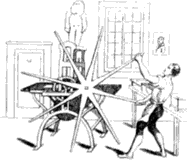
PRINTED FROM A WOOD-BLOCK.
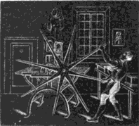
PRINTED FROM A COPPER-PLATE.
The above impressions—the one from a wood-block, and the other
from an etched copper-plate—will perhaps render what has been
already said, explanatory of the difference between copper-plate
printing from hollowed lines, and surface printing by means of
the common press from prominent lines, still more intelligible. The
subject is a representation of the copper-plate or rolling press.
Both the preceding impressions are produced in the same manner by
means of the common printing-press. One is from wood; the other, where
the white lines are seen on a black ground, is from copper;—the
hollowed lines, which in copper-plate printing yield the impression,
5
receiving no ink from the printer’s balls or rollers; while the surface,
which in copper-plate printing is wiped clean after the lines are filled
with ink, is perfectly covered with it. It is, therefore, evident, that
if this etching were printed in the same manner as other copper-plates,
the impression would be a fac-simile of the one from wood. It has been
judged necessary to be thus minute in explaining the difference between
copper-plate and wood engraving, as the difference in the mode of
obtaining impressions does not appear to have been previously pointed
out with sufficient precision.
As it does not come within the scope of the present work to inquire
into the origin of sculpture generally, I shall not here venture to
give an opinion whether the art was invented by Adam or his good angel Raziel, or whether it was introduced at a subsequent
period by Tubal-Cain, Noah, Trismegistus,
Zoroaster, or Moses. Those who feel interested in such remote
speculations will find the “authorities” in the second chapter of
Evelyn’s “Sculptura.”
Without, therefore, inquiring when or by whom the art of engraving
for the purpose of producing impressions was invented, I shall
endeavour to show that such an art, however rude, was known at a very
early period; and that it continued to be practised in Europe, though to
a very limited extent, from an age anterior to the birth of Christ, to
the year 1400. In the fifteenth century, its principles appear to have
been more generally applied;—first, to the simple cutting of
figures on wood for the purpose of being impressed on paper; next, to
cutting figures and explanatory text on the same block, and then entire
pages of text without figures, till the “ARS
GRAPHICA ET IMPRESSORIA” attained its perfection in the discovery
of PRINTING by means of movable fusile
types.I.4
At a very early period stamps of wood, having hieroglyphic characters
engraved on them, were used in Egypt for the purpose of producing
impressions on bricks, and on other articles made of clay. This fact,
which might have been inferred from the ancient bricks and fragments of
earthenware containing characters evidently communicated by means of a
stamp, has been established by the discovery of several of those wooden
stamps, of undoubted antiquity, in the tombs at Thebes, Meroe, and other
places. The following cuts represent the face and the back of one of the
most perfect of those stamps, which was found in a tomb at Thebes, and
has recently been brought to this country by Edward William Lane, Esq.I.5
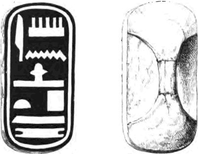
The original stamp is made of the same kind of wood as the
6
mummy chests, and has an arched handle at the back, cut out of the same
piece of wood as the face. It is of an oblong figure, with the ends
rounded off; five inches long, two inches and a quarter broad, and half
an inch thick. The hieroglyphic characters on its face are rudely cut in
intaglio, so that their impression on clay would be in relief;
and if printed in the same manner as the preceding copy, would present
the same appearance,—that is, the characters which are cut into
the wood, would appear white on a black ground. The phonetic power of
the hieroglyphics on the face of the stamp may be represented
respectively by the letters, A, M, N, F, T,
P, T, H, M; and the vowels being supplied, as in reading
Hebrew without points, we have the words, “Amonophtep,
Thmei-mai,”—“Amonoph, beloved of truth.”I.6 The name is supposed to be
that of Amonoph or Amenoph the First, the second king of the eighteenth
dynasty, who, according to the best authorities, was contemporary with
Moses, and reigned in Egypt previous to the departure of the Israelites.
There are two ancient Egyptian bricks in the British Museum on which the
impression of a similar stamp is quite distinct; and there are also
several articles of burnt clay, of an elongated conical figure, and
about nine inches long, which have their broader extremities impressed
with hieroglyphics in a similar manner. There is also in the same
collection a wooden
7
stamp, of a larger size than that belonging to Mr. Lane, but not in so
perfect a condition. Several ancient Etruscan terra-cottas and fragments
of earthenware have been discovered, on which there are alphabetic
characters, evidently impressed from a stamp, which was probably of
wood. In the time of Pliny terra-cottas thus impressed were called
Typi.
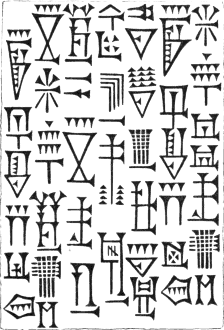
In the British Museum are several bricks which have been found on the
site of ancient Babylon. They are larger than our bricks, and somewhat
different in form, being about twelve inches square and three inches
thick. They appear to have been made of a kind of muddy clay with which
portions of chopped straw have been mixed to cause it to bind; and their
general appearance and colour, which is like that of a common brick
before it is burnt, plainly enough indicate that they have not been
hardened by fire, but by exposure to the sun. About the middle of their
broadest surface, they are impressed with certain characters which have
evidently been indented when the brick was in a soft state. The
characters are indented,—that is, they are such as would be
produced by pressing a wood-block with raised lines upon a mass of soft
clay; and were such a block printed on paper in the usual manner of
wood-cuts, the impression
8
would be similar to the preceding one, which has been copied, on a
reduced scale, from one of the bricks above noticed. The characters have
been variously described as cuneiform or wedge-shaped, arrow-headed,
javelin-headed, or nail-headed; but their meaning has not hitherto been
deciphered.
Amphoræ, lamps, tiles, and various domestic utensils, formed of clay,
and of Roman workmanship, are found impressed with letters, which in
some cases are supposed to denote the potter’s name, and in others the
contents of the vessel, or the name of the owner. On the tiles,—of
which there are specimens in the British Museum,—the letters are
commonly inscribed in a circle, and appear raised; thus showing that the
stamp had been hollowed, or engraved in intaglio, in a manner similar to
a wooden butter-print. In a book entitled “Ælia Lælia Crispis non nata
resurgens,” by C. C. Malvasia, 4to. Bologna, 1683, are several
engravings on wood of such tiles, found in the neighbourhood of Rome,
and communicated to the author by Fabretti, who, in the seventh chapter
of his own work,I.7 has given some account of the “figlinarum
signa,”—the stamps of the ancient potters and tile-makers.
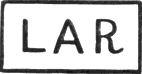
The stamp from which the following cut has been copied is preserved
in the British Museum. It is of brass, and the letters are in relief and
reversed; so that if it were inked from a printer’s ball and stamped on
paper, an impression would be produced precisely the same as that which
is here given.
It would be difficult now to ascertain why this stamp should be
marked with the word Lar, which
signifies a household god, or the image of the supposed tutelary genius
of a house; but, without much stretch of imagination, we may easily
conceive how appropriate such an inscription would be impressed on an
amphora or large wine-vessel, sealed and set apart on the birth of an
heir, and to be kept sacred—inviolate as the household
gods—till the young Roman assumed the “toga virilis,” or arrived
at years of maturity. That vessels containing wine were kept for many
years, we learn from Horace and Petronius;I.8
9
——Prome reconditum,
Lyde, strenua, Cæcubum,
Munitæque adhibe vim sapientiæ.
Inclinare meridiem
Sentis: ac veluti stet volucris dies,
Parcis deripere horreo
Cessantem Bibuli Consulis amphoram.
Carmin. lib. III. xxviii.
“Quickly produce, Lyde, the hoarded Cæcuban, and make an attack upon
wisdom, ever on her guard. You perceive the noontide is on its decline;
and yet, as if the fleeting day stood still, you delay to bring out of
the store-house the loitering cask, (that bears its date) from the Consul
Bibulus.”—Smart’s Translation.
Mr. Ottley, in his “Inquiry into the Origin and Early History of
Engraving,” pages 57 and 58, makes a distinction between
impression where the characters impressed are produced by
“a change of form”—meaning where they are either
indented in the substance impressed, or raised upon it in
relief—and impression where the characters are produced by
colour; and requires evidence that the ancients ever used stamps
“charged with ink or some other tint, for the purpose of stamping paper,
parchment, or other substances, little or not at all capable of
indentation.”
It certainly would be very difficult, if not impossible, to produce a
piece of paper, parchment, or cloth of the age of the Romans impressed
with letters in ink or other colouring matter; but the existence of such
stamps as the preceding,—and there are others in the British
Museum of the same kind, containing more letters and of a smaller
size,—renders it very probable that they were used for the purpose
of marking cloth, paper, and similar substances, with ink, as well as
for being impressed in wax or clay.
Von Murr, in an article in his Journal, on the Art of Wood Engraving,
gives a copy from a similar bronze stamp, in Praun’s Museum, with the
inscription “Galliani,” which he
considers as most distinctly proving that the Romans had nearly arrived
at the arts of wood engraving and book printing. He adds: “Letters cut
on wood they certainly had, and very likely grotesques and figures also,
the hint of which their artists might readily obtain from the coloured
stuffs which were frequently presented by Indian ambassadors to the
emperors.”I.9
At page 90 of Singer’s “Researches into the History of Playing-Cards”
are impressions copied from stamps similar to the preceding;
10
which stamps the author considers as affording “examples of such a near
approach to the art of printing as first practised, that it is truly
extraordinary there is no remaining evidence of its having been
exercised by them;—unless we suppose that they were acquainted
with it, and did not choose to adopt it from reasons of state policy.”
It is just as extraordinary that the Greek who employed the expansive
force of steam in the Ælopile to blow the fire did not invent Newcomen’s
engine;—unless, indeed, we suppose that the construction of such
an engine was perfectly known at Syracuse, but that the government there
did not choose to adopt it from motives of “state policy.” It was not,
however, a reason of “state policy” which caused the Roman cavalry
to ride without stirrups, or the windows of the palace of Augustus to
remain unglazed.
The following impressions are also copied from two other brass
stamps, preserved in the collection of Roman antiquities in the British
Museum.
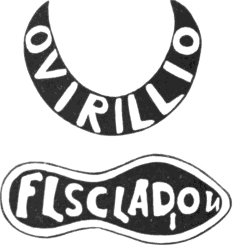
As the letters in the originals are hollowed or cut into the metal,
they would, if impressed on clay or soft wax, appear raised or in
relief; and if inked and impressed on paper or on white cloth, they
would present the same appearance that they do here—white on a
black ground. Not being able to explain the letters on these stamps,
further than that the first may be the dative case of a proper name
Ovirillius, and indicate that property so marked belonged to such a
person, I leave them, as Francis Moore, physician, leaves the
hieroglyphic in his Almanack,—“to time and the curious to
construe.”
11
Lambinet, in his “Recherches sur l’Origine de l’Imprimerie,” gives an
account of two stone stamps of the form of small tablets, the letters of
which were cut in intaglio and reverse, similar to the two of
which impressions are above given. They were found in 1808, near the
village of Nais, in the department of the Meuse; and as the letters,
being in reverse, could not be made out, the owner of the tablets sent
them to the Celtic Society of Paris, where M. Dulaure, to whose
examination they were submitted, was of opinion that they were a kind of
matrices or hollow stamps, intended to be applied to soft substances or
such as were in a state of fusion. He thought they were stamps for
vessels containing medical compositions; and if his reading of one of
the inscriptions be correct, the practice of stamping the name of a
quack and the nature of his remedy, in relief on the side of an
ointment-pot or a bottle, is of high antiquity. The letters
Q. JUN. TAURI. ANODY.
NUM. AD OMN. LIPP.
M. Dulaure explains thus: Quinti Junii Tauridi anodynum ad omnes
lippas;I.10 an inscription which is almost literally rendered by
the title of a specific still known in the neighbourhood of
Newcastle-on-Tyne, “Dr. Dud’s lotion, good for sore eyes.”
Besides such stamps as have already been described, the ancients used
brands, both figured and lettered, with which, when heated, they marked
their horses, sheep, and cattle, as well as criminals, captives, and
refractory or runaway slaves.
The Athenians, according to Suidas, marked their Samian captives with
the figure of an owl; while Athenians captured by the Samians were
marked with the figure of a galley, and by the Syracusans with the
figure of a horse. The husbandman at his leisure time, as we are
informed by Virgil, in the first book of the Georgics,
“Aut pecori signa, aut numeros impressit acervis;”
and from the third book we learn that the operation was performed by
branding:
“Continuoque notas et nomina gentis inurunt.”I.11
12
Such brands as those above noticed, commonly known by the name of
cauteria or stigmata, were also used for similar purposes
during the middle ages; and the practice, which has not been very long
obsolete, of burning homicides in the hand, and vagabonds and “sturdy
beggars” on the breast, face, or shoulder, affords an example of the
employment of the brand in the criminal jurisprudence of our own
country. By the 1st Edward VI. cap. 3, it was enacted, that whosoever,
man or woman, not being lame or impotent, nor so aged or diseased that
he or she could not work, should be convicted of loitering or idle
wandering by the highway-side, or in the streets, like a servant wanting
a master, or a beggar, he or she was to be marked with a hot iron on the
breast with the letter V [for Vagabond], and adjudged to the person
bringing him or her before a justice to be his slave for two years; and
if such adjudged slave should run away, he or she, upon being taken and
convicted, was to be marked on the forehead, or on the ball of the
cheek, with the letter S [for Slave], and adjudged to be the said
master’s slave for ever. By the 1st of James I. cap. 7, it was also
enacted, that such as were to be deemed “rogues, vagabonds, and sturdy
beggars” by the 39th of Elizabeth, cap. 4, being convicted at the
sessions and found to be incorrigible, were to be branded in the left
shoulder with a hot iron, of the breadth of an English shilling, marked
with a great Roman R [for Rogue]; such branding upon the shoulder to be
so thoroughly burned and set upon the skin and flesh, that the said
letter R should be seen and remain for a perpetual mark upon such rogue
during the remainder of his life.I.12
From a passage in Quintilian we learn that the Romans were acquainted
with the method of tracing letters, by means of a piece of thin
wood in which the characters were pierced or cut through, on a principle
similar to that on which the present art of stencilling is
founded. He is speaking of teaching boys to write, and the passage
referred to may be thus translated: “When the boy shall have entered
upon joining-hand, it will be useful for him to have a
copy-head of wood in which the letters are well cut, that through
its furrows, as it were, he may trace the characters with his
style. He will not thus be liable to make slips as on the wax
[alone], for he will be confined by the boundary of the letters, and
neither will he be able to deviate from his text. By thus more rapidly
and frequently following a definite outline, his hand will become
set, without his requiring any assistance from the master to
guide it.”I.13
13
A thin stencil-plate of copper, having the following letters cut
out of it,
DN CONSTAN
TIO AVG SEM
PER VICTORI
was received, together with some rare coins, from Italy by Tristan,
author of “Commentaires Historiques, Paris, 1657,” who gave a copy of it
at page 68 of the third volume of that work. The letters thus formed,
“ex nulla materia,”I.14 might be traced on paper by means of a pen, or with
a small brush, charged with body-colour, as stencillers slap-dash
rooms through their pasteboard patterns, or dipped in ink in the same
manner as many shopkeepers now, through similar thin copper-plates, mark
the prices of their wares, or their own name and address on the paper in
which such wares are wrapped.
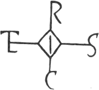
In the sixth century it appears, from Procopius, that the Emperor
Justin I. made use of a tablet of wood pierced or cut in a similar
manner, through which he traced in red ink, the imperial colour, his
signature, consisting of the first four letters of his name. It is also
stated that Theodoric, King of the Ostrogoths, the contemporary of
Justin, used after the same manner to sign the first four letters of his
name through a plate of gold;I.15 and in Peringskiold’s edition of the
Life of Theodoric, the annexed is given as the monogramI.16 of that
monarch. The authenticity of this account has, however, been questioned,
as Cochlæus, who died in 1552, cites no ancient authority for the
fact.
14
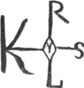
It has been asserted by Mabillon, (Diplom. lib. ii. cap. 10,) that
Charlemagne first introduced the practice of signing documents with a
monogram, either traced with a pen by means of a thin tablet of gold,
ivory, or wood, or impressed with an inked stamp, having the characters
in relief, in a manner similar to that in which letters are stamped at
the Post-office.I.17 Ducange, however, states that this mode of signing
documents is of greater antiquity, and he gives a copy of the monogram
of the Pope Adrian I. who was elected to the see of Rome in 774,
and died in 795. The annexed monogram of Charlemagne has been copied
from Peringskiold, “Annotationes in Vitam Theodorici,” p. 584; it
is also given in Ducange’s Glossary, and in the “Nouveau Traité de
Diplomatique.”
The monogram, either stencilled or stamped, consisted of a
combination of the letters of the person’s name, a fanciful
character, or the figure of a cross,I.18 accompanied with a peculiar kind
of flourish, called by French writers on diplomatics parafe or
ruche. This mode of signing appears to have been common in most
nations of Europe during the ninth, tenth, and eleventh centuries; and
it was practised by nobles and the higher orders of the clergy, as well
as by kings. It continued to be used by the kings of France to the time
of Philip III. and by the Spanish monarchs to a much later period. It
also appears to have been adopted by some of the Saxon kings of England;
and the authors of the “Nouveau Traité de Diplomatique” say that they
had seen similar marks produced by a stamp of William the Conqueror,
when Duke of Normandy. We have had a recent instance of the use of the
stampilla, as it is called by diplomatists, in affixing the royal
signature. During the illness of George IV. in 1830, a silver
stamp, containing a fac-simile of the king’s sign-manual, was executed
by Wyon, which was stamped on documents requiring the royal signature,
by commissioners, in his Majesty’s presence. A similar stamp was
used during the last illness of Henry VIII. for the purpose of affixing
the royal signature. The king’s warrant empowering commissioners to use
the stamp may be seen in Rymer’s Fœdera, vol. xv. p. 101, anno
1546. It is believed that the
15
warrant which sent the poet Surrey to the scaffold was signed with this
stamp, and not with Henry’s own hand.
In Sempère’s “History of the Cortes of Spain,” several examples are
given of the use of fanciful monograms in that country at an early
period, and which were probably introduced by its Gothic invaders. That
such marks were stamped is almost certain; for the first, which is that
of Gundisalvo Tellez, affixed to a charter of the date of 840, is the
same as the “sign” which was affixed by his widow, Flamula, when she
granted certain property to the abbot and monks of Cardeña for the good
of her deceased husband’s soul. The second, which is of the date of 886,
was used both by the abbot Ovecus, and Peter his nephew; and the third
was used by all the four children of one Ordoño, as their “sign” to a
charter of donation executed in 1018. The fourth mark is a Runic cypher,
copied from an ancient Icelandic manuscript, and given by Peringskiold
in his “Annotations on the Life of Theodoric:” it is not given here as
being from a stencil or a stamp, but that it may be compared with the
apparently Gothic monograms used in Spain.
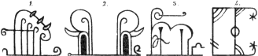
“In their inscriptions, and in the rubrics of their books,” says a
writer in the Edinburgh ReviewI.19 “the Spanish Goths, like the Romans
of the Lower Empire, were fond of using combined capitals—of
monogrammatising. This mode of writing is now common in Spain, on
the sign-boards and on the shop-fronts, where it has retained its place
in defiance of the canons of the council [of Leon], The Goths, however,
retained a truly Gothic custom in their writings. The Spanish
Goth sometimes subscribed his name; or he drew a monogram like
the Roman emperors, or the sign of the cross like the Saxon; but
not unfrequently he affixed strange and fanciful marks to the deed or
charter, bearing a close resemblance to the Runic or magical knots of
which so many have been engraved by Peringskiold, and other northern
antiquaries.”
To the tenth or the eleventh century are also to be referred certain
small silver coins—“something between counters and money,” as is
observed by Pinkerton—which are impressed, on one side only, with
a kind of Runic monogram. They are formed of very thin pieces of
16
silver; and it has been supposed that the impression was produced from
wooden dies. They are known to collectors as “nummi
bracteati”—tinsel money; and Pinkerton, mistaking the Runic
character for the Christian cross, says that “most of them are
ecclesiastic.” He is perhaps nearer the truth when he adds that they
“belong to the tenth century, and are commonly found in Germany, and the
northern kingdoms of Sweden and Denmark.”I.20 The four following
copies from the original coins in the Brennerian collection are given by
Peringskiold, in his “Annotations on the Life of Theodoric,” previously
referred to. The characters on the three first he reads as the letters
EIR, OIR, and AIR,
respectively, and considers them to be intended to represent the name of
Eric the Victorious. The characters on the fourth he reads as EIM, and applies them to Emund Annosus, the
nephew of Eric the Victorious, who succeeded to the Sueo-Gothic throne
in 1051; about which time, through the influence of the monks, the
ancient Runic characters were exchanged for Roman.
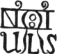
NICOLAUS FERENTERIUS, 1236
The notaries of succeeding times, who on their admission were
required to use a distinctive sign or notarial mark in witnessing an
instrument, continued occasionally to employ the stencil in affixing
their “sign;” although their use of the stamp for that purpose appears
to have been more general. In some of those marks or stamps the name of
the notary does not appear, and in others a small space is left in order
that it might afterwards be inserted with a pen. The annexed monogram
was the official mark of an Italian notary, Nicolaus Ferenterius, who
lived in 1236.I.21
The three following cuts represent impressions of German notarial
stamps. The first is that of Jacobus Arnaldus, 1345; the second that of
Johannes Meynersen, 1435; and the third that of Johannes Calvis, 1521.I.22
17
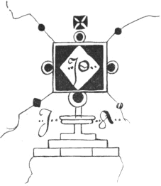
JACOBUS ARNALDUS, 1345.
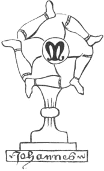
JOHANNES MEYNERSEN, 1435.
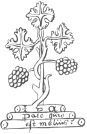
JOHANNES CALVIS, 1521.
Many of the merchants’-marks of our own country, which so frequently
appear on stained glass windows, monumental brasses, and tombstones in
the fourteenth, fifteenth, and sixteenth centuries, bear a considerable
likeness to the ancient Runic monograms, from which it is not unlikely
that they were originally derived. The English trader was accustomed to
place his mark as his “sign” in his shop-front in the same manner as the
Spaniard did his monogram: if he was a wool-stapler, he stamped it on
his packs; or if a fish-curer, it was branded on the end of his casks.
If he built himself a new house, his mark
18
was frequently placed between his initials over the principal door-way,
or over the fireplace of the hall; if he made a gift to a church or a
chapel, his mark was emblazoned on the windows beside the knight’s or
the nobleman’s shield of arms; and when he died, his mark was cut upon
his tomb. Of the following merchants’-marks, the first is that of Adam
de Walsokne, who died in 1349; the second that of Edmund Pepyr, who died
in 1483; those two marks are from their tombs in St. Margaret’s, Lynn;
and the third is from a window in the same church.I.23
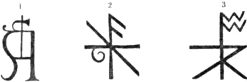
In Pierce Ploughman’s Creed, written after the death of Wickliffe,
which happened in 1384, and consequently more modern than many of
Chaucer’s poems, merchants’-marks are thus mentioned in the description
of a window of a Dominican convent:
“Wide windows y-wrought, y-written full thick,
Shining with shapen shields, to shewen about,
With marks of merchants, y-meddled between,
Mo than twenty and two, twice y-numbered.I.24”
Having thus endeavoured to prove by a continuous chain of evidence
that the principle of producing impressions from raised lines was known,
and practised, at a very early period; and that it was applied for the
purpose of impressing letters and other characters on paper, though
perhaps confined to signatures only, long previous to 1423,—which
is the earliest date that has been discovered on a wood-cut, in the
modern sense of the word, impressed on paper, and accompanied with
explanatory words cut on the same block;I.25 and having shown that the
principle of stencilling—the manner in which the above-named cut
is
19
colouredI.26—was also known in the middle ages; it appears
requisite, next to briefly notice the contemporary existence of the
cognate arts of die-sinking, seal-cutting, and engraving on brass, and
afterwards to examine the grounds of certain speculations on the
introduction and early practice of wood-engraving and block-printing in
Europe.
Concerning the first invention of stamping letters and figures upon
coins, and the name of the inventor, it is fruitless to inquire, as the
origin of the art is lost in the remoteness of antiquity. “Leaving these
uncertainties,” says Pinkerton, in his Essay on Medals, “we know from
respectable authorities that the first money coined in Greece was that
struck in the island of Ægina, by Phidon king of Argos. His reign is
fixed by the Arundelian marbles to an era correspondent to the 885th
year before Christ; but whether he derived this art from Lydia or any
other source we are not told.” About three hundred years before the
birth of Christ, the art of coining, so far as relates to the beauty of
the heads impressed, appears to have attained its perfection in
Greece;—we may indeed say its perfection generally, for the
specimens which were then produced in that country remain unsurpassed by
modern art. Under the Roman emperors the art never seems to have
attained so high a degree of perfection as it did in Greece; though
several of the coins of Hadrian, probably executed by Greek artists,
display great beauty of design and execution. The art of coining, with
the rest of the ornamental arts, declined with the empire; and, on its
final subversion in Italy, the coins of its rulers were scarcely
superior to those which were subsequently minted in England, Germany,
and France, during the darkest period of the middle ages.
The art of coining money, however rude in design and imperfect in its
mode of stamping the impression, which was by repeated blows with a
hammer, was practised from the twelfth to the sixteenth century in a
greater number of places than at present; for many of the more powerful
bishops and nobles assumed or extorted the right of coining money as
well as the king; and in our own country the archbishops of Canterbury
and York, and the bishop of Durham, exercised the right of coinage till
the Reformation; and local mints for coining the king’s money were
occasionally fixed at Norwich, Chester, York, St. Edmundsbury,
Newcastle-on-Tyne, and other places. Independent of those establishments
for the coining of money, almost every abbey struck its own
jettons or
20
counters; which were thin pieces of copper, commonly impressed with a
pious legend, and used in casting up accounts, but which the
general introduction of the numerals now in use, and an improved system
of arithmetic, have rendered unnecessary. As such mints were at least as
numerous in France and Germany as in our own country, Scheffer, the
partner of Faust, when he conceived the idea of casting letters from
matrices formed by punches, would have little difficulty in finding a
workman to assist him in carrying his plans into execution. “The art of
impressing legends on coins,” says Astle in his Account of the Origin
and Progress of writing, “is nothing more than the art of printing on
medals.” That the art of casting letters in relief, though not
separately, and most likely from a mould of sand, was known to the
Romans, is evident from the names of the emperors Domitian and Hadrian
on some pigs of lead in the British Museum; and that it was practised
during the middle and succeeding ages, we have ample testimony from the
inscriptions on our ancient bells.I.27
In the century immediately preceding 1423, the date of the wood-cut
of St. Christopher, the use of seals, for the purpose of authenticating
documents by their impression on wax, was general throughout Europe;
kings, nobles, bishops, abbots, and all who “came of gentle
blood,” with corporations, lay and clerical, all had seals. They were
mostly of brass, for the art of engraving on precious stones does not
appear to have been at that time revived, with the letters and device
cut or cast in hollow—en creux—on the face of the
seal, in order that the impression might appear raised. The workmanship
of many of those seals, and more especially of some of the conventional
ones, where figures of saints and a view of the abbey are introduced,
displays no mean degree of skill. Looking on such specimens of the
graver’s art, and bearing in mind the character of many of the drawings
which are to be seen in the missals and other manuscripts of the
fourteenth century and of the early part of the fifteenth, we need no
longer be surprised that the cuts of the earliest block-books should be
so well executed.
The art of engraving on copper and other metals, though not with the
intention of taking impressions on paper, is of great antiquity. In the
late Mr. Salt’s collection of Egyptian antiquities there was a small
axe, probably a model, the head of which was formed of sheet-copper, and
was tied, or rather bandaged, to the helve with slips of cloth. There
were certain characters engraved upon the head in such a manner that if
it were inked and submitted to the action of the rolling-press,
impressions would be obtained as from a modern copper-plate. The axe,
with other
21
models of a carpenter’s tools, also of copper, was found in a tomb in
Egypt, where it must have been deposited at a very early period. That
the ancient Greeks and Romans were accustomed to engrave on copper and
other metals in a similar manner, is evident from engraved pateræ and
other ornamental works executed by people of those nations. Though no
ancient writer makes mention of the art of engraving being employed for
the purpose of producing impressions on paper, yet it has been
conjectured by De Pauw, from a passage in Pliny,I.28 that such an art was
invented by Varro for the purpose of multiplying the portraits of
eminent men. “No Greek,” says De Pauw, speaking of engraving, “has the
least right to claim this invention, which belongs exclusively to Varro,
as is expressed by Pliny in no equivocal terms, when he calls this
method inventum Varronis. Engraved plates were employed which
gave the profile and the principal traits of the figures, to which the
appropriate colours and the shadows were afterwards added with the
pencil. A woman, originally of Cyzica, but then settled in Italy,
excelled all others in the talent of illumining such kind of prints,
which were inserted by Varro in a large work of his entitled
‘Imagines’ or ‘Hebdomades,’ which was enriched with seven
hundred portraits of distinguished men, copied from their statues and
busts. The necessity of exactly repeating each portrait or figure in
every copy of the work suggested the idea of multiplying them without
much cost, and thus gave birth to an art till then unknown.”I.29 The
grounds, however, of this conjecture are extremely slight, and will not
without additional support sustain the superstructure which De
Pauw—an “ingenious” guesser, but a superficial inquirer—has
so plausibly raised. A prop for this theory has been sought for by
men of greater research than the original propounder, but hitherto
without success.
About the year 1300 we have evidence of monumental brasses, with
large figures engraved on them, being fixed on tombs in this country;
and it is not unlikely that they were known both here and on the
22
Continent at an earlier period. The best specimens known in this country
are such as were in all probability executed previous to 1400. In the
succeeding century the figures and ornamental work generally appear to
be designed in a worse taste and more carelessly executed; and in the
age of Queen Elizabeth the art, such as it was, appears to have reached
the lowest point of degradation, the monumental brasses of that reign
being generally the worst which are to be met with.
The figures on several of the more ancient brasses are well drawn,
and the folds of the drapery in the dresses of the females are, as a
painter would say, “well cast;” and the faces occasionally display a
considerable degree of correct and elevated expression. Many of the
figures are of the size of life, marked with a hold outline well
ploughed into the brass, and having the features, armour, and drapery
indicated by single lines of greater or less strength as might be
required. Attempts at shading are also occasionally to be met with; the
effect being produced by means of lines obliquely crossing each other in
the manner of cross-hatchings. Whether impressions were ever taken or
not from such early brasses by the artists who executed them, it is
perhaps now impossible to ascertain; but that they might do so is beyond
a doubt, for it is now a common practice, and two immense volumes of
impressions taken from monumental brasses, for the late Craven Ord,
Esq., are preserved in the print-room of the British Museum.
One of the finest monumental brasses known in this country is that of
Robert Braunche and his two wives, in St. Margaret’s Church, Lynn, where
it appears to have been placed about the year 1364. Braunche, and his
two wives, one on each side of him, are represented standing, of the
size of life. Above the figures are representations of five small niches
surmounted by canopies in the florid Gothic style. In the centre niche
is the figure of the Deity holding apparently the infant Christ in his
arms. In each of the niches adjoining the centre one is an angel
swinging a censer; and in the exterior niches are angels playing on
musical instruments. At the sides are figures of saints, and at the foot
there is a representation of a feast, where persons are seen seated at
table, others playing on musical instruments, while a figure kneeling
presents a peacock. The length of this brass is eight feet eleven
inches, and its breadth five feet two inches. It is supposed to have
been executed in Flanders, with which country at that period the town of
Lynn was closely connected in the way of trade.I.30
It has frequently been asserted that the art of wood engraving in
Europe was derived from the Chinese; by whom, it is also said, that the
23
art was practised in the reign of the renowned emperor Wu-Wang, who
flourished 1120 years before the birth of Christ. As both these
statements seem to rest on equal authorities, I attach to each an
equal degree of credibility; that is, by believing neither. As Mr.
Ottley has expressed an opinion in favour of the Chinese origin of the
art,—though without adopting the tale of its being practised in
the reign of Wu-Wang, which he shows has been taken by the wrong
end,—I shall here take the liberty of examining the tenability of
his arguments.
At page 8, in the first chapter of his work, Mr. Ottley cautiously
says that the “art of printing from engraved blocks of wood appears to
be of very high antiquity amongst the Chinese;” and at page 9,
after citing Du Halde, as informing us that the art of printing was not
discovered until about fifty years before the Christian era, he rather
inconsistently observes: “So says Father Du Halde, whose authority I
give without any comment, as the defence of Chinese chronology makes no
part of the present undertaking.” Unless Mr. Ottley is satisfied of the
correctness of the chronology, he can by no means cite Du Halde’s
account as evidence of the very high antiquity of printing in China;
which in every other part of his book he speaks of as a well-established
fact, and yet refers to no other authority than Du Halde, who relies on
the correctness of that Chinese chronology with the defence of which Mr.
Ottley will have nothing to do.
It is also worthy of remark, that in the same chapter he corrects two
writers, Papillon and Jansen, for erroneously applying a passage in Du
Halde as proving that the art of printing was known in the reign of
Wu-Wang,—he who flourished Ante Christum 1120; whereas the said
passage was not alleged “by Du Halde to prove the antiquity of printing
amongst the Chinese, but solely in reference to their ink.” The passage,
as translated by Mr. Ottley, is as follows: “As the stone Me”
(a word signifying ink in the Chinese language), “which is used to
blacken the engraved characters, can never become white; so a
heart blackened by vices will always retain its blackness.” The engraved
characters were not inked, it appears, for the purpose of taking
impressions, as Messrs. Papillon and Jansen have erroneously inferred.
“It is possible,” according to Mr. Ottley, “that the ink might be used
by the Chinese at a very early period to blacken, and thereby render
more easily legible, the characters of engraved inscriptions.”I.31 The
possibility of this may be granted certainly; but at the same
time we must admit that it is equally possible that the engraved
characters were blackened with ink for the purpose of being printed, if
they were of wood; or that, if
24
cut in copper or other metal, they were filled with a black composition
which would harden or set in the lines,—as an ingenious
inquirer might infer from ink being represented by the
stone ME; and thus it is
possible that something very like “niello,” or the filling of
letters on brass doorplates with black wax, was known to the Chinese in
the reign of Wu-Wang, who flourished in the year before our Lord, 1120.
The one conjecture is as good as the other, and both good for nothing,
until we have better assurance than is afforded by Du Halde, that
engraved characters blackened with ink—for whatever
purpose—were known by the Chinese in the reign of Wu-Wang.I.32
Although so little is positively known of the ancient history of “the
great out-lying empire of China,” as it is called by Sir William Jones,
yet it has been most confidently referred to as affording authentic
evidence of the high degree of the civilization and knowledge of the
Chinese at a period when Europe was dark with the gloom of barbarism and
ignorance. Their early history has been generally found, when
opportunity has been afforded of impartially examining it, to be a mere
tissue of absurd legends; compared to which, the history of the
settlement of King Brute in Britain is authentic. With astronomy as a
science they are scarcely acquainted; and their specimens of the fine
arts display little more than representations of objects executed not
unfrequently with minute accuracy, but without a knowledge of the most
simple elements of correct design, and without the slightest pretensions
to art, according to our standard.
One of the two Mahometan travellers who visited China in the ninth
century, expressly states that the Chinese were unacquainted with the
sciences; and as neither of them takes any notice of printing, the
mariner’s compass, or gunpowder, it seems but reasonable to conclude
that the Chinese were unacquainted with those inventions at that
period.I.33
Mr. Ottley, at pages 51 and 52 of his work, gives a brief account of
25
the early commerce of Venice with the East, for the purpose of showing
in what manner a knowledge of the art of printing in China might be
obtained by the Venetians. He says: “They succeeded, likewise, in
establishing a direct traffic with Persia, Tartary, China, and Japan;
sending, for that purpose, several of their most respectable citizens,
and largely providing them with every requisite.” He cites an Italian
author for this account, but he observes a prudent silence as to the
period when the Venetians first established a direct traffic with
China and Japan; though there is little doubt that Bettinelli, the
authority referred to, alludes to the expedition of the two brothers
Niccolo and Maffeo Polo, and of Marco Polo, the son of Niccolo, who in
1271 or 1272 left Venice on an expedition to the court of the Tartar
emperor Kublai-Khan, which had been previously visited by the two
brothers at some period between 1254 and 1269.I.34 After having visited
Tartary and China, the two brothers and Marco returned to Venice in
1295. Mr. Ottley, however, does not refer to the travels of the Polos
for the purpose of showing that Marco, who at a subsequent period wrote
an account of his travels, might introduce a knowledge of the Chinese
art of printing into Europe: he cites them that his readers may suppose
that a direct intercourse between Venice and China had been established
long before; and that the art of engraving wood-blocks, and taking
impressions from them, had been thus derived from the latter country,
and had been practised in Venice long before the return of the
travellers in 1295.
It is necessary here to observe that the invention of the mariner’s
compass, and of gunpowder and cannon, have been ascribed to the Chinese
as well as the invention of wood engraving and block-printing; and it
has been conjectured that very probably Marco Polo communicated
to his countrymen, and through them to the rest of Europe,
a knowledge of those arts. Marco Polo, however, does not in the
account which he wrote of his travels once allude to gunpowder, cannon,
or to the art of printing as being known in China;I.35 nor does he once
mention the compass as being used on board of the Chinese vessel in
which he sailed from the coast of China to the Persian Gulf. “Nothing is
more common,”
26
says a writer in the Quarterly Review, “than to find it repeated from
book to book, that gunpowder and the mariner’s compass were first
brought from China by Marco Polo, though there can be very little doubt
that both were known in Europe some time before his return.”—“That
Marco Polo,” says the same writer, “would have mentioned the mariner’s
compass, if it had been in use in China, we think highly probable; and
his silence respecting gunpowder may be considered as at least a
negative proof that this also was unknown to the Chinese in the time of
Kublai-Khan.”I.36 In a manner widely different from this does Mr.
Ottley reason, respecting the cause of Marco Polo not having mentioned
printing as an art practised by the Chinese. He accounts for the
traveller’s silence as follows: “Marco Polo, it may be said, did not
notice this art [of engraving on wood and block-printing] in the account
which he left us of the marvels he had witnessed in China. The answer to
this objection is obvious: it was no marvel; it had no novelty to
recommend it; it was practised, as we have seen, at Ravenna, in 1285,
and had perhaps been practised a century earlier in Venice. His mention
of it, therefore, was not called for, and he preferred instructing his
countrymen in matters with which they were not hitherto acquainted.”
This “obvious” answer, rather unfortunately, will equally apply to the
question, “Why did not Marco Polo mention cannon as being used by the
Chinese, who, as we are informed, had discovered such formidable engines
of war long before the period of his visit?”
That the art of engraving wood-blocks and of taking impressions from
them was introduced into Europe from China, I can see no sufficient
reason to believe. Looking at the frequent practice in Europe, from the
twelfth to the fifteenth century, of impressing inked stamps on paper,
I can perceive nothing in the earliest specimens of wood engraving
but the same principles applied on a larger scale. When I am once
satisfied that a man had built a small boat, I feel no surprise on
learning that his grandson had built a larger; and made in it a longer
voyage than his ancestor ever ventured on, who merely used his slight
skiff to ferry himself across a river.
In the first volume of Papillon’s “Traité de la Gravure en Bois,”
there is an account of certain old wood engravings which he professes to
have seen, and which, according to their engraved explanatory title,
were executed by two notable young people, Alexander Alberic Cunio,
knight, and Isabella Cunio, his twin sister, and finished by them
when they were only sixteen years old, at the time when Honorius IV. was
pope; that is, at some period between the years 1285 and 1287. This
27
story has been adopted by Mr. Ottley, and by Zani, an Italian, who give
it the benefit of their support. Mr. Singer, in his “Researches into the
History of Playing Cards,” grants the truth-like appearance of
Papillon’s tale; and the writer of the article “Wood-engraving” in the
Encyclopedia Metropolitana considers it as authentic. It is, however,
treated with contempt by Heineken, Huber, and Bartsch, whose knowledge
of the origin and progress of engraving is at least equal to that of the
four writers previously named.
The manner in which Papillon recovered his memoranda of the works of
the Cunio is remarkable. In consequence of those curious notes being
mislaid for upwards of thirty-five years, the sole record of the
productions of those “ingenious and amiable twins” was very nearly lost
to the world. The three sheets of letter-paper on which he had
written an account of certain old volumes of wood engravings,—that
containing the cuts executed by the Cunio being one of the
number,—he had lost for upwards of thirty-five years. For long he
had only a confused idea of those sheets, though he had often searched
for them in vain, when he was writing his first essay on wood engraving,
which was printed about 1737, but never published. At length he
accidentally found them, on All-Saints’ Day, 1758, rolled up in a bundle
of specimens of paper-hangings which had been executed by his father.
The finding of those three sheets afforded him the greater pleasure, as
from them he discovered, by means of a pope’s name, an epoch of
engraving figures and letters on wood for the purpose of being printed,
which was certainly much earlier than any at that period known in
Europe, and at the same time a history relative to this subject equally
curious and interesting. He says that he had so completely forgotten all
this,—though he had so often recollected to search for his
memoranda,—that he did not deign to take the least notice of it in
his previously printed history of the art. The following is a faithful
abstract of Papillon’s account of his discovery of those early specimens
of wood engraving. The title-page, as given by him in French from
Monsieur De Greder’s vivâ voce translation of the
original,—which was “en mauvais Latin ou ancien Italien Gothique,
avec beaucoup d’abréviations,”—is translated without abridgment,
as are also his own descriptions of the cuts.
“When young, being engaged with my father in going almost every day
to hang rooms with our papers, I was, some time in 1719 or 1720, at
the village of Bagneux, near Mont Rouge, at a Monsieur De Greder’s,
a Swiss captain, who had a pretty house there. After I had papered
a small room for him, he ordered me to cover the shelves of his library
with paper in imitation of mosaic. One day after dinner he surprised me
reading a book, which occasioned him to show me some very old ones which
he had borrowed of one of his friends, a Swiss officer,I.37 that
28
he might examine them at his leisure. We talked about the figures which
they contained, and of the antiquity of wood engraving; and what follows
is a description of those ancient books as I wrote it before him, and as
he was so kind as to explain and dictate to me.
“In a cartouchI.38 or frontispiece,—of fanciful and Gothic
ornaments, though pleasing enough,—nine inches wide, and six
inches high, having at the top the arms, doubtless, of Cunio, the
following words are coarsely engraved on the same block, in bad Latin,
or ancient Gothic Italian with many abbreviations.
“‘The chivalrous deeds, in figures,
of the great and magnanimous Macedonian king, the courageous and valiant
Alexander, dedicated, presented, and humbly offered to the most holy
father, Pope Honorius IV. the glory and stay of the Church, and to our
illustrious and generous father and mother, by us Alexander Alberic
Cunio, knight, and Isabella Cunio, twin brother and sister; first
reduced, imagined, and attempted to be executed in relief with a little
knife, on blocks of wood, joined and smoothed by this learned and
beloved sister, continued and finished together at Ravenna, after eight
pictures of our designing, painted six times the size here represented;
cut, explained in verse, and thus marked on paper to multiply the
number, and to enable us to present them as a token of friendship and
affection to our relations and friends. This was done and finished, the
age of each being only sixteen years complete.’”
After having given the translation of the title-page, Papillon thus
continues the narrative in his own person: “This cartouch [or
ornamented title-page] is surrounded by a coarse line, the tenth of an
inch broad, forming a square. A few slight lines, which are
irregularly executed and without precision, form the shading of the
ornaments. The impression, in the same manner as the rest of the cuts,
has been taken in Indian blue, rather pale, and in distemper, apparently
by the hand being passed frequently over the paper laid upon the block,
as card-makers are accustomed to impress their addresses and the
envelopes of their cards. The hollow parts of the block, not being
sufficiently cut away in several places, and having received the ink,
have smeared the paper, which is rather brown; a circumstance which
has caused the following words to be written in the margin underneath,
that the fault might be remedied.
29
They are in Gothic Italian, which M. de Greder had considerable
difficulty in making out, and certainly written by the hand either of
the Chevalier Cunio or his sister, on this first proof—evidently
from a block—such as are here translated.”
“‘It is necessary to cut away the ground of the blocks more, that
the paper may not touch it in taking impressions.’”
“Following this frontispiece, and of the same size, are the subjects
of the eight pictures, engraved on wood, surrounded by a similar line
forming a square, and also with the shadows formed of slight lines. At
the foot of each of those engravings, between the border-line and
another, about a finger’s breadth distant, are four Latin verses
engraved on the block, poetically explaining the subject, the title of
which is placed at the head. In all, the impression is similar to that
of the frontispiece, and rather grey or cloudy, as if the paper had not
been moistened. The figures, tolerably designed, though in a semi-gothic
taste, are well enough characterized and draped; and we may perceive
from them that the arts of design were then beginning gradually to
resume their vigour in Italy. At the feet of the principal figures their
names are engraved, such as Alexander, Philip, Darius, Campaspe,
and others.”
“Subject 1.—Alexander mounted
on Bucephalus, which he has tamed. On a stone are these words:
Isabel. Cunio pinx. & scalp.”
“Subject 2.—Passage of the
Granicus. Near the trunk of a tree these words are engraved: Alex.
Alb. Cunio Equ. pinx. Isabel Cunio scalp.”
“Subject 3.—Alexander cutting
the Gordian knot. On the pedestal of a column are these words:
Alexan. Albe. Cunio Equ. pinx. & scalp. This block is not so
well engraved as the two preceding.”
“Subject 4.—Alexander in the
tent of Darius. This subject is one of the best composed and engraved of
the whole set. Upon the end of a piece of cloth are these words:
Isabel. Cunio pinxit & scalp.”
“Subject 5.—Alexander
generously presents his mistress Campaspe to Apelles who was painting
her. The figure of this beauty is very agreeable. The painter seems
transported with joy at his good fortune. On the floor, on a kind of
antique tablet, are these words: Alex. Alb. Cunio Eques, pinx. &
scalp.”
“Subject 6.—The famous battle
of Arbela. Upon a small hillock are these words: Alex. Alb. Equ.
& Isabel. pictor. and scalp. For composition, design, and
engraving, this subject is also one of the best.”
“Subject 7.—Porus, vanquished,
is brought before Alexander. This subject is so much the more beautiful
and remarkable, as it is composed nearly in the same manner as that of
the famous Le Brun; it would seem that he had copied this print. Both
Alexander and Porus have a grand
30
and magnanimous air. On a stone near a bush are engraved these words:
Isabel. Cunio pinx. & scalp.”
“Subject 8 and last.—The glory
and grand triumph of Alexander on entering Babylon. This piece, which is
well enough composed, has been executed, as well as the sixth, by the
brother and sister conjointly, as is testified by these characters
engraved at the bottom of a wall: Alex. Alb. Equ. et Isabel. Cunio,
pictor. & scalp. At the top of this impression, a piece
about three inches long and one inch broad has been torn off.”
However singular the above account of the works of those “amiable
twins” may seem, no less surprising is the history of their birth,
parentage, and education; which, taken in conjunction with the early
development of their talents as displayed in such an art, in the choice
of such a subject, and at such a period, is scarcely to be surpassed in
interest by any narrative which gives piquancy to the pages of the
Wonderful Magazine.
Upon the blank leaf adjoining the last engraving were the following
words, badly written in old Swiss characters, and scarcely legible in
consequence of their having been written with pale ink. “Of course
Papillon could not read Swiss,” says Mr. Ottley, “M. de Greder,
therefore, translated them for him into French.”—“This precious
volume was given to my grandfather Jan. Jacq. Turine, a native of
Berne, by the illustrious Count Cunio, chief magistrate of Imola, who
honoured him with his generous friendship. Above all my books I prize
this the highest on account of the quarter from whence it came into our
family, and on account of the knowledge, the valour, the beauty, and the
noble and generous desire which those amiable twins Cunio had to gratify
their relations and friends. Here ensues their singular and curious
history as I have heard it many a time from my venerable father, and
which I have caused to be more correctly written than I could do it
myself.”
Though Papillon’s long-lost manuscript, containing the whole account
of the works of the Cunio and notices of other old books of engravings,
consisted of only three sheets of letter-paper, yet the history alone of
the learned, beautiful, and amiable twins, which Turine the grandson
caused to be written out as he had heard it from his father, occupies in
Papillon’s book four long octavo pages of thirty-eight lines each. To
assume that his long-lost manuscript consisted of brief notes which he
afterwards wrote out at length from memory, would at once destroy any
validity that his account might be supposed to possess; for he states
that he had lost those papers for upwards of thirty five years, and had
entirely forgotten their contents.
Without troubling myself to transcribe the whole of this choice
morsel of French Romance concerning the history of the “amiable
31
twins” Cunio,—the surprising beauty, talents, and accomplishments
of the maiden,—the early death of herself and her lover,—the
heroism of the youthful knight, Alexander Alberic Cunio, displayed when
only fourteen years old,—I shall give a brief abstract of some of
the passages which seem most important to the present inquiry.I.39
From this narrative,—which Papillon informs us was written in a
much better hand, though also in Swiss characters, and with much blacker
ink than Turine the grandson’s own memorandum,—we obtain the
following particulars: The Count de Cunio, father of the twins, was
married to their mother, a noble maiden of Verona and a relation of
Pope Honorius IV. without the knowledge of their parents, who, on
discovering what had happened, caused the marriage to be annulled, and
the priest by whom it was celebrated to be banished. The divorced wife,
dreading the anger of her own father, sought an asylum with one of her
aunts, under whose roof she was brought to bed of twins. Though the
elder Cunio had compelled his son to espouse another wife, he yet
allowed him to educate the twins, who were most affectionately received
and cherished by their father’s new wife. The children made astonishing
progress in the sciences, more especially the girl Isabella, who at
thirteen years of age was regarded as a prodigy; for she understood, and
wrote with correctness, the Latin language; she composed excellent
verses, understood geometry, was acquainted with music, could play on
several instruments, and had begun to design and to paint with
correctness, taste, and delicacy. Her brother Alberic, of a beauty as
ravishing as his sister’s, and one of the most charming youths in Italy,
at the age of fourteen could manage the great horse, and understood the
practice of arms and all other exercises befitting a young man of
quality. He also understood Latin, and could paint well.
The troubles in Italy having caused the Count Cunio to take up arms,
his son, young Alexander Alberic, accompanied him to the field to make
his first campaign. Though not more than fourteen years old, he was
entrusted with the command of a squadron of twenty-five horse, with
which, as his first essay in war, he attacked and put to flight near two
hundred of the enemy. His courage having carried him too far, he was
surrounded by the fugitives, from whom, however, he fought himself clear
without any further injury than a wound in his left arm. His father, who
had hastened to his succour, found him returning with the enemy’s
banner, which he had wrapped about his wound. Delighted at the valour
displayed by his son, the Count Cunio knighted him on the spot. The
young man then asked permission to visit his mother, which
32
was readily granted by the count, who was pleased to have this
opportunity of testifying the love and esteem he still retained towards
that noble and afflicted lady, who continued to reside with her aunt; of
which he certainly would have given her more convincing proofs, now that
his father was dead, by re-establishing their marriage and publicly
espousing her, if he had not been in duty bound to cherish the wife whom
he had been compelled to marry, and who had now borne him a large
family.
After Alexander Alberic had visited his mother, he returned home, and
shortly after began, together with his sister Isabella, to design and
work upon the pictures of the achievements of Alexander. He then made a
second campaign with his father, after which he continued to employ
himself on the pictures in conjunction with Isabella, who attempted in
reduce them and engrave them on wood. After the engravings were
finished, and copies had been printed and given to Pope Honorius, and
their relations and friends, Alexander Alberic proceeded again to join
the army, accompanied by Pandulphio, a young nobleman, who was in
love with the charming Isabella. This was his last campaign, for he was
killed in the presence of his friend, who was dangerously wounded in
defending him. He was slain when not more than nineteen; and his sister
was so affected by his death that she resolved never to marry, and died
when she was scarcely twenty. The death of this lovely and learned young
lady was followed by that of her lover, who had fondly hoped that she
would make him happy. The mother of those amiable twins was not long in
following them to the grave, being unable to survive the loss of her
children. The Countess de Cunio took seriously ill at the loss of
Isabella, but fortunately recovered; and it was only the count’s
grandeur of soul that saved him from falling sick also.
Some years after this, Count Cunio gave the copy of the achievements
of Alexander, in its present binding, to the grandfather of the person
who caused this account to be written. The binding, according to
Papillon’s description of it, was, for the period, little less
remarkable than the contents. “This ancient and Gothic binding,” as
Papillon’s note is translated by Mr. Ottley. “is made of thin tablets of
wood, covered with leather, and ornamented with flowered
compartments, which appear simply stamped and marked with an iron a
little warmed, without any gilding.” It is remarkable that this
singular volume should afford not only specimens of wood engraving,
earlier by upwards of a hundred and thirty years than any which are
hitherto known, but that the binding, of the same period as the
engravings, should also be such as is rarely, if ever, to be met with
till upwards of one hundred and fifty years after the wonderful twins
were dead.
33
As this volume is no longer to be found, as no mention is made of
such a work by any old writer, and as another copy has not been
discovered in any of the libraries of Italy, nor the least trace of one
ever having been there, the evidence of its ever having existed rests
solely on the account given of it by Papillon. Before saying a word
respecting the credit to be attached to this witness, or the props with
which Zani and Ottley endeavour to support his testimony, I shall
attempt to show that the account affords internal evidence of its own
falsehood.
Before noticing the description of the subjects, I shall state a few
objections to the account of the twins as written out by order of the
youngest Turine, the grandson of Jan. Jacq. Turine, who received the
volume from Count Cunio himself, the father of the twins, a few
years after their death, which could not well happen later than 1291; as
Pope Honorius, to whom their work was dedicated when they were sixteen
years old, died in 1287, and Isabella Cunio, who survived her brother,
died when she was not more than twenty. Supposing that Count Cunio gave
the volume to his friend, J. J. Turine, a native of Berne, in
1300, and that the grandson of the latter caused the history of the
twins to be written out eighty years afterwards,—and we cannot
fairly assume that it was written later, if indeed so late,—we
have thus 1380 as the date of the account written “in old Swiss
characters, in a better hand, and with much blacker ink,” than the
owner’s own memorandum of the manner in which the volume came into his
family, and his reasons for prizing it so highly. The probable date of
the pretended Swiss history of the Cunio, Papillon’s advocates carefully
keep out of sight; for what impartial person could believe that a Swiss
of the fourteenth century could give utterance to the sentimental
fustian which forms so considerable a portion of the account? Of the
young knight Cunio he knows every movement; he is acquainted with his
visit to his repudiated mother; he knows in which arm he was wounded;
the number of men that he lost, when with only five-and-twenty he routed
two hundred; the name of Isabella’s lover; the illness and happy
recovery of Count Cunio’s wife, and can tell the cause why the count
himself did not fall sick.
To any person who reflects on the doctrine of the church of Rome in
the article of marriage, it certainly must appear strange that the
parents of the Count Cunio and his first wife, the mother of the twins,
should have had the power of dissolving the marriage and of banishing
the priest by whom it was solemnized; and still more singular it is that
the Count Cunio, whom we must suppose to have been a good Catholic,
should speak, after his father’s death, of re-establishing his marriage
with his first wife and of publicly espousing her; and that he should
make such a communication to her through the medium of her son, who,
34
as well as his sister, must have been declared illegitimate by the very
fact of their mother’s divorce. It is also strange that this piece of
family history should come to the knowledge of the grandson of Jan.
Jacq. Turine. The Count Cunio’s second marriage surely must have been
canonically legal, if the first were not; and if so, it would not be a
sense of duty alone to his second wife that would prevent him divorcing
her and re-marrying the first. On such subjects the church was to be
consulted; and to such playing fast-and-loose with the sacrament of
marriage the church said “NO.” Taking
these circumstances into consideration, I can come to no other
conclusion than that, on this point, the writer of the history of the
Cunio did not speak truth; and that the paper containing such history,
even if it could be produced, is not genuine, as every other part of it
which has the slightest bearing on the point at issue, is equally, if
not more, improbable.
With respect to the cuts pretended to be executed by the twins
themselves, I shall waive any objections which might be urged on
the ground of it being unlikely that they should be executed by a boy
and a girl so young. Supposing that the twins were as learned and
accomplished as they are represented, still it would be a very
surprising circumstance that, in the thirteenth century, they should
have executed a series of wood engravings of the actions of Alexander
the Great as an appropriate present to the pope; and that the
composition of one of those subjects, No. 7, should so closely
resemble one of Le Brun’s—an artist remarkable for the
complication of his designs—that it would seem he had copied this
very print. Something like the reverse of this is more probable; that
the description of the pretended work of the Cunio was suggested by the
designs of Le Brun.I.40 The execution of a set of designs, in the thirteenth
century, illustrating the actions of Alexander in the manner described
by Papillon, would be a rarity indeed even if not engraved on wood; but
that a series of wood engravings, and not a saint in one of them, should
be executed by a boy and a girl, and presented to a pope, in
1286, is scarcely short of miraculous. The twins must have been well
read in Quintus Curtius. Though we are informed that both were skilled
in the Latin language, yet it plainly appears on two occasions, when we
might suppose that they would be least liable to trip, that their
Latinity is questionable. The sixth and the eighth subjects, which were
accomplished by their joint efforts, are
35
described as being marked: Alex. Alb. Equ. et Isabel, Cunio pictor.
et scalp.
“Thus painters did not write their names at Co.”
Why do not the advocates of those early specimens of wood engraving
in Italy point out to their readers that these two children were the
first who ever affixed the words pinx. et scalp. to a woodcut?
I challenge any believer in Papillon to point out a wood engraving
on which the words pinxit and scalpsit, the first after
the painter’s name, and the second after the engraver’s, appear previous
to 1580. This apparent copying—and by a person ignorant of Latin
too—of the formula of a later period, is of itself sufficient to
excite a suspicion of forgery; and, coupled with the improbable
circumstances above related, it irresistibly compels me to conclude that
the whole account is a mere fiction.
With respect to the credibility of Papillon, the sole evidence upon
which the history of the wonderful twins rests, I shall have
occasion to say very few words. That he was credulous, and excessively
vain of what he considered his discoveries in the history of wood
engraving, is admitted by those who profess to believe him. He appears
also from an early age to have been subject to mental hallucination; and
in 1759, the year after he found his papers containing the account of
the Cunio, he had a fit of decided insanity which rendered it necessary
to convey him to a mad-house, where by copious bleeding he soon
recovered his senses.I.41 To those interested in the controversy I leave to
decide how far the unsupported testimony of such a person, and in such a
case, ought to be relied on. How easily he might be deceived on a
subject relating to the early history of his art, it is not difficult to
comprehend; and even allowing him to be sincere in the belief of what
he related, he was a person very likely to occasionally deceive both
himself and others.I.42
Papillon’s insanity had been previously adverted to by Heineken; and
this writer’s remarks have produced the following correction from Mr.
Ottley: “Heineken takes some pains to show that poor Papillon was not in
his right mind; and, amongst his other arguments, quotes a passage
36
from his book, t. i. p. 335, in which he says, ‘Par un
accident et une fatalité commune à plusieurs graveurs, aussi bien qu’à
moi, Le Fevre est devenu aliéné d’esprit:’ as if a little pleasantry
of expression, such as the French writers, especially, have ever felt
themselves at full liberty to indulge in, could really constitute fit
grounds for a statute of lunacy.”I.43 Had Mr. Ottley, instead of
confidently correcting Heineken when the latter had stated nothing but
the fact, turned to the cited page of Papillon’s volume, he would there
have found that Papillon was indulging in no “little pleasantry of
expression,” but was seriously relating a melancholy fact of two brother
artists losing their senses about the same time as himself; and had he
ever read the supplement, or third volume, of Papillon’s work, he would
have seen, at p. 39, the account which Papillon himself gives of
his own insanity.
Having disposed of the story as told by Papillon, it remains now to
notice “the learning and deep research” with which it has been supported
by Zani, and some of the arguments which have been alleged in its favour
by Mr. Ottley.
In the first place, Zani has discovered that a family of the name of
Cunio, in which the name of Alberico more than once occurs, actually
resided in the neighbourhood of Ravenna at the very period mentioned in
the title-page to the cuts by the Cunio, and in the history written in
old Swiss characters. Upon this, and other similar pieces of evidence,
Mr. Ottley remarks as follows: “Now both these cities [Ravenna and
Imola] are in the vicinity of Faenza, where the family, or a branch of
it, is spoken of by writers of undoubted credit in the twelfth, the
thirteenth, and the fourteenth centuries. These circumstances,
therefore, far from furnishing any just motive of additional doubt, form
together such a phalanx of corroborative evidence in support of the
story, as, in my opinion, those who would impeach the truth of
Papillon’s statement can never break through.” “Argal,” Rowley’s
poems are genuine, because such a person as “Maistre William Canynge”
lived at Bristol at the period when he is mentioned by the pseudo
Rowley. Zani, however, unfortunately for his own argument, let us know
that the names and residence of the family of the Cunio might be
obtained from “Tonduzzi’s History of Faenza,” printed in 1675. Whether
this book appeared in French, or not, previous to the publication of
Papillon’s works, I have not been able to learn; but a Swiss
captain, who could read “old Gothic Italian,” would certainly find
little difficulty in picking a couple of names out of a modern Italian
volume.
The reasoning faculties of Signor Zani appear to have been very
imperfectly developed, for he cites the following as a case in point;
and
37
Mr. Ottley, who gives it in his text, seems to concur in its
applicability. He is noticing the objections which have been made to
Papillon’s account, on the ground of no previous author mentioning the
existence of such a work, and that no person subsequently had ever seen
a copy. Zani’s argument, as given by Mr. Ottley,I.44 is as follows: “He,
however, who should reason in this manner, might, upon the same grounds,
deny the loss of many manuscripts, and even of printed books, which,
according to the testimony of credible authors, have become a prey to
the flames, or have perished during the anarchy of revolutions, or the
distresses occasioned by wars. The learned part of my readers will not
require examples. Nevertheless, let him who wants such conviction search
throughout all the libraries of Europe for the work entitled
‘Meditationes Reverendissimi patris Domini Johannis de Turre-cremata,’
printed at Rome by Ulrich Hahn, in 1467, and he will presently be
informed by the learned librarians, that of that edition there exists
but one copy, which is preserved in the library of Nuremberg. This book
is, therefore, unique.I.45 Now let us suppose that, by some accident,
this book should perish; could our descendants on that account deny that
it ever had existed?” And this is a corroborative argument in support of
the truth of Papillon’s tale! The comment, however, is worthy of the
text. It is to be observed that Ulrich Hahn’s edition of Turre-cremata
appeared ten years after Faust and Scheffer’s Psalter, of the date 1457,
was printed; and that the existence of several hundred volumes printed
before 1467 proves that the art of printing was then practised to a
considerable extent. That Ulrich Hahn was a printer at Rome in 1468 and
subsequent years is proved by many copies of works which proceeded from
his press; and the existence of the identical “unique” copy, referred to
by Zani, is vouched for by upwards of fifty learned men who have seen
it; and, what is more, mentioned the place where it was preserved, so
that, if a person were sceptical, he might satisfy himself by the
evidence of his own senses. But who, except Papillon, has ever seen the
engravings of the Cunio, executed upwards of a hundred and thirty years
prior to the earliest authentic specimen of the art, and who has ever
mentioned the place where they were to be seen? Had any person of equal
credibility with Papillon described a volume printed at Rome in 1285,
the date of the pretended wood-cuts of the Cunio, the case would then
have been in point, and the decision of every person in the slightest
degree acquainted with the subject, and not rendered blind to simple
truth by the vivid brightness of his own speculations, would be
38
inevitably the same; that is, the evidence in both cases would not be
relied on.
“It is possible,” says Zani, “that at this moment I may be blinded by
partiality to my own nation; but I would almost assert, that to deny
the testimony of the French writer, would be like denying the existence
of light on a fine sun-shiny day.” His mental optics must have been
of a peculiar character, and it can be no longer doubtful that he
“Had lights where better eyes are blind,
As pigs are said to see the wind.”
Mr. Ottley’s own arguments in support of Papillon’s story are
scarcely of a higher character than those which he has adopted from
Zani. At page 40, in answer to an objection founded on the silence of
all authorities, not merely respecting the particular work of the Cunio,
but of the frequent practice of such an art, and the fact of no
contemporary specimens being known, he writes as follows: “We cannot
safely argue from the silence of contemporaneous authorities, that the
art of engraving on wood was not practised in Europe in those early
times; however, such silence may be an argument that it was not an art
in high repute. Nor is our ignorance of such records a sufficient proof
of their non-existence.” The proof of such a negative would be certainly
difficult; but, according to this mode of argument, there is no modern
invention which might not also be mentioned in “certain ancient
undiscovered records.” In the general business of life, that rule of
evidence is a good one which declares “de non-apparentibus et
non-existentibus eadem est ratio;” and until it shall be a maxim in
logic that “we ought readily to believe that to be true which we cannot
prove to have been impossible,” Mr. Ottley’s solution of the difficulty
does not seem likely to obtain general credence.
At page 41, speaking of the probability of wood-engraving, for the
purpose of taking impressions, being practised at an earlier period than
has been generally supposed, Mr. Ottley expresses himself as follows:
“Nor is it any proof or strong argument against the antiquity of such a
practice, that authentic specimens of wood-engraving of those early
times are not now to be found. They were, it may be supposed, for the
most part, detached pieces, whose merits, as works of art, were not such
as to render their preservation at all probable. They were the toys of
the day; and, after having served the temporary purpose for which they
were manufactured, were, no doubt, swept away to make room for others of
newer fashion.” He thus requires those who entertain an opinion contrary
to his own to prove a negative; while he assumes the point in dispute as
most clearly established in his own favour.
If such wood engravings—“the toys of the day”—had been
known
39
in the thirteenth, or even the fourteenth century, is it not likely that
some mention would be made of them in the writings of some one of the
minstrels of the period to whom we are indebted for so many minute
particulars illustrative of the state of society at the period referred
to? Not the slightest allusion to anything of the kind has hitherto been
noticed in their writings. Respecting such “toys” Boccaccio is silent,
and our countryman Chaucer says not a word. Of wood-cuts not the least
mention is made in Petrarch; and Richard de Bury, bishop of Durham, who
lived in the reign of Edward III., in his curious Essay on the Love of
Books, says not a syllable of wood-cuts, either as toys, or as
illustrations of devotional or historical subjects. Upon this question,
affirmed by Papillon, and maintained as true by Zani and Ottley,
contemporary authorities are silent; and not one solitary fact bearing
distinctly upon the point has been alleged in support of Papillon’s
narrative.
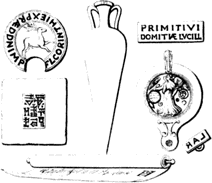
Errors in Chapter I
the loitering cask, (that bears its date) from
date, from
in the same passage, “Lyde” for expected “Lydus” is in Smart
and even allowing him to be sincere
eve nallowing
which have been alleged in its favour by Mr. Ottley.
Mr Ottley.
“It is possible,” says Zani,
say
Footnote I.39
the tale of the Cunio at p. 89, tom.
i.
tom i.
40
CHAPTER II.
PROGRESS OF WOOD ENGRAVING.
Playing-cards printed from wood-blocks—early german wood-engravers
at augsburg, nuremberg, and ulm—card-makers and wood-engravers in
venice in 1441—figures of saints engraved on wood—the st.
christopher, the annunciation, and the st. bridget in the collection of
earl spencer, with other old wood-cuts
described—block-books—the apocalypse, the history of the
virgin, and the work called biblia pauperum—speculum
salvationis—figured alphabet formerly belonging to sir george
beaumont—ars memorandi, and other smaller block-books.
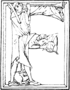rom
the facts which have been produced in the preceding chapter, there
cannot be a doubt that the principle on which wood engraving is
founded,—that of taking impressions on paper or parchment, with
ink, from prominent lines,—was known and practised in attesting
documents in the thirteenth and fourteenth centuries. Towards the end of
the fourteenth, or about the beginning of the fifteenth century, there
is reason to believe that this principle was adopted by the German
card-makers for the purpose of marking the outlines of the figures on
their cards, which they afterwards coloured by means of a stencil.II.1
The period at which the game of cards was first known in Europe, as
well as the people by whom they were invented, has been very learnedly,
though not very satisfactorily discussed. Bullet has claimed the
invention for the French, and Heineken for the Germans; while other
writers have maintained that the game was known in Italy earlier than in
any other part of Europe, and that it was introduced from the East.
From a passage discovered by M. Van Praet, in an old manuscript copy
of the romance of Renard le Contrefait, it appears that cards
were known in France about 1340, although Bullet was of opinion that
they
41
were invented in that country about 1376. At whatever period the game
was introduced, it appears to have been commonly known in France and
Spain towards the latter part of the fourteenth century. John I.,
King of Castile, by an edict issued in 1387, prohibited the game of
cards; and in 1397, the Provost of Paris, by an ordonnance, forbid all
working people to play at tennis, bowls, dice, cards, or
nine-pins, on working days. From a passage in the Chronicle of
Petit-Jehan de Saintré, written previous to 1380, it would appear that
the game of cards at that period was in disrepute. Saintré had been one
of the pages of Charles V. of France; and on his being appointed,
on account of his good conduct, to the situation of carver to the king,
the squire who had charge of the pages, lectured some of them on the
impropriety of their behaviour; such as playing at dice and cards,
keeping bad company, and haunting taverns and cabarets, those not being
the courses by which they might hope to arrive at the honourable post of
“ecuyer tranchant,” to which their companion, Saintré, had been
raised.
In an account-book of Charles Poupart, treasurer to Charles VI. of
France, there is an entry, made about 1393, of “fifty-six sols of Paris,
given to Jacquemin Gringonneur, painter, for three packs of cards, gilt
and coloured, and of different sorts, for the diversion of his majesty.”
From this passage the learned Jesuit Menestrier, who was not aware of
cards being mentioned by any earlier writer, concluded that they were
then invented by Gringonneur to amuse the king, who, in consequence of a
coup de soleil, had been attacked with delirium, which had
subsided into an almost continual depression of spirits. There, however,
can be no doubt that cards were known in France at least fifty years
before; though, from their being so seldom noticed previous to 1380, it
appears likely that the game was but little played until after that
period. Whether the figures on the cards supplied for the king’s
amusement were drawn and coloured by the hand, or whether the outlines
were impressed from wood-blocks, and coloured by means of a stencil, it
is impossible to ascertain; though it has been conjectured that, from
the smallness of the sum paid for them, they were of the latter
description. That cards were cheap in 1397, however they might be
manufactured, may be presumed from the fact of their being then in the
hands of the working people.
To whatever nation the invention of cards is owing, it appears that
the Germans were the first who practised card-making as a trade. In 1418
the name of a “Kartenmacher”—card-maker—occurs in the
burgess-book of the city of Augsburg; and in an old rate-book of the
city of Nuremburg, under the year 1433, we find “Ell.
Kartenmacherin;” that is, Ell.—probably for
Elizabeth—the card-maker. In the same book, under the year 1435,
the name of “Eliz. Kartenmacherin,” probably
42
the same person, is to be found; and in 1438 there occurs the name
“Margret Kartenmalerin”—Margaret the card-painter. It thus appears
that the earliest card-makers who are mentioned as living at Nuremberg
were females; and it is worthy of note that the Germans seem to have
called cards “Karten” before they gave them the name of
“Briefe.” Heineken, however, considers that they were first known
in Germany by the latter name; for, as he claimed the invention for his
countrymen, he was unwilling to admit that the name should be borrowed
either from Italy or France. He has not, however, produced anything like
proof in support of his opinion, which is contradicted by the negative
evidence of history.II.2
The name Briefe, which the Germans give to cards, also
signifies letters [epistolæ]. The meaning of the word, however, is
rather more general than the French term lettres, or the Latin
epistolæ which he gives as its synonyms, for it is also applied
in the sense in which we sometimes use the word “paper.” For instance,
“ein Brief Stecknadeln, ein Brief Tabak,” are literally
translated by the words “a paper of pins,
a paper of tobacco;” in which sense the word “Brief”
would, in Latin, be more correctly rendered by the term charta
than epistola. As it is in a similar sense—cognate with
“paper,” as used in the two preceding examples—that “Briefe” is
applied to cards, I am inclined to consider it as a translation of
the Latin chartaæ, the Italian carte, or the French
cartes, and hence to conclude that the invention of cards does
not belong to the people of Germany, who appear to have received cards,
both “name and thing,” from another nation, and after some time to have
given them a name in their own language.
In the town-books of Nuremberg, the term
Formschneider—figure-cutter,—the name appropriated to
engravers on wood, first occurs in 1449;II.3 and as it is found in
subsequent years mentioned in the same page with “Kartenmaler,” it seems
reasonable to conclude that in 1449, and probably earlier, the business
of the wood-engraver proper, and that of the card-maker, were distinct.
The primary meaning of the word form or forma is almost
precisely the same in most of the European languages.
43
It has erroneously been explained, in its relation to wood engraving, as
signifying a mould, whereas it simply means a shape or figure.
The model of wood which the carpenter makes for the metal-founder is
properly a form, and from it the latter prepares his mould in the
sand. The word form, however, in course of time declined from its
primary signification, and came to be used as expressive both of a model
and a mould. The term Formschneider, which was originally used
to distinguish the professed engraver of figures from the mere engraver
and colourer of cards, is still used in Germany to denote what we term a
wood-engraver.
About the time that the term Formschneider first occurs we
find Briefmalers mentioned, and at a later period
Briefdruckers—card-printers; and, though there evidently
was a distinction between the two professions, yet we find that between
1470 and 1500 the Briefmalers not only engraved figures
occasionally, but also printed books. The Formschneiders and the
Briefmalers, however, continued to form but one guild or
fellowship till long after the art of wood-engraving had made rapid
strides towards perfection, under the superintendence of such masters as
Durer, Burgmair, and Holbein, in the same manner as the barbers and
surgeons in our own country continued to form but one company, though
the “chirurgeon had long ceased to trim beards and cut hair, and the
barber had given up bleeding and purging to devote himself more
exclusively to the ornamental branch of his original profession.”
“Kartenmacher and Kartenmaler” says Von Murr, “or
Briefmaler, as they were afterwards called [1473], were known in
Germany eighty years previous to the invention of book-printing. The
Kartenmacher was originally a Formschneider, though, after the practice
of cutting figures of saints and of sacred subjects was introduced,
a distinction began to be established between the two
professions.”
The German card-makers of Augsburg, Nuremberg, and Ulm, it is stated,
sent large quantities of cards into Italy; and it was probably against
those foreign manufacturers that the fellowship of painters at Venice
obtained an order in 1441 from the magistracy, declaring that no foreign
manufactured cards, or printed coloured figures, should be brought into
the city, under the penalty of forfeiting such articles, and of being
fined xxx liv. xii soldi. This order was made in consequence of a
petition presented by the Venetian painters, wherein they set forth that
“the art and mystery of card-making and of printing figures, which were
practised in Venice, had fallen into total decay through the great
quantity of foreign playing-cards and coloured printed figures, which
were brought into the city.”II.4 It is hence evident that the art
both of the German
44
Kartenmacher and of the Formschneider was practised in
Venice in 1441; and, as it is then mentioned as being in decay, it no
doubt was practised there some time previously.
Heineken, in his “Neue Nachrichten,” gives an extract from a MS.
chronicle of the city of Ulm, completed in 1474, to the following
effect: “Playing-cards were sent barrelwise [that is, in small
casks] into Italy, Sicily, and also over sea, and exchanged for spices
and other wares. From this we may judge of the number of card-makers who
resided here.” The preceding passage occurs in the index, under the
head, “Business of card-making.” Heineken also gives the passage in his
“Idée Générale,” p. 245; but from the French translation, which he
there gives, it appears that he had misunderstood the word
“leglenweiss”—barrelwise—which he renders “en
ballots.” In his “Neue Nachrichten,” however, he inserts the explanation
between parentheses, (“das ist, in kleinen Fässern”)—i. e. in
small casks; which Mr. Singer renders “hogsheads,” and Mr. Ottley,
though he gives the original in a note, “large bales.” The word “lägel,”
a barrel, is obsolete in Germany, but its diminutive,
“leglin,”—as if “lägelen”—is still used in Scotland for the
name of the ewe-milker’s kit.
Some writers have been of opinion that the art of wood-engraving was
derived from the practice of the ancient caligraphists and illuminators
of manuscripts, who sometimes formed their large capital letters by
means of a stencil or of a wooden stamp. That large capitals were formed
in such a manner previous to the year 1400 there can be little doubt;
and it has been thought that stencils and stamps were used not only for
the formation of capital letters, but also for the impression of a whole
volume. Ihre, in a dissertation on the Gospels of Ulphilas,II.5 which are
supposed to be as old as the fifth century, has asserted that the silver
letters of the text on a purple ground were impressed by means of heated
iron stamps. This, however, is denied by the learned compilers of the
“Nouveau Traité de Diplomatique,” who had seen other volumes of a
similar kind, the silver letters of which were evidently formed with a
pen. A modern Italian author, D. Vincenzo Requeno, has
published a tractII.6 to prove that many supposed manuscripts from the
tenth to the fourteenth century, instead of being written with a pen,
were actually impressed by means of stamps. It is, however, extremely
45
probable that he is mistaken; for if his pretended discoveries were
true, this art of stamping must have been very generally practised; and
if so, it surely would have been mentioned by some contemporary writers.
Signor Requeno’s examination, I am inclined to suspect, has not
been sufficiently precise; for he seems to have been too willing to find
what he sought. In almost every collection that he examined, a pair
of fine compasses being the test which he employed, he discovered
voluminous works on vellum, hitherto supposed to be manuscript, but
which according to his measurement were certainly executed by means of a
stamp.
It has been conjectured that the art of wood-engraving was employed
on sacred subjects, such as the figures of saints and holy persons,
before it was applied to the multiplication of those “books of Satan,”
playing-cards. It however is not unlikely that it was first employed in
the manufacture of cards; and that the monks, availing themselves of the
same principle, shortly afterwards employed the art of wood-engraving
for the purpose of circulating the figures of saints; thus endeavouring
to supply a remedy for the evil, and extracting from the serpent a cure
for his bite.
Wood-cuts of sacred subjects were known to the common people of
Suabia, and the adjacent districts, by the name of Helgen or
Helglein, a corruption of Heiligen, saints;—a word which in
course of time they used to signify
prints—estampes—generally.II.7 In France the same
kind of cuts, probably stencil-coloured, were called
“dominos,”—the affinity of which name with the German Helgen is
obvious. The word “domino” was subsequently used as a name for coloured
or marbled paper generally, and the makers of such paper, as well as the
engravers and colourers of wood-cuts, were called “dominotiers.”II.8
As might, à priori, be concluded, supposing the Germans to
have been the first who applied wood-engraving to card-making, the
earliest wood-cuts have been discovered, and in the greatest abundance,
in that district where we first hear of the business of a card-maker and
a wood-engraver. From a convent, situated within fifty miles of the city
of Augsberg, where, in 1418, the first mention of a Kartenmacher occurs,
has been obtained the earliest wood-cut known,—the St.
Christopher, now in the possession of Earl Spencer, with the date 1423.
That this was the first cut of the kind we have no reason to suppose;
but though others executed in a similar manner are known, to not one of
them, upon anything like probable grounds, can a higher degree of
antiquity be
46
assigned. From 1423, therefore, as from a known epoch, the practice of
wood engraving, as applied to pictorial representations, may be
dated.
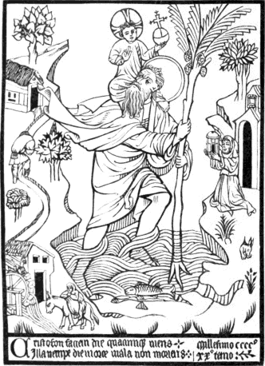
The first person who published an account of this most interesting
wood-cut was Heineken, who had inspected a greater number of old
wood-cuts and block-books than any other person, and whose unwearied
perseverance in searching after, and general accuracy in describing such
early specimens of the art of wood-engraving, are beyond all praise. He
found it pasted on the inside of the right-hand cover of a manuscript
volume in the library of the convent of Buxheim, near Memmingen in
Suabia. The manuscript, entitled Laus
VirginisII.9 and finished in 1417,
47
was left to the convent by Anna, canoness of Buchaw, who was living in
1427; but who probably died previous to 1435. The above reduced copy
conveys a pretty good idea of the composition and style of engraving of
the original cut, which is of a folio size, being eleven and a quarter
inches high, and eight inches and one-eighth wide.II.10
The original affords a specimen of the combined talents of the
Formschneider or wood-engraver, and the Briefmaler or card-colourer. The
engraved portions, such as are here represented, have been taken off in
dark colouring matter similar to printers’ ink, after which the
impression appears to have been coloured by means of a stencil. As the
back of the cut cannot be seen, in consequence of its being pasted on
the cover of the volume, it cannot be ascertained with any degree of
certainty whether the impression has been taken by means of a press, or
rubbed off from the block by means of a burnisher or rubber, in a
manner similar to that in which wood-engravers of the present day take
their proofs.
This cut is much better designed than the generality of those which
we find in books typographically executed from 1462, the date of the
Bamberg Fables, to 1493, when the often-cited Nuremberg Chronicle was
printed. Amongst the many coarse cuts which “illustrate” the latter, and
which are announced in the book itselfII.11 as having been “got up”
under the superintendence of Michael Wolgemuth, Albert Durer’s master,
and William Pleydenwurff, both “most skilful in the art of painting,”
I cannot find a single subject which either for spirit or feeling
can be compared to the St. Christopher. In fact, the figure of the
saint, and that of the youthful Christ whom he bears on his shoulders,
are, with the exception of the extremities, designed in such a style,
that they would scarcely discredit Albert Durer himself.
To the left of the engraving the artist has introduced, with a noble
disregard of perspective,II.12 what Bewick would have called a
“bit of Nature.” In the foreground a figure is seen driving an ass
loaded with
48
a sack towards a water-mill; while by a steep path a figure, perhaps
intended for the miller, is seen carrying a full sack from the back-door
of the mill towards a cottage. To the right is seen a hermit—known
by the bell over the entrance of his dwelling—holding a large
lantern to direct St. Christopher as he crosses the stream. The two
verses at the foot of the cut,
Cristofori faciem die quacunque tueris,
Illa nempe die morte mala non morieris,
may be translated as follows:
Each day that thou the likeness of St. Christopher shalt see,
That day no frightful form of death shall make an end of thee.
They allude to a popular superstition, common at that period in all
Catholic countries, which induced people to believe that the day on
which they should see a figure or image of St. Christopher, they should
not meet with a violent death, nor die without confession.II.13 To
this popular superstition Erasmus alludes in his “Praise of Folly;” and
it is not unlikely, that to his faith in this article of belief, the
squire, in Chaucer’s “Canterbury Tales,” wore
“A Christofre on his brest, of silver shene.”
The date “Millesimo cccco xxo
tercio”—1423—which is seen at the right-hand corner, at
the foot of the impression, most undoubtedly designates the year in
which the engraving was made.
The engraving, though coarse, is executed in a bold and free manner;
and the folds of the drapery are marked in a style which would do credit
to a proficient. The whole subject, though expressed by means of few
lines, is not executed in the very simplest style of art. In the
draperies a diminution and a thickening of the lines, where necessary to
the effect, may be observed; and the shades are indicated by means of
parallel lines both perpendicular, oblique, and curved, as may be seen
in the saint’s robe and mantle. In many of the wood-cuts executed
between 1462 and 1500, the figures are expressed, and the drapery
indicated, by simple lines of one undeviating degree of thickness,
without the slightest attempt at shading by means of parallel lines
running in a direction different to those marking the folds of the
drapery or the outlines of the figure. If mere rudeness of design, and
simplicity in the mode of execution, were to be considered as the sole
tests of antiquity in wood-engravings, upwards of a hundred, positively
known to have been executed between 1470 and 1500, might be produced as
affording intrinsic evidence of their having been executed at a period
antecedent to the date of the St. Christopher.
49
In the Royal Library at Paris there is an impression of St.
Christopher with the youthful Christ, which was supposed to be a
duplicate of that in the possession of Earl Spencer. On comparing them,
however, “it was quite evident,” says Dr. Dibdin, “at the first glance,
as M. Du Chesne admitted, that they were impressions taken from
different blocks. The question therefore was, after a good deal
of pertinacious argument on both sides—which of the two
impressions was the more ancient? Undoubtedly it was that of Lord
Spencer.” At first Dr. Dibdin thought that the French impression was a
copy of Earl Spencer’s, and that it might be as old as the year 1460;
but, from a note added in the second edition of his tour, he seems to
have received a new light. He there says: “The reasons upon which this
conclusion [that the French cut was a copy of a later date] was founded,
are stated at length in the preceding edition of this work: since which,
I very strongly incline to the supposition that the Paris
impression is a proof—of one of the cheats of De Murr.”II.14
On the inside of the first cover or “board” of the Laus Virginis, the
volume which contains the St. Christopher, there is also pasted a wood
engraving of the Annunciation, of a similar size to the above-named cut,
and impressed on the same kind of paper. As they are both worked off in
the same kind of dark-coloured ink, and as they evidently have been
coloured in the same manner, by means of a stencil, there can be little
doubt of their being executed about the same time. From the left-hand
corner of the Annunciation the figure of the Almighty has been torn out.
The Holy Ghost, who appears descending from the Father upon the Virgin
in the material form of a dove, could not well be torn out without
greatly disfiguring the cut. An idea may be formed of the original from
the following reduced copy.
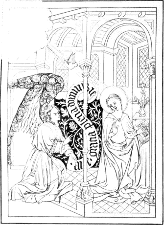
Respecting these cuts, which in all probability were engraved by some
one of the Formschneiders of Augsburg, Ulm, or Nuremberg,II.15
50
P. Krismer, who was librarian of the convent of Buxheim, and who
showed the volume in which they are pasted to Heineken, writes to Von
Murr to the following effect: “It will not be superfluous if I here
point out a mark, by which, in my opinion, old wood engravings may with
certainty be distinguished from those of a later period. It is this: In
the oldest wood-cuts only do we perceive that the engraver
[Formschneider] has frequently omitted certain parts, leaving them to be
afterwards filled up by the card-colourer [Briefmaler]. In the St.
Christopher there is no such deficiency, although there is in the other
cut which is pasted on the inside of the fore covering of the same
volume, and which, I doubt not, was executed at the same time as
the former. It represents the salutation of the Virgin by the angel
Gabriel, or, as it is also called, the Annunciation; and, from the
omission of the colours, the upper part
51
of the body of the kneeling Virgin appears naked, except where it is
covered with her mantle. Her inner dress had been left to be added by
the pencil of the card-colourer. In another wood-cut of the same kind,
representing St. Jerome doing penance before a small crucifix placed on
a hill, we see with surprise that the saint, together with the
instruments of penance, which are lying near him, and a whole forest
beside, are suspended in the air without anything to support them, as
the whole of the ground had been left to be inserted with the pencil.
Nothing of this kind is to be seen in more recent wood-cuts, when the
art had made greater progress. What the early wood-engravers could not
readily effect with the graver, they performed with the
pencil,—for the most part in a very coarse and careless
manner,—as they were at the same time both wood-engravers and
card-colourers.”II.16
Besides the St. Christopher and the Annunciation, there is another
old wood-cut in the collection of Earl Spencer which appears to belong
to the same period, and which has in all probability been engraved by a
German artist, as all who can read the German inscription above the
figure would reasonably infer. Before making any remarks on this
engraving, I shall first lay before the reader a reduced copy.
The figure writing is that of St. Bridget of Sweden, who was born in
1302 and died in 1373. From the representation of the Virgin with the
infant Christ in her arms we may suppose that the artist intended to
show the pious widow writing an account of her visions or revelations,
in which she was often favoured with the blessed Virgin’s appearance.
The pilgrim’s hat, staff, and scrip may allude to her pilgrimage to
Jerusalem, which she was induced to make in consequence of a vision. The
letters S. P. Q. R. in a shield, are no doubt intended to
denote the place, Rome, where she saw the vision, and where she died.
The lion, the arms of Sweden, and the crown at her feet, are most likely
intended to denote that she was a princess of the blood royal of that
kingdom. The words above the figure of the saint are a brief invocation
in the German language, “O Brigita bit Got für uns!” “O
Bridget, pray to God for us!” At the foot of the desk at which St.
Bridget is writing are the letters M. I.
Chrs., an abbreviation probably of Mater Jesu Christi, or if
German, Mutter Iesus Christus.II.17
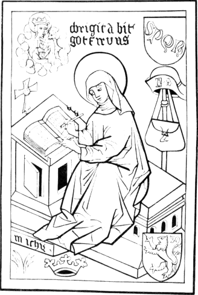
From the appearance of the back of this cut, as if it had been rubbed
52
smooth with a burnisher or rubber, there can be little doubt of the
impression having been taken by means of friction. The colouring matter
of the engraving is much lighter than in the St. Christopher and the
Annunciation, and is like distemper or water-colour; while that of the
latter cuts appears, as has been already observed, more like printer’s
ink. It is coarsely coloured, and apparently by the hand, unassisted
with the stencil. The face and hands are of a flesh colour. Her gown, as
well as the pilgrim’s hat and scrip, are of a dark grey; her veil, which
she wears hoodwise, is partly black and partly white; and the wimple
which she wears round her neck is also white. The bench and desk, the
pilgrim’s staff, the letters S. P. Q. R., the lion, the crown,
and the nimbus
53
surrounding the head of St. Bridget and that of the Virgin, are yellow.
The ground is green, and the whole cut is surrounded with a border of a
shining mulberry or lake colour.
Mr. Ottley, having at the very outset of his Inquiry adopted
Papillon’s story of the Cunio, is compelled, for consistency’s sake, in
the subsequent portion of his work, when speaking of early wood
engravings such as the above, to consider them, not as the earliest
known specimens of the art, but merely as wood engravings such as were
produced upwards of a hundred and thirty years after the amiable and
accomplished Cunio, a mere boy and a girl, had in Italy produced a
set of wood engravings, one of which was so well composed that Le Brun
might be suspected of having borrowed from it the design of one of his
most complicated pictures. In his desire, in support of his theory, to
refer the oldest wood-cuts to Italy, Mr. Ottley asks: “What if these two
prints [the St. Christopher and the Annunciation] should prove to be,
not the productions of Germany, but rather of Venice, or of some
district of the territory then under the dominion of that republic?”
His principal reasons for the preceding conjecture, are the ancient
use of the word stampide—“printed”—in the Venetian
decree against the introduction of foreign playing-cards in 1441; and
the resemblance which the Annunciation bears to the style of the early
Italian schools. Now, with respect to the first of these reasons, it is
founded on the assumption that both those impressions have been obtained
by means of a press of some kind or other,—a fact which remains
yet to be proved; for until the backs of both shall have been examined,
and the mark of the burnisher or rubber found wanting, no person’s mere
opinion, however confidently declared, can be decisive of the question.
It also remains to be proved that the word stampide, which occurs
in the Venetian decree, was employed there to signify “printed with a
press.” For it is certain that the low Latin word stampare,
with its cognates in the different languages of Europe, was used at that
period to denote impression generally. But even supposing that
“stampide” signifies “printed” in the modern acceptation of the
word, and that the two impressions in question were obtained by means of
a press; the argument in favour of their being Italian would gain
nothing, unless we assume that the foreign printed cards and
figures, which were forbid to be imported into Venice, were produced
either within the territory of that state or in Italy; for the word
stampide—“printed,” is applied to them as well as
those manufactured within the city. Now we know that the German
card-makers used to send great quantities of cards to Venice about the
period when the decree was made, while we have no evidence of any
Italian cities manufacturing cards for exportation in 1441; it is
therefore most likely that if the Venetians were acquainted with the use
54
of the press in taking impressions from wood-blocks, the Germans were so
too, and for these more probable reasons, admitting the cuts in question
to have been printed by means of a press:—First, the fact of those
wood-cuts being discovered in Germany in the very district where we
first hear of wood-engravers; and secondly, that if the Venetian
wood-engravers were acquainted with the use of the press in taking
impressions while the Germans were not, it is very unlikely that the
latter would be able to undersell the Venetians in their own city. Until
something like a probable reason shall be given for supposing the cuts
in question to be productions “of Venice, or some other district of the
territory then under the dominion of that republic,” I shall
continue to believe that they were executed in the district in which
they were discovered, and which has supplied to the collections of
amateurs so many old wood engravings of a similar kind. No wood
engravings executed in Italy, are known of a date earlier than those
contained in the “Meditationes Johannis de Turre-cremata,” printed at
Rome 1467,—and printed, be it observed, by a German, Ulrick Hahn.
The circular wood engravings in the British Museum,II.18 which Mr. Ottley
says are indisputably Italian, and of the old dry taste of the fifteenth
century, can scarcely be referred to an earlier period than 1500, and my
own opinion is that they are not older than 1510. The manner in which
they are engraved is that which we find prevalent in Italian wood-cuts
executed between 1500 and 1520.
With respect to the resemblance which the Annunciation bears to the
style of the early Italian school,—I beg to observe that it
equally resembles many of the productions of contemporary “schools” of
England and France, as displayed in many of the drawings contained in
old illuminated manuscripts. It would be no difficult matter to point
out in many old German engravings attitudes at least as graceful as the
Virgin’s; and as to her drapery, which is said to be “wholly unlike the
angular sharpness, the stiffness and the flutter of the ancient German
school,” I beg to observe that those peculiarities are not of so
frequent occurrence in the works of German artists, whether sculptors,
painters, or wood-engravers, who lived before 1450, as in the works of
those who lived after that period. Angular sharpness and flutter in the
draperies are not so characteristic of early German art generally, as of
German art towards the end of the fifteenth, and in the early part of
the sixteenth century.
55
Even the St. Bridget, which he considers to be of a date not later
than the close of the fourteenth century,II.19 Mr. Ottley, with a
German inscription before his eyes, is inclined to give to an artist of
the Low Countries; and he kindly directs the attention of Coster’s
partisans to the shield of arms—probably intended for those of
Sweden—at the right-hand corner of the cut. Meerman had discovered
a seal, having in the centre a shield charged with a lion
rampant—the bearing of the noble family of Brederode—a label
of three points, and the mark of illegitimacy—a bend sinister, and
surrounded by the inscription, “S[igillum] Lowrens Janssoen,” which with
him was sufficient evidence of its being the identical seal of Laurence,
the Coster or churchwarden of Harlem.II.20
We thus perceive on what grounds the right of Germany to three of the
oldest wood-cuts known is questioned; and upon what traits of
resemblance they are ascribed to Italy and the Low Countries. By
adopting Mr. Ottley’s mode of reasoning, it might be shown with equal
probability that a very considerable number of early wood
engravings—whether printed in books or separately—hitherto
believed to be German, were really executed in Italy.
An old wood engraving of the martyrdom of St. Sebastian, of a quarto
size, with a short prayer underneath, and the date 1437, apparently from
the same block, was preserved in the monastery of St. Blaze, in the
Black Forest on the confines of Suabia;II.21 and another, with the date
1443 inserted in manuscript, was pasted in a volume belonging to the
library of the monastery of Buxheim. The latter is thus described by Von
Murr: “Through the kindness of the celebrated librarian, Krismer, whom I
have so often mentioned, I am enabled to give an account of an
illuminated wood-cut, which at the latest must have been engraved in
1443. It is pasted on the inside of the cover of a volume which contains
‘Nicolai DunkelspülII.22 Sermonum Partem Hyemalem.’ It is
of quarto
56
size, being seven and a half inches high, and five and a quarter wide,
and is inclosed within a border of a single line. It is much soiled, as
we perceive in the figures on cards which have been impressed by means
of a rubber. The style in which it is executed is like that of no other
wood-cut which I have ever seen. The cut itself represents three
different subjects, the upper part of it being divided into two
compartments, each three inches square, and separated from each other by
means of a broad perpendicular line. In that to the right is seen St.
Dorothy sitting in a garden, with the youthful Christ presenting flowers
to her, of which she has her lap full. Before her stands a small
hand-basket,—also full of flowers,—such as the ladies of
Franconia and Suabia were accustomed to carry in former times. In the
left compartment is seen St. Alexius, lying at the foot of a flight of
steps, upon which a man is standing and emptying the contents of a pot
upon the saint.II.23 Between these compartments there appears in
manuscript the date ‘anno d’ni 1443.’ Both the ink and the
characters correspond with those of the volume. This date indicates the
time when the writer had finished the book and got it bound, as is more
clearly proved by a memorandum at the conclusion. In the year 1483,
before it came into the possession of the monastery of Buxheim, it
belonged to Brother Jacobus Matzenberger, of the order of the Holy
Ghost, and curate of the church of the Virgin Mary in Memmingen. The
whole of the lower part of the cut is occupied with Christ bearing his
cross, at the moment that he meets with his mother, whom one of the
executioners appears to be driving away. Simon of Cyrene is seen
assisting Christ to carry the cross. The engraving is executed in a very
coarse manner.”II.24
In the Royal Library at Paris there is an ancient wood-cut of St.
Bernardin, who is represented on a terrace, the pavement of which
consists of alternate squares of yellow, red, and green. In his right
hand the saint holds something resembling the consecrated wafer or host,
in the midst of which is inscribed the name of Christ; and in his left a
kind of oblong casket, on which are the words “Vide, lege, dulce
nomen.” Upon a scroll above the head of the saint is engraved the
sentence, “Ihesus semper sit in ore meo,” and behind him, on a
black label, is his name in yellow letters, “Sanct’ Bernard’.”
The cut is surrounded by a border of foliage, with the emblems of the
four Evangelists at the four corners, and
57
at the foot are the five following lines, with the date, impressed from
prominent lines:—
O . splendor . pudicitie . zelator . paupertatis . a
mator. innocentie . cultor . virginitatis . lustra
cors . apientie . protector .
veritatis . thro
num . fulgidum . eterne . majestatis . para
nobis . additum . divine . pietatis . amen. (1454)
This rare cut was communicated to Jansen by M. Vanpraet, the
well-known bibliographer and keeper of the Royal Library.II.25
“Having visited in my last tour,” says Heineken, after describing the
St. Christopher, “a great many convents in Franconia, Suabia,
Bavaria, and in the Austrian states, I everywhere discovered in
their libraries many of those kinds of figures, engraved on wood, and
pasted either at the beginning or the end of old volumes of the
fifteenth century. I have indeed obtained several of them. These
facts, taken altogether, have confirmed me in my opinion that the next
step of the engraver in wood, after playing-cards, was to engrave
figures of saints, which, being distributed and lost among the laity,
were in part preserved by the monks, who pasted them in the earliest
printed books with which they furnished their libraries.”II.26
A great many wood-cuts of devotional subjects, of a period probably
anterior to the invention of book-printing by Gutenberg, have been
discovered in Germany. They are all executed in a rude style, and many
of them are coloured. It is not unlikely that the most of these woodcuts
were executed at the instance of the monks for distribution among the
common people as helps to devotion; and that each monastery, which might
thus avail itself of the aid of wood engraving in the work of piety,
would cause to be engraved the figure of its patron saint. The practice,
in fact, of distributing such figures at monasteries and shrines to
those who visit them, is not yet extinct on the Continent. In Belgium it
is still continued, and, I believe, also in Germany, France, and
Italy. The figures, however, are not generally impressions from
wood-blocks, but are for the most part wholly executed by means of
stencils. One of the latter class, representing the shrine of “Notre
Dame de Hal,”—coloured in the most wretched taste with brick-dust
red and shining green,—is
58
now lying before me. It was given to a gentleman who visited Halle, near
Brussels, in 1829. It is nearly of the same size as many of the old
devotional wood-cuts of Germany, being about four inches high, by two
and three-quarters wide.II.27
The next step in the progress of wood engraving, subsequent to the
production of single cuts, such as the St. Christopher, the
Annunciation, and the St. Bridget, in each of which letters are
sparingly introduced, was the application of the art to the production
of those works which are known to bibliographers by the name of BLOCK-BOOKS: the most celebrated of which
are the Apocalypsis, seu Historia Sancti Johannis; the Historia Virginis
ex Cantico Canticorum; and the Biblia Pauperum. The first is a history,
pictorial and literal, of the life and revelations of St. John the
Evangelist, derived in part from the traditions of the church, but
chiefly from the book of Revelations. The second is a similar history of
the Virgin, as it is supposed to be typified in the Songs of Solomon;
and the third consists of subjects representing some of the most
important passages in the Old and New Testament, with texts either
explaining the subject, or enforcing the example of duty which it may
afford. With the above, the Speculum Humanæ Salvationis is usually,
though improperly, classed, as the whole of the text, in that which is
most certainly the first edition, is printed from movable metal types.
In the others the explanatory matter is engraved on wood, on the same
block with the subject to which it refers.
All the above books have been claimed by Meerman and other Dutch
writers for their countryman, Laurence Coster: and although no date,
either impressed or manuscript, has been discovered in any one copy from
which the period of its execution might be ascertained,II.28 yet such
appears to have been the clearness of the intuitive light which guided
those authors, that they have assigned to each work the precise year in
which it appeared. According to Seiz, the History of the Old and New
Testament, otherwise called the Biblia Pauperum, appeared in 1432; the
History of the Virgin in 1433; the Apocalypse in 1434; and the Speculum
in 1439. For such assertions, however, he has not the slightest ground.
That the three first might appear at some period between 1430 and 1450,
is not unlikely;II.29 but that the Speculum—the text of which
59
in the first edition was printed from metal types—should be
printed before 1460, is in the highest degree improbable.
Upon extremely slight grounds it has been conjectured that the Biblia
Pauperum, the Apocalypse, and the Ars Moriendi,—another
block-book,—were engraved before the year 1430. The Rev.
T. H. Horne, “a gentleman long and well known for his familiar
acquaintance with books printed abroad,” says Dr. Dibdin, “had a copy of
each of the three books above mentioned, bound in one volume, upon the
cover of which the following words were stamped: Hic liber relegatus
fuit per Plebanum. ecclesie”—with the date, according to the best
of the Rev. Mr. Horne’s recollection, 142(8). As he had broken up the
volume, and had parted with the contents, he gave the above information
on the strength of his memory alone. He was, however, confident that
“the binding was the ancient legitimate one, and that the treatises had
not been subsequently introduced into it, and that the date was 142 odd;
but positively anterior to 1430.”II.30
In such a case as this, however, mere recollection cannot be admitted
as decisive of the fact, more especially when we know the many instances
in which mistakes have been committed in reading the numerals in ancient
dates. At page 88 of his Inquiry, Mr. Ottley, catching at every straw
that may help to support his theory of wood engraving having been
practised by the Cunio and others in the fourteenth century, refers to a
print which a Monsieur Thierry professed to have seen at Lyons,
inscribed “Schoting of Nuremberg,” with
the date 1384; and at p. 256 he alludes to it again in the
following words: “The date 1384 on the wood-cut preserved at Lyons, said
to have been executed at Nuremberg, appears, I know not why, to
have been suspected.” It has been more than suspected; for, on
examination, it has been found to be 1584. Paul Von Stettin published an
account of a Biblia Pauperum, the date of which he supposed to be 1414;
but which, when closely examined, was found to be 1474: and Baron Von
Hupsch, of Cologne, published in 1787 an account of some wood-cuts which
he supposed to have been executed in 1420; but which, in the opinion of
Breitkopf, were part of the cuts of a Biblia Pauperum, in which it was
probably intended to give the
60
explanations in moveable types underneath the cuts, and probably of a
later date than 1470.II.31
It is surprising that the Rev. Mr. Horne, who is no incurious
observer of books, but an author who has written largely on
Bibliography, should not have carefully copied so remarkable a date, or
communicated it to a friend, when it might have been confirmed by a
careful examination of the binding; and still more surprising is it that
such binding should have been destroyed. From the very fact of his not
having paid more particular attention to this most important date, and
from his having permitted the evidence of it to be destroyed, the Rev.
Mr. Horne seems to be an incompetent witness. Who would think of calling
a person to prove from recollection the date of an old and important
deed, who, when he had it in his possession, was so little aware of its
value as to throw it away? The three books in question, when covered by
such a binding, would surely be much greater than when bound in any
other manner. Such a volume must have been unique; and, if the date on
the binding were correct, it must have been admitted as decisive of a
fact interesting to every bibliographer in Europe. It is not even
mentioned in what kind of numerals the date was expressed, whether in
Roman or Arabic. If the numerals had been Arabic, we might very
reasonably suppose that the Rev. Mr. Horne had mistaken a seven for a
two, and that, instead of “142 odd,” the correct date was “147 odd.” In
Arabic numerals, such as were used about the middle of the fifteenth
century, the seven may very easily be mistaken for a two.
The earliest ancient binding known, on which a date is impressed, is,
I believe, that described by Laire.II.32 It is that of a
copy of “Sancti Hieronymi Epistolæ;” and the words, in the same manner
as that of the binding of which the Rev. Mr. Horne had so accurate a
recollection, were “stamped at the extremity of the binding, towards the
edge of the squares.” It is only necessary to cite the words impressed
on one of the boards, which were as follows:
“Illigatus est Anno Domini 1469
Per me Johannem
Richenbach Capellanum
In Gyslingen.”II.33
The numerals of the date it is to be observed were Arabic. In the
library of Dr. Kloss of Frankfort, sold in London by Sotheby and Son in
1835, were two volumes, “St. Augustini de Civitat. Dei, Libri xxii.
61
1469,” and “St. Augustini Confessiones” of the same date; both of which
were bound by “Johannes Capellanus in Gyslingen,” and who in the same
manner had impressed his name on the covers with the date 1470. Both
volumes had belonged to “Dominus Georgius Ruch de Gamundia.”II.34 That
the volume formerly in the Rev. Mr. Horne’s possession was bound by the
curate of Geisslingen I by no means pretend to say, though I am firmly
of opinion that it was bound subsequent to 1470, and that the character
which he supposed to be a two was in reality a different figure. It is
worthy of remark that it appears to have been bound by the “Plebanus” of
some church, a word which is nearly synonymous with “Capellanus.”II.35
As it does not come within the plan of the present volume to give a
catalogue of all the subjects contained in the block-books to which it
may be necessary to refer as illustrating the progress of wood
engraving, I shall confine myself to a general notice of the manner
in which the cuts are executed, with occasional observations on the
designs, and such remarks as may be likely to explain any peculiarity of
appearance, or to enable the reader to form a distinct idea of the
subject referred to.
At whatever period the Apocalypse, the History of the Virgin, and the
Biblia Pauperum may have been executed, the former has the appearance of
being the earliest; and in the absence of everything like proof upon the
point, and as the style in which it is engraved is certainly more simple
than that of the other two, it seems entitled to be first noticed in
tracing the progress of the art.
Of the Apocalypse,—or “Historia Sancti Johannis Evangelistæ
ejusque Visiones Apocalypticæ,” as it is mostly termed by
bibliographers, for the book itself has no title,—Heineken
mentions no less than six editions, the earliest of which he considers
to be that described by him at page 367 of his “Idée Générale d’une
Collection complète d’Estampes.” He, however, declares that the marks by
which he has assigned to each edition its comparative antiquity are not
infallible. It is indeed very evident that the marks which he assumed as
characteristic of the relative order of the different editions were
merely arbitrary, and could by no means be admitted as of the slightest
consequence in enabling any
62
person to form a correct opinion on the subject. He notices two editions
as the first and second, and immediately after he mentions a
circumstance which might almost entitle the third to take precedence of
them both; and that which he saw last he thinks the oldest of all. The
designs of the second edition described by him, he says, are by another
master than those of the first, although the artist has adhered to the
same subjects and the same ideas. The third, according to his
observations, differs from the first and second, both in the subjects
and the descriptive text. The fourth edition is from the same blocks as
the third; the only difference between them being, that the fourth is
without the letters in alphabetical order which indicate the succession
of the cuts. The fifth differed from the third or fourth only in the
text and the directing letters, as the designs were the same; the only
variations that could be observed being extremely trifling. After having
described five editions of the book, he decides that a sixth, which he
saw after the others, ought to be considered the earliest of all.II.36 In all the copies which he had seen, the
impressions had been taken by means of a rubber, in such a manner that
each leaf contained only one engraving; the other side, which commonly
bore the marks of the rubber, being without a cut. The impressions when
collected into a volume faced each other, so that the first and last
pages were blank.
The edition of the Apocalypse to which I shall now refer is that
described by Heineken, at page 364, as the fifth; and the copy is that
mentioned by him, at page 367, as then being in the collection of
M. de Gaignat, and as wanting two cuts, Nos. 36 and 37. It is at
present in the King’s Library at the British Museum.
It is a thin folio in modern red morocco binding, and has, when
perfect, consisted of fifty wood engravings, with their explanatory text
also cut in wood, generally within an oblong border of a single line,
within the field of the engraving, and not added underneath, as
in the Speculum Salvationis, nor in detached compartments, both above
and below, as in the Biblia Pauperum. The paper, which is somewhat of a
cream colour, is stout, with rather a coarse surface, and such as we
find the most ancient books printed on. As each leaf has been pasted
down on another of modern paper, in order to preserve it, the marks of
the rubber at the back of each impression, as described by Heineken,
cannot be seen.
The annexed outline is a reduced copy of a paper-mark, which may be
perceived on some of the leaves. It is very like that numbered “vii.” at
p. 224, vol. i. of Mr. Ottley’s Inquiry, and which he says
occurs in the edition called the first Latin of the Speculum
Salvationis. It is nearly the same as that which is to be seen in Earl
Spencer’s “Historia Virginis;” and Santander
63
states that he has noticed a similar mark in books printed at Cologne by
Ulric Zell, and Bart. de Unkel; at Louvain by John Veldener and Conrad
Braen; and in books printed at Utrecht by Nic. Ketelaer and Gerard de
Leempt.
The size of the largest cuts, as defined by the plain lines which
form the border, is about ten and five-eighths inches high, by seven and
six-eighths inches wide; of the smallest, ten and two-eighths inches
high, by seven and three-eighths wide.II.37 The order in which they are
to be placed in binding is indicated by a letter of the alphabet, which
serves the same purpose as our modern signatures,—engraved in a
conspicuous part of the cut. For instance, the first two, which, as well
as the others, might either face each other or be pasted back to back,
are each marked with the letter a;
the two next with the letter b, and
so on through the alphabet. As the alphabet—which has the i the
same as the j, the v the same as the u, and has not the w—became
exhausted at the forty-sixth cut, the forty-seventh and forty-eighth are
marked with a character which was used to represent the words “et
cetera;” and the forty-ninth and fiftieth with the terminal abbreviation
of the letters “us.” In the copy described by Heineken, he observed that
the directing letters m and n were wanting in the twenty-fourth and
twenty-sixth cuts, and in the copy under consideration they are also
omitted. The m, however, appears to have been engraved, though for some
reason or other not to have been inked in taking an impression; for on a
careful examination of this cut,—without being aware at the time
of Heineken having noticed the omission,—I thought that I could
very plainly discern the indention of the letter above one of the angels
in the upper compartment of the print.
Of the forty-eight cutsII.38 contained in the Museum copy, the
greater number are divided by a horizontal line, nearly in the middle,
and thus each consists of two compartments; of the remainder, each is
occupied by a single subject, which fills the whole page. In some, the
explanatory text consists only of two or three lines; and in others it
occupies so
64
large a space, that if it were set up in moderately sized type, it would
be sufficient to fill a duodecimo page. The characters are different
from those in the History of the Virgin and the Biblia Pauperum, and are
smaller than those of the former, and generally larger and more
distinctly cut than those of the latter; and although, as well as in the
two last-named books, the words are much abbreviated, yet they are more
easy to be made out than the text of either of the others. The
impressions on the whole are better taken than those of the Biblia
Pauperum, though in lighter-coloured ink, something like a greyish
sepia, and apparently of a thinner body. It does not appear to have
contained any oil, and is more like distemper or water-colour than
printer’s ink. From the manner in which the lines are indented in the
paper, in several of the cuts, it is evident that they must either have
been subjected to a considerable degree of pressure or have been very
hard rubbed.
Although some of the figures bear a considerable degree of likeness
to others of the same kind in the Biblia Pauperum, I cannot think
that the designs for both books were made by the same person. The
figures in the different works which most resemble each other are those
of saints and angels, whose form and expression have been represented
according to a conventional standard, to which most of the artists of
the period conformed, in the same manner as in representing the Almighty
and Christ, whether they were painters, glass-stainers, carvers, or
wood-engravers. In many of the figures the drapery is broken into easy
and natural folds by means of single lines; and if this were admitted as
a ground for assigning the cut of the Annunciation to Italy, with much
greater reason might the Apocalypse be ascribed to the same country.
Without venturing to give an opinion whether the cuts were engraved
in Germany, Holland, or in the Low Countries, the drawing of many of the
figures appears to correspond with the idea that I have formed of the
style of Greek art, such as it was in the early part of the fifteenth
century. St. John was the favourite apostle of the Greeks, as St. Peter
was of the church of Rome; and as the Revelations were more especially
addressed to the churches of Greece, they were more generally read in
that country than in Western Europe. Artists mostly copy, in the heads
which they draw, the general expression of the countryII.39 to which
they belong, and where they have received their first impressions; and
in the Apocalypse the character of several of the heads appears to be
decidedly Grecian. The general representation, too, of several visions
would seem to have been suggested by a Greek who was familiar with that
portion of the New Testament which was so generally perused in his
native land, and whose annunciations and figurative prophecies were, in
the early
65
part of the fifteenth century, commonly supposed by his countrymen to
relate to the Turks, who at that time were triumphing over the cross.
With them Mahomet was the Antichrist of the Revelations, and his
followers the people bearing the mark of the beast, who were to
persecute, and for a time to hold in bondage, the members of the church
of Christ. As many Greeks, both artists and scholars, were driven from
their country by the oppression of the Turks several years before the
taking of Constantinople in 1453, I am induced to think that to a
Greek we owe the designs of this edition of the Apocalypse. In the lower
division of the twenty-third cut, m, representing the fight
of Michael and his angels with the dragon, the following shields are
borne by two of the heavenly host.
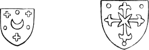
The crescent, as is well known, was one of the
badges of Constantinople long previous to its capture by the Turks. The
sort of cross in the other shield is very like that in the arms of the
knights of St. Constantine, a military order which is said to have
been founded at Constantinople by the Emperor Isaac Angelus Comnenus, in
1190. The above coincidences, though trifling, tend to support the
opinion that the designs were made by a Greek artist. It is, however,
possible, that the badges on the shields may have been suggested by the
mere fancy of the designer, and that they may equally resemble the
heraldic bearings of some order or of some individuals of Western
Europe.
Though some of the designs are very indifferent, yet there are others
which display considerable ability, and several of the single figures
are decidedly superior to any that are contained in the other
block-books. They are drawn with greater vigour and feeling; and though
the designs of the Biblia Pauperum show a greater knowledge of the
mechanism of art, yet the best of them, in point of expression and
emphatic marking of character, are inferior to the best in the
Apocalypse.
With respect to the engraving, the cuts are executed in the simplest
manner, as there is not the least attempt at shading, by means of cross
lines or hatchings, to be perceived in any one of the designs. The most
difficult part of the engraver’s task, supposing the drawings to have
been made by another person, would be the cutting of the letters, which
in several of the subjects must have occupied a considerable portion of
66
time, and have required no small degree of care. The following is a
reduced copy of the first cut.
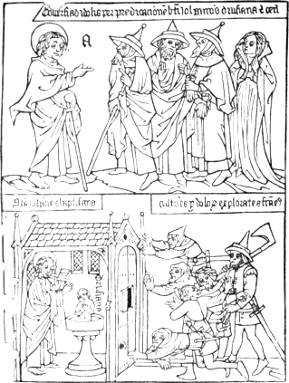
In the upper portion of the subject, St. John is seen addressing four
persons, three men and a woman; and the text at the top informs us of
the success of his ministry: “Conversi ab idolis, per predicationem
beati Johannis, Drusiana et ceteri.”—“By the preaching of St.
John, Drusiana and others are withdrawn from their idols.” The letter
a, a little above the saint’s
outstretched hand, indicates that the cut is the first of the series. In
the lower compartment St. John is seen baptizing Drusiana, who, as she
stands naked in the font, is of very small size compared with the saint.
The situation in which Drusiana is placed might be alleged in support of
their peculiar tenets, either by the Baptists, who advocate immersion as
the proper mode of administering the rite, or by those who consider
sprinkling as sufficient; but in each case with a difficulty which it
would not be easy to explain: for if Drusiana were to be baptized by
immersion, the font is too small to allow her to be dipped overhead; and
67
if the rite were to be administered by mere sprinkling, why is she
standing naked in the font? To the right of the cut are several figures,
two of whom are provided with axes, who seem wishful to break open the
door of the chapel in which St. John and his proselyte are seen. The
inscription above their heads lets us know that they
are—“Cultores ydolorum explorantes facta
ejus;”—“Worshippers of idols watching the saint’s
proceedings.”
The following cut is a copy of the eighteenth of the Apocalypse,
which is illustrative of the XIth and
XIIIth chapters of Revelations. The
upper portion represents the execution of the two witnesses of the Lord,
who are in the tablet named Enoch and Helyas, by the command of the
beast which ascendeth out of the bottomless pit, and which is
Antichrist. He is seen issuing his commands for the execution of the
witnesses; and the face of the executioner who has just used his sword,
and who is looking towards him with an expression of brutal exultation,
might have served Albert Durer for that of the mocker in his cut of
Christ crowned with thorns.
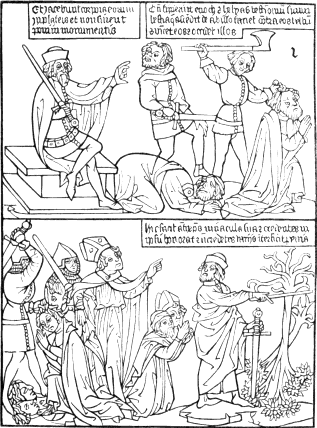
68
The inscription to the right, is the 7th verse of the XIth chapter, with the names of Enoch and Helyas
inserted as those of the two witnesses: “Cum finierunt Enoch et
Helyas testimonium suum, bestia quæ ascendit de abisso faciet contra eos
bellum, et vincet eos et occidet illos.” In our translation the
verse is rendered thus: “And when they shall have finished their
testimony, the beast that ascendeth out of the bottomless pit shall make
war against them, and shall overcome them and kill them.”
The tablet to the left contains the following inscription: “Et
jacebunt corpora eorum in plateis, et non sinent poni in
monumentis.” It is formed of two passages, in the 8th and 9th verses
of the XIth chapter of Revelations,
which are thus rendered in our version of the Bible: “And their dead
bodies shall lie in the street, . . . and they of the people
. . . shall not suffer their dead bodies to be put in
graves.”
In the lower compartment Antichrist is seen working his miracles,
uprooting the two olive trees, typical of the two witnesses whom he had
caused to be slain.II.40 Two of his followers are seen kneeling as if
worshipping him, while more to the left are the supporters of the true
faith delivered into the hands of executioners. The design is
illustrative of the XIIIth chapter of Revelations. The following is the
inscription above the figure of Antichrist:—“Hic facit
Antichristus miracula sua, et credentes in ipsum honorat, et incredentes
variis interficit pœnis.”—“Here Antichrist is performing his
miracles, honouring those who believe in him, and putting the
incredulous to death by various punishments.” The leaves of the trees
which Antichrist has miraculously uprooted are extremely like those of
the tree of life engraved in one of the cuts of the Biblia Pauperum, and
of which a copy will be found in a subsequent page.
In several of the cuts, the typical expressions which occur in the
texts are explained. Thus, in cut eighth, we are informed that “Stolæ
albæ animarum gloriam designant.”—“The white vestments denote
the glory of departed souls.” In the lower compartment of the same cut,
the “cæli recessio”—“the opening of the heavens”—is
explained to be the communication of the Bible to the Gentiles. In the
lower compartment of the ninth cut, “much incense” is said to signify
the precepts of the Gospel; the “censers,” the hearts of the Apostles;
and the “golden altar,” the Church.
The next block-book which demands notice is that named “Historia seu
Providentia Virginis Mariæ, ex Cantico Canticorum:” that is, “The
History or Prefiguration of the Virgin Mary, from the Song of Songs.” It
is of small-folio size, and consists of sixteen leaves, printed on one
side only by means of friction; and the ink is of a dark brown,
approaching nearly to black. Each impressed page contains two subjects,
69
one above the other; the total number of subjects in the book is,
consequently, thirty-two.
Of this book, according to the observations of Heineken, there are
two editions; which, from variations noticed by him in the explanatory
text, are evidently from different blocks; but, as the designs are
precisely the same, it is certain that the one has been copied from the
other.II.41 That which he considers to be the first edition,
has, in his opinion, been engraved in Germany; the other, he thinks, was
a copy of the original, executed by some engraver in Holland. The
principal ground on which he determines the priority of the editions is,
that in the one the text is much more correctly given than in the other;
and he thence concludes that the most correct would be the second. In
this opinion I concur; not that his rule will universally hold good, but
that in this case the conclusion which he has drawn seems the most
probable. The designs, it is admitted, are precisely the same; and as
the cuts of the one would in all probability be engraved from tracings
or transfers of the other, it is not likely that we should find such a
difference in the text of the two editions if that of the first were
correct. A wood-engraver—on this point I speak from
experience—would be much more likely to commit literal errors in
copying manuscript, than to deviate in cutting a fac-simile from a
correct impression. Had the text of the first edition been
correct,—considering that the designs of the one edition are exact
copies of those of the other,—it is probable that the text of both
would have been more nearly alike. But as there are several errors in
the text of the first edition, it is most likely that many of them would
be discovered and corrected by the person at whose instance the designs
were copied for the second. Diametrically opposite to this conclusion is
that of Mr. Ottley, who argues as follows:II.42 “Heineken
endeavours to draw another argument in favour of the originality of the
edition possessed by Pertusati, Verdussen, and the Bodleian library,
from the various errors, in that edition, in the Latin inscriptions on
the scrolls; which, he says, are corrected in the other edition. But it
is evident that this circumstance makes in favour of an opposite
conclusion. The artist who originally invented the work must have been
well acquainted with Latin, since it is, in fact, no other than an union
of many of the most beautiful verses of the Book of Canticles, with a
series of designs illustrative of the divine mysteries supposed to be
revealed in that sacred poem; and, consequently, we have reason to
consider that edition the original in which the inscriptions are given
with the most correctness; and to ascribe the gross blunders in the
other to the ignorance of some ordinary wood-engraver by whom the work
was copied.” Even granting the assumption that the
70
engraver of the edition, supposed by Mr. Ottley to be the first, was
well acquainted with Latin, and that he who engraved the presumed second
did not understand a word of that language, yet it by no means follows
that the latter could not make a correct tracing of the engraved text
lying before him. Because a draughtsman is unacquainted with a language,
it would certainly be most erroneous to infer that he would be incapable
of copying the characters correctly. Besides, though it does not benefit
his argument a whit, it is surely assuming too much to assert that the
artist who made the designs also selected the texts, and that he
must have been well acquainted with Latin; and that he who
executed Mr. Ottley’s presumed second edition was some ignorant ordinary
wood-engraver. Did the artists who executed the fac-similes in Mr.
Ottley’s work, or in Dr. Dibdin’s “Bibliotheca Spenceriana,” understand
the abbreviated Latin which in many instances they had to engrave; and
did they in consequence of their ignorance of that language copy
incorrectly the original texts and sentences which were before them?
In a copy which Heineken considers to be of the second edition,
belonging to the city of Harlem, that writer observed the following
inscription, from a wood block, impressed, as I understand him, at the
top of the first cut. “Dit is die
voersinicheit va Marie der mod . godes . en is gehete in lath .
Cāti.” This inscription—which Heineken says is “en langue
Flamande, ou plûtôt en Plât-Alemand”—may be expressed in English
as follows: “This is the prefiguration of Mary the mother of God, and is
in Latin named the Canticles.” Heineken expresses no doubt of this
inscription being genuine, though he makes use of it as an argument in
support of his opinion, that the copy in which it occurs was one of
later edition; “for it is well known,” he observes, “that the earliest
editions of printed books are without titles, and more especially those
of block-books.” As this inscription, however, has been found in the
Harlem copy only, I am inclined to agree with Mr. Ottley in
considering it as a silly fraud devised by some of the compatriots of
Coster for the purpose of establishing a fact which it is, in reality,
much better calculated to overthrow.II.43
Heineken, who appears to have had more knowledge than taste on the
subject of art, declares the History of the Virgin to be “the most
Gothic of all the block-books; that it is different from them both in
the style of the designs and of the engraving; and that the figures are
very like the ancient sculptures in the churches of Germany.” If by the
term “Gothic” he means rude and tasteless, I differ with him
entirely; for, though there be great sameness in the subjects, yet the
figures, generally, are more gracefully designed than those of any other
block-book
71
that I have seen. Compared with them, those of the Biblia Pauperum and
the Speculum might be termed “Gothic” indeed.
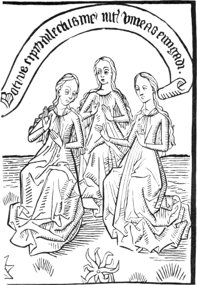
The above group,—from that which Heineken considers the first
edition,—in which the figures are of the size of the originals, is
taken from the seventh subject in Mr. Ottley’s enumeration;II.44 that
is, from the upper portion of the fourth cut.
The text is the 14th verse of the 1st chapter of the Song of Solomon:
“Botrus cipri dilectus meus inter vineas enngadi;” which in our
Bible is translated: “My beloved is unto me as a cluster of camphire in
the vineyards of En-gedi.” In every cut the female figures are almost
precisely the same, and the drapery and the expression scarcely vary.
From the easy and graceful attitudes of his female figures, as well as
from the
72
manner in which they are clothed, the artist may be considered as the
Stothard of his day.
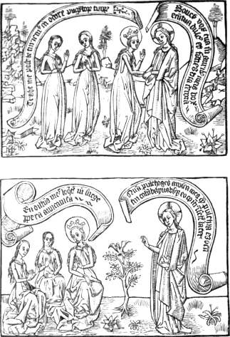
The two preceding subjects are impressed on the second leaf, in the
order in which they are here represented, forming Nos. 3 and 4 in
Mr. Ottley’s enumeration. They are reduced copies from the originals in
the first edition, and afford a correct idea of a complete page.II.45
On the scroll to the left, in the upper subject, the words are
intended for—“Trahe me, post te curremus in odore unguentorum
tuorum.” They are to be found in the 4th and 3rd verses of the 1st
chapter of the Song of Solomon. In our Bible the phrases are translated
as follows: “Draw me, we will run after thee, . . . [in] the
savour of thy good ointments.”
73
In the scroll to the right, the inscription is from the 14th verse of
the IInd chapter: “Sonet vox tua in
auribus meis, vox enim tua dulcis et facies tua decora:” which is
thus rendered in our Bible: “Let me hear thy voice, for sweet is thy
voice, and thy countenance is comely.”
On the scroll to the left, in the lower compartment, is the following
inscription, from verse 10th, chapter IInd: “En dilectus meus loquitur mihi, Surge,
propera, amica mea:” in our Bible translated thus: “My beloved
spake, and said unto me, Rise up, my love, my fair one, and come away.”
The inscription on the scroll to the right is from 1st verse of chapter
IVth: “Quam pulchra es amica mea,
quam pulchra es! Oculi tui columbarum, absque eo quod intrinsecus
latet.” The translation of this passage in our Bible does not
correspond with that of the Vulgate in the last clause: “Behold thou art
fair, my love; behold thou art fair; thou hast doves’ eyes within thy
locks.”
The style in which the cuts of the History of the Virgin are engraved
indicates a more advanced state of art than those in the Apocalypse. The
field of each cut is altogether better filled, and the subjects contain
more of what an engraver would term “work;” and shadowing, which is
represented by courses of single lines, is also introduced. The
back-grounds are better put in, and throughout the whole book may be
observed several indications of a perception of natural beauty; such as
the occasional introduction of trees, flowers, and animals.
A vine-stock, with its trellis, is happily and tastefully
introduced at folio 4 and folio 10; and at folio 12 a goat and two
sheep, drawn and engraved with considerable ability, are perceived in
the background. Several other instances of a similar kind might be
pointed out as proofs that the artist, whoever he might be, was no
unworthy precursor of Albert Durer.
From a fancied delicacy in the engraving of the cuts of the History
of the Virgin, Dr. Dibdin was led to conjecture that they were the
“production of some metallic substance, and not struck off from wooden
blocks.”II.46 This speculation is the result of a total
ignorance of the practical part of wood engraving, and of the
capabilities of the art; and the very process which is suggested
involves a greater difficulty than that which is sought to be removed.
But, in fact, so far from the engravings being executed with a delicacy
unattainable on wood, there is nothing in them—so far as the mere
cutting of fancied delicate lines is concerned—which a mere
apprentice of the present day, using very ordinary tools, would not
execute as well, either on pear-tree, apple-tree, or beech, the kinds of
wood on which the earliest engravings are supposed to have been made.
Working on box, there is scarcely a line in all the series which a
skilful wood-engraver could not split. In a similar manner Mr. John
74
Landseer conjectured from the frequent occurrence of cross-hatching in
the wood engravings of the sixteenth century, that they, instead of
being cut on wood, had in reality been executed on type-metal; although,
as is known to every wood-engraver, the execution of such hatchings on
type-metal would be more difficult than on wood. When, in refutation of
his opinion, he was shown impressions from such presumed blocks or
plates of type-metal, which from certain marks in the impressions had
been evidently worm-eaten, he—in the genuine style of an
“ingenious disputant” who could
“Confute the exciseman and puzzle the vicar,—”
abandoned type-metal, and fortified his “stubborn opinion
behind vegetable putties or pastes that are capable of being
hardened—or any substance that is capable of being
worm-eaten.”II.47 Such “commenta opinionum”—the mere
figments of conjecture—only deserve notice in consequence of their
extravagance.
The History of the Virgin, in the same manner as every other ancient
block-book, has been claimed for Coster by those who ascribe to him the
invention both of wood engraving and printing with moveable types; but
if even the churchwarden of St. Bavon’s in Harlem ever had handled a
graver, or made a design, or if he was even the cause of wood-cuts being
engraved by others,—every one of which assertions I very much
doubt,—I should yet feel strongly inclined to believe that the
work in question was the production of an artist residing either in
Suabia or Alsace.
Scarcely any person who has had an opportunity of examining the works
of Martin Schön, or Schöngauer,—one of the earliest German
copper-plate engravers,—who is said to have died in 1486, can
fail, on looking over the designs in the History of the Virgin, to
notice the resemblance which many of his female figures bear to those in
the above-named work. The similarity is too striking to have been
accidental. I am inclined to believe that Martin Schön must have
studied—and diligently too—the subjects contained in the
History, or that he had received his professional education in a school
which might possibly be founded by the artist who designed and engraved
the wood-cuts in question, or under a master who had thoroughly adopted
their style.
Martin Schön was a native of Colmar in Alsace, where he was born
about 1453, but was a descendant of a family, probably of artists, which
originally belonged to Augsburg. Heineken and Von Murr both bear
testimony,II.48 though indirectly, to the resemblance which his
works bear to the designs in the History of the Virgin. The former
states that the figures in the History are very like the ancient
sculptures in the churches
75
of Germany, and Von Murr asserts that such sculptures were probably
Martin Schön’s models.
In two or three of the designs in the History of the Virgin several
shields of arms are introduced, either borne by figures, or suspended
from a wall. As the heraldic emblems on such shields were not likely to
be entirely suggested by the mere fancy of the artist, I think that
most of them will be found to belong to Germany rather than to Holland;
and the charge on one of them,—two fish back to back, which is
rather remarkable, and by no means common, is one of the quarterings of
the former Counts of Wirtemberg, the very district in which I am
inclined to think the work was executed. I moreover fancy that in
one of the cuts I can perceive an allusion to the Council of Basle,
which in 1439 elected Amadeus of Savoy as Pope, under the title of
Felix V, in opposition to Eugene IV. In order to afford those who
are better acquainted with the subject an opportunity of judging for
themselves, and of making further discoveries which may support my
opinions if well-founded, or which may correct them if erroneous,
I shall give copies of all the shields of arms which occur in the
book. The following cut of four figures—a pope, two cardinals, and
a bishop—occurs in the upper compartment of the nineteenth folio.
The shield charged with a black eagle also occurs in the same
compartment.
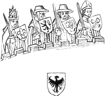
The preceding figures are seen looking over the battlements of a
house in which the Virgin, typical of the Church, is seen in bed. On a
scroll is inscribed the following sentence, from the Song of Solomon,
chap. iii. v. 2: “Surgam et circumibo civitatem; per vicos et
plateas queram quem diligit anima mea:” which is thus translated in
our Bible: “I will rise now, and go about the city in the streets,
and in the broad ways I will seek him whom my soul loveth.” In the same
design, the Virgin, with her three attendants, are seen in a street,
where two men on horseback
76
appear taking away her mantle. One of the men bears upon his shield the
figure of a black eagle, the same as that which appears underneath the
wood-cut above given. Upon a scroll is this inscription, from Solomon’s
Song, chapter V. verse 7:
“Percusserunt et vulneraverunt me, tulerunt pallium meum custodes
murorum.” In our Bible the entire verse is thus translated: “The
watchmen that went about the city found me; they smote me, they wounded
me: the keepers of the walls took away my veil from me.”
As the incidents in the life of the Virgin, described in the
Canticles, were assumed by commentators to be typical of the history of
the Church, I am inclined to think that the above cut may contain
an allusion to the disputes between Pope Eugene IV. and the Council
assembled at Basle in 1439. The passage in the first inscription,
“I will seek him whom my soul loveth,” might be very appropriately
applied to a council which professed to represent the Church, and which
had chosen for itself a new head. The second inscription would be
equally descriptive of the treatment which, in the opinion of the same
council, the Church had received from Eugene IV, whom they declared to
be deposed, because “he was a disturber of the peace and union of the
Church; a schismatic and a heretic; guilty of simony; perjured and
incorrigible.” On the shield borne by the figure of a pope wearing a
triple crown, is a fleur-de-lis; but whether or no this flower formed
part of the armorial distinctions of Amadeus Duke of Savoy, whom the
council chose for their new pope, I have not been able to
ascertain. The lion borne by the second figure, a cardinal, is too
general a cognizance to be assigned to any particular state or city. The
charge on the shield borne by the third figure, also a cardinal,
I cannot make out. The cross-keys on the bishop’s shield are the
arms of the city of Ratisbon.
The following shields are borne by angels, who appear above the
battlements of a wall in the lower compartment of folio 4, forming
the eighth subject in Mr. Ottley’s enumeration.
On these I have nothing to remark further than that the double-headed eagle is
the arms of the German empire. The other three I leave to be deciphered
by others. The second, with an indented chief, and something like a rose
in the field, will be found, I am inclined to think, to be the arms
of some town or city in Wirtemberg or Alsace. I give the three
inscriptions here, not that they are likely to throw any light on the
subject, but because the third has not hitherto been deciphered. They
are
77
all from the IVth chapter of the Song of Solomon. The first is from
verse 12: “Ortus conclusus est soror, mea sposa; ortus conclusus,
fons signatus:” in our translation of the Bible: “A garden
enclosed is my sister, my spouse; a spring shut up, a fountain
sealed.” The second is from verse 15: “Fons ortorum, puteus aquarum
vivencium quæ fluunt impetu de Lybano:” in our Bible:
“A fountain of gardens, a well of living waters, and streams
from Lebanon.” The third is from verse 16: “Surge Aquilo; veni
Auster, perfla ortum et fluant aromata illius:” in our Bible:
“Awake, O north wind; and come, thou south; blow upon my garden,
that the spices thereof may flow out.”
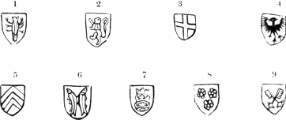
In the upper division of folio 15, which is the twenty-ninth subject
in Mr. Ottley’s enumeration, the above shields occur. They are suspended
on the walls of a tower, which is represented by an inscription as “the
armoury whereon hang a thousand bucklers, all shields of mighty men.”II.49
On the first four I shall make no remark beyond calling the attention
of those skilled in German heraldry to the remarkable charge in the
first shield, which appears something like a cray-fish. The sixth, “two
trouts hauriant and addorsed,” is one of the quarterings of the house of
Wirtemberg as lords of Mompelgard. The seventh is charged with three
crowns, the arms of the city of Cologne. The charge of the eighth I take
to be three cinquefoils, which are one of the quarterings of the family
of Aremberg. The cross-keys in the ninth are the arms of the city of
Ratisbon.
The four following shields occur in the lower division of folio 15.
They are borne by men in armour standing by the side of a bed. On a
scroll is the following inscription, from the 7th and 8th verses of the
third chapter of Solomon’s Song. “En lectulum Salomonis sexaginta
fortes ambiunt, omnes tenentes gladios:” in our Bible: “Behold his
bed, which is Solomon’s; three score valiant men are about it
. . . . . they all hold swords.”
The first three of the shields on the following page I shall leave to
be
78
assigned by others. The fourth, which is charged with a rose, was the
arms of Hagenau, a town in Alsace.
As so little is known respecting the country where, and the precise
time when, the principal block-books appeared,—of which the
History of the Virgin is one,—I think every particular, however
trifling, which may be likely to afford even a gleam of light, deserving
of notice. It is for this reason that I have given the different shields
contained in this and the preceding pages; not in the belief that I have
made any important discovery, or established any considerable
facts; but with the desire of directing to this subject the attention of
others, whose further inquiries and comparisons may perhaps establish
such a perfect identity between the arms of a particular district, and
those contained in the volume, as may determine the probable locality of
the place where it was executed. The coincidences which I have noticed
were not sought for. Happening to be turning over Sebastian Munster’s
Cosmography when a copy of the History of the Virgin was before me,
I observed that the two fish in the arms of the Counts of
Wirtemberg,II.50 and those in the 15th folio of the History, were
the same. The other instances of correspondence were also discovered
without search, from having occasionally, in tracing the progress of
wood engraving, to refer to Merian’s Topographia.
Considering the thickness of the paper on which the block-books are
printed,—if I may apply this term to them,—and the
thin-bodied ink which has been used. I am at a loss to conceive how
the early wood-engravers have contrived to take off their impressions so
correctly; for in all the block-books which I have seen, where friction
has evidently been the means employed to obtain the impression,
I have only noticed two subjects in which the lines appeared double
in consequence of the shifting of the paper. From the want of body in
the ink, which appears in the Apocalypse to have been little more than
water-colour, it is not likely the paper could be used in a damp state,
otherwise the ink would run or spread; and, even if this difficulty did
not exist, the paper in a damp state could not have borne the excessive
rubbing which it appears to have received in order to obtain the
impression.II.51 Even with
79
such printer’s ink as is used in the present day,—which being
tenacious, renders the paper in taking an impression by means of
friction much less liable to slip or shift,—it would be difficult
to obtain clear impressions on thick paper from blocks the size of those
which form each page of the Apocalypse, or the History of the
Virgin.
Mr. Ottley, however, states that no less than two pages of the
History of the Virgin have been engraved on the same block. His
observations on this subject are as follows: “Upon first viewing this
work, I was of opinion that each of the designs contained in it was
engraved upon a separate block of wood: but, upon a more careful
examination, I have discovered that the contents of each two
pages—that is, four subjects—were engraved on the same
block. The number of wooden blocks, therefore, from which the whole was
printed, was only eight. This is proved in the first two pages of the
copy before me;II.52 where, near the bottom of the two upper subjects,
the block appears to have been broken in two, in a horizontal
direction,—after it was engraved,—and joined together again;
although not with such exactness but that the traces of the operation
clearly show themselves. The traces of a similar accident are still more
apparent in the last block, containing the Nos. 29, 30, 31, 32. The
whole work was, therefore, printed on eight sheets of paper from the
same number of engraved blocks, the first four subjects being printed
from the same block upon the same sheet,—and so on with the rest;
and, indeed, in Lord Spencer’s copy, each sheet, being mounted upon a
guard, distinctly shows itself entire.”II.53
The appearance of a corresponding fracture in two adjacent pages
would certainly render it likely that both were engraved on the same
block; though I should like to have an opportunity of satisfying myself
by inspection whether such appearances are really occasioned by a
fracture or not; for it is rather singular that such appearances should
be observable on the first and the last blocks only.
I always reluctantly speculate, except on something like sufficient
grounds; but as I have not seen a copy of the edition to which Mr.
Ottley refers, I beg to ask if the traces of supposed fracture in
the last two pages do not correspond with those in the first two? and if
so, would it not be equally reasonable to infer that eight subjects
instead of four were engraved on the same block? A block containing
only two pages would be about seventeen inches by ten, allowing for
inner margins; and to obtain clear impressions from it by means of
friction, on dry thick paper, and with mere water-colour
80
ink, would be a task of such difficulty that I cannot conceive how it
could be performed. No traces of points by which the paper might be kept
steady on the block are perceptible; and I unhesitatingly assert that no
wood-engraver of the present day could by means of friction take clear
impressions from such a block on equally thick paper, and using mere
distemper instead of printer’s ink. As the impressions in the History of
the Virgin have unquestionably been taken by means of friction, it is
evident to me that if the blocks were of the size that Mr. Ottley
supposes, the old wood-engravers, who did not use a press, must have
resorted to some contrivance to keep the paper steady, with which we are
now unacquainted.
Heineken describes an edition of the Apocalypse consisting of
forty-eight leaves, with cuts on one side only, which, when bound, form
a volume of three “gatherings,” or collections, each containing
sixteen leaves. Each of these gatherings is formed by eight folio sheets
folded in the middle, and placed one within the other, so that the cuts
are worked off in the following manner: On the outer sheet of the
gathering, forming the first and the sixteenth leaf, the first and the
sixteenth cuts are impressed, so that when the sheet is folded they face
each other, and the first and the last pages are left blank. In a
similar manner the 2nd and 15th; the 3d and 14th; the 4th and 13th; the
5th and 12th; the 6th and 11th; the 7th and 10th, and the 8th and 9th,
are, each pair respectively, impressed on the same side of the same
sheet. These sheets when folded for binding are then placed in such a
manner that the first is opposite the second; the third opposite the
fourth, and so on throughout the whole sixteen. Being arranged in this
manner, two cuts and two blank pages occur alternately. The reason for
this mode of arrangement was, that the blank pages might be pasted
together, and the cuts thus appear as if one were impressed on the back
of another. A familiar illustration of this mode of folding,
adopted by the early wood-engravers before they were accustomed to
impress their cuts on both sides of a leaf, is afforded by forming a
sheet of paper into a little book of sixteen leaves, and numbering the
second and third pages 1 and 2, leaving two pages blank; then numbering
the fifth and sixth 3 and 4, and so to No. 16, which will stand
opposite to No. 15, and have its back, forming the outer page of
the gathering, unimpressed.
Of all the block-books, that which is now commonly called “Biblia Pauperum,”—the Bible of the
Poor,—is most frequently referred to as a specimen of that kind of
printing from wood-blocks which preceded typography, or printing by
means of moveable characters or types. This title, however, has given
rise to an error which certain learned bibliographers have without the
least examination adopted, and have afterwards given to the public
considerably enlarged, at least, if not
81
corrected.II.54 It has been gravely stated that this book, whose
text is in abbreviated Latin, was printed for the use of the poor
in an age when even the rich could scarcely read their own
language. Manuscripts of the Bible were certainly at that period both
scarce and costly, and not many individuals even of high rank were
possessed of a copy; but to conclude that the first editions of the
so-called “Biblia Pauperum” were engraved and printed for the use of the
poor, appears to be about as legitimate an inference as to conclude
that, in the present day, the reprints of the Roxburghe club were
published for the benefit of the poor who could not afford to purchase
the original editions. That a merchant or a wealthy trader might
occasionally become the purchaser of “Biblia Pauperum,” I am
willing to admit,—though I am of opinion that the book was never
expressly intended for the laity;—but that it should be printed
for the use of the poor, I cannot bring myself to believe. If the
poor of Germany in the fifteenth century had the means of purchasing
such books, and were capable of reading them, I can only say that
they must have had more money to spare than their descendants, and have
been more learned than most of the rich people throughout Europe in the
present day. If the accounts which we have of the state of knowledge
about 1450 be correct, the monk or friar who could read and expound such
a work must have been esteemed as a person of considerable literary
attainments.
The name “Biblia Pauperum” was unknown to Schelhorn and Schœpflin,
and was not adopted by Meerman. Schelhorn, who was the first that
published a fac-simile of one of the pages engraved on wood, gives it no
distinctive name; but merely describes it as “a book which
contained in text and figures certain histories and prophecies of the
Old Testament, which, in the author’s judgment, were figurative of
Christ, and of the works performed by him for the salvation of
mankind.”II.55 Schœpflin calls it, “Vaticinia Veteris Testamenti
de Christo;”II.56—“Prophecies of the Old Testament concerning
Christ;” but neither this title, nor the description of Schelhorn, is
sufficiently comprehensive; for the book contains not only prophecies
and typical figures from the Old Testament, but also passages and
subjects selected from the New.
82
The title which Meerman gives to it is more accurately descriptive of
the contents: “Figuræ typicæ Veteris atque antitypicæ Novi Testamenti,
seu Historia Jesu Christi in figuris;” that is, “Typical figures of the
Old Testament and antitypical of the New, or the History of Jesus Christ
pictorially represented.”II.57
Heineken appears to have been the first who gave to this book the
name “Biblia Pauperum,” as it was in his opinion the most appropriate;
“the figures being executed for the purpose of giving a knowledge of the
Bible to those who could not afford to purchase a manuscript copy of the
Scriptures.”II.58 This reason for the name is not, however,
a good one: for, according to his own statement, the only copy
which he ever saw with the title or inscription “Biblia Pauperum,” was a
manuscript on vellum of the fourteenth century, in which the figures
were drawn and coloured by hand.II.59 Meerman, however, though without
adopting the title, had previously noticed the same manuscript, which in
his opinion was as old as the twelfth or thirteenth century. As the word
“Pauperum” formed part of the title of the book long before presumed
cheap copies were printed from wood-blocks for the use of the poor, it
could not be peculiarly appropriate as the title of an illumined
manuscript on vellum, which the poor could as little afford to purchase
as they could a manuscript copy of the Bible. In whatever manner the
term “poor” became connected with the book, it is clear that the name
“Biblia Pauperum” was not given to it in consequence of its being
printed at a cheap rate for circulation among poor people. It is not
indeed likely that its ancient title ever was “Biblia Pauperum;” while,
on the contrary, there seems every reason to believe that Heineken had
copied an abridged title and thus given currency to an error.
Heineken says that he observed the inscription, “Incipit Biblia
Pauperum,” in a manuscript in the library at Wolfenbuttel, written on
vellum in a Gothic character, which appeared to be of the fourteenth
century. The figures, which were badly designed, were coloured in
distemper, and the explanatory text was in Latin rhyme. It is surprising
that neither Heineken nor any other bibliographer should have suspected
that a word was wanting in the above supposed title, more especially as
the word wanting might have been so readily suggested by another work so
much resembling the pretended “Biblia Pauperum” that the one has
83
frequently been confounded with the other.II.60 In the proemium of
this other work, which is no other than the “Speculum Salvationis,” the
writer expressly states that he has compiled it “propter pauperes
predicatores,”—for poor preachers.
Predictu’ p’hemiu’ hujus libri de conte’tis compilavi,
Et p’pter paup’es p’dicatores hoc apponere curavi;
Qui si forte nequieru’t totum librum sibi co’p’are,
Possu’t ex ipso p’hemio, si sciu’t p’dicare.
This preface of contents, stating what this book’s about,
For the sake of all poor preachers I have fairly written
out;
If the purchase of the book entire should be above their reach,
This preface yet may serve them, if they know but how to preach.
That the other book might be called “Biblia Pauperum
Predicatorum,” in consequence of its general use by mendicant
preachers, I can readily believe; and no doubt the omission of the
word “predicatorum” in the inscription copied by Heineken has given rise
to the popular error, that the pretended “Biblia Pauperum” was a kind of
cheap pictorial Bible, especially intended for the use of the poor. It
is, in fact, a series of “skeleton sermons” ornamented with
wood-cuts to warm the preacher’s imagination, and stored with texts to
assist his memory. In speaking of this book in future, I shall
always refer to it as the “Biblia Pauperum Predicatorum,”—“the
Poor Preachers’ Bible;” for the continuance of its former title only
tends, in my opinion, to disseminate an error.
Nyerup, who in 1784 published an “Account of such books as were read
in schools in Denmark prior to the Reformation,”II.61 objected to the
title “Biblia Pauperum,” as he had seen portions of a manuscript copy in
which the drawings were richly coloured. The title which he preferred
was Biblia Typico-Harmonica. In this
objection, however, Camus does not concur: “It is not from the
embellishments of a single copy,” he observes, “that we ought to judge
of the current price of a book; and, besides, we must not forget to take
into consideration the other motives which might suggest the title,
‘Bible of the Poor,’ for we have proofs that other abridgments of
greater extent were called ‘Poor men’s books.’ Such is the ‘Biblia
Pauperum’ of St. Bonaventure, consisting of extracts for the use of
preachers, and the ‘Dictionarius Pauperum.’ Of the last the title
is explained in the book itself: ‘Incipit summula omnibus verbi
divini seminatoribus pernecessaria.’” It is surprising that Camus
did
84
not perceive that the very titles which he cites militate against the
opinion of the “Biblia” being intended for the use of poor men.
St. Bonaventure’s work, and the Dictionary, which he refers to as
instances of “Poor men’s books,” both bear on the very face of them a
refutation of his opinion, for in the works themselves it is distinctly
stated that they were compiled, not “ad usum pauperum hominum;”
but “ad usum pauperum predicatorum, et verbi divini
seminatorum:” not for the use of “poor men,” but for “poor
preachers and teachers of the divine word.” Camus has
unwittingly supplied a club to batter his own argument to pieces.
Of the “Biblia Pauperum Predicatorum,” there are, according to
Heineken, five different editions with the text in Latin. Four of them
contain each forty leaves, printed on one side only from wood-blocks by
means of friction, and which differ from each other in so trifling a
degree, that it is not unlikely that three of them are from the same set
of blocks. The other edition,—the fifth described by
Heineken—contains fifty leaves, printed in a similar manner, but
apparently with the figures designed by a different artist. Besides the
above, there are two different editions, also from wood-blocks, with the
text in German: one with the date 1470; and the other, 1471 or 1475, for
the last numeral appears as like a 1 as a 5. There are also two
editions, one Latin, and the other German, with the text printed from
moveable types by Albert Pfister, at Bamberg, about 1462.
Without pretending to decide on the priority of the first five
editions,—as I have not been able to perceive any sufficient marks
from which the order in which they were published might be
ascertained,—I shall here give a brief account of a copy of that
edition which Heineken ranks as the third. It is in the King’s Library
at the British Museum, and was formerly in the collection of Monsieur
Gaignat, at whose sale it was bought for George III.
It is a small folio of forty leaves, impressed on one side only, in
order that the blank pages might be pasted together, so that two of the
printed sides would thus form only one leaf. The order of the first
twenty pages is indicated by the letters of the alphabet, from a to v,
and of the second twenty by the same letters, having as a distinguishing
mark a point both before and after them, thus: . a . In that which Heineken considers the first
edition, the letters n, o, r, s,
of the second alphabet, making pages 33, 34, 37, and 38, want those two
distinguishing points, which, according to him, are to be found in each
of the other three Latin editions of forty pages each. Mr. Ottley has,
however, observed that Earl Spencer’s copy wants the points,—on
each side of the letters n, o, r,
s, of the second
alphabet,—thus agreeing with that which Heineken calls the first
edition, while in all other respects it answers the description which
that writer
85
gives of the presumed second. Mr. Ottley says, that Heineken errs in
asserting that the want of those points on each side of the said letters
is a distinction exclusively belonging to the first edition, since the
edition called by him the second is likewise without them.II.62 In
fact, the variations noticed by Heineken are not only insufficient to
enable a person to judge of the priority of the editions, but they are
such as might with the greatest ease be introduced into a block after a
certain number of copies had been taken off. Those which he considers as
distinguishing marks might easily be broken away by the burnisher or
rubber, and replaced by the insertion of other pieces, differing in a
slight degree. From the trifling variations noticed by HeinekenII.63 in
the first three editions, it is not unlikely that they were all taken
from the same blocks. Each of the triangular ornaments in which he has
observed a difference, might easily be re-inserted in the event of its
being injured in taking an impression. The tiara of Moses, in page 35,
letter . p . would be
peculiarly liable to accident in taking an impression by friction, and I
am disposed to think that a part of it has been broken off, and that in
repairing it a trifling alteration has been made in the ornament on its
top. Heineken, noticing the alteration, has considered it as a criterion
of two different editions, while in all probability it only marks a
trifling variety in copies taken from the same blocks.
On each page are four portraits,—two at the top, and two at the
bottom,—intended for the prophets, and other holy men, whose
writings are cited in the text. The middle part of the page between each
pair of portraits consists of three compartments, each of which is
occupied with a subject from the Old or the New Testament. In the 14th
page, however, letter o, two of the
compartments—that in the centre, and the adjoining one to the
right—are both occupied by the same subject, Christ’s entry into
Jerusalem. The greatest portion of the explanatory text is at the top on
each side of the uppermost portraits; and on each side of those below
there is a Leonine, or rhyming Latin, verse. A similar verse
underneath those portraits forms the concluding line of each page. Texts
of Scripture, and moral or explanatory sentences, having reference to
the subjects in the three compartments, also appear on scrolls. The
following cut, which is a reduced copy of the 14th page, letter k, will afford a better idea of the
arrangement of the subjects, and of the explanatory texts, than any
lengthened description.
The whole of this subject—both text and figures—appears
intended to inculcate the necessity of restraining appetite. The
inscription to the right, at the top, contains a reference to the 3rd
chapter of Genesis, wherein there is to be found an account of the
temptation and fall of
86
Adam and Eve, who were induced by the Serpent to taste the forbidden
fruit. This temptation of our first parents through the medium of the
palate, was, as may be gathered from the same inscription, figurative of
the temptation of Christ after his fasting forty days in the wilderness,
when the Devil came to him and said, “If thou be the Son of God, command
that these stones be made bread.”
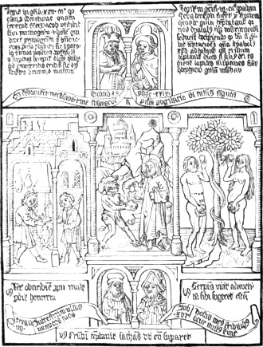
In the inscription to the left, reference is made to the 25th chapter
of Genesis, as containing an account of Esau, who, in consequence of his
unrestrained appetite, sold his birth-right for a mess of pottage.
In the compartments in the middle of the page, are three
illustrations of the preceding text. In the centre is seen the pattern
to imitate,—Christ resisting the temptation of the Devil; and on
each side the examples to deter,—Adam and Eve with the forbidden
fruit; and hungry Esau receiving the mess of pottage from Jacob.
87
Underneath the two half-length figures at the top, is inscribed
“David 34,” and “Ysaie xxix.”II.64 The numerals are probably
intended to indicate the chapters in the Psalms, and in the Prophecies
of Isaiah, where the inscriptions on the adjacent scrolls are to be
found. On similar scrolls, towards the bottom of the page, are
references to the 7th chapter of the 2nd book of Kings, and to the 16th
chapter of Job. The two half-length figures are most likely intended for
the writers of those sacred books. The likenesses of the prophets and
holy persons, thus introduced at the top and bottom of each page, are,
as Schelhorn has observed,II.65 purely imaginary; for the same
character is seldom seen twice with the same face. As most of the
supposed figurative descriptions of Christ and his ministry are to be
found in the Psalms, and in the Prophecies of Isaiah, the portraits of
David and the last-named prophet are those which most frequently occur;
and the designer seems to have been determined that neither the king nor
the prophet should ever appear twice with the same likeness.
The rhyming verses are as follows. That to the right, underneath the
subject of Adam and Eve:
Serpens vicit, Adam vetitam sibi sugerat escam.
The other, on the opposite side, underneath Jacob and Esau:
Lentis ob ardorem proprium male perdit honorem.
And the third, at the bottom of the page, underneath the two
portraits:
Christum temptavit Sathanas ut eum superaret.
The following cuts are fac-similes, the size of the originals, of
each of the compartments of the page referred to, and of which a reduced
copy has been already given.
The first contains the representation of David and Isaiah, and the
characters which follow the name of the former I consider to be intended
for 34. They are the only instances in the volume of the use of Arabic,
or rather Spanish numerals. The letter k, at the foot, is the “signature,” as a printer
would term it, indicating the order of the page. On each side of it are
portions of scrolls containing inscriptions, of which some of the
letters are seen.
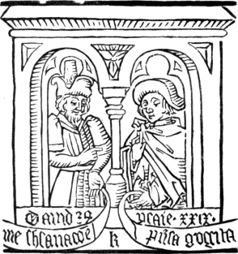
The next cut represents Satan tempting Christ by offering him stones
to be converted into bread.
88
In the distance are seen the high mountain, to the top of which
Christ was taken up by the Devil, and the temple from whose pinnacle
Christ was tempted to cast himself down. The figure of Christ in this
compartment is not devoid of sober dignity; nor is Satan deficient in
diabolical ugliness; but, though clawed and horned proper, he wants the
usual appendage of a tail. The deficiency is, however, in some degree
compensated by giving to his hip the likeness of a fiendish face. In two
or three other old wood engravings I have noticed a repulsive face
indicated in a similar manner on the hip of the Devil. A person
well acquainted with the superstitions of the fourteenth and fifteenth
centuries may perhaps be able to give a reason for this. It may be
intended to show that Satan, who is ever going about seeking whom he may
devour, can see both before and behind.
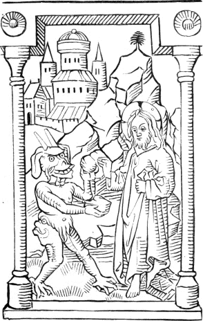
The cut on the following page (90), which forms the compartment to
the right, represents Adam and Eve, each with an apple: and the state in
which Eve appears to be, is in accordance with an opinion maintained by
several of the schoolmen of the twelfth and thirteenth centuries. The
tree of knowledge is without fruit, and the serpent, with a human face,
is seen twined round its stem. The form of the tree and the shape of the
leaves are almost precisely the same as those of the olive-trees in the
Apocalypse, uprooted by Antichrist. The character of the designs,
however, in the two books is almost as different as the manner of the
engraving. In the Apocalypse there is no attempt at shading, while in
89
the book under consideration it is introduced in every page, though
merely by courses of single lines, as may be perceived in the drapery of
Christ in the preceding cut, and in the trunk of the tree and in the
serpent in the cut subjoined. In this cut the figure of Adam cannot be
considered as a specimen of manly beauty; his face is that of a man who
is past his prime, and his attitude is very like that of one of the
splay-footed boors of Teniers. In point of personal beauty Eve appears
to be a partner worthy of her husband; and though from her action she
seems conscious that she is naked, yet her expression and figure are
extremely unlike the graceful timidity and beautiful proportions of the
Medicean Venus. The face of the serpent displays neither malignity nor
fiendish cunning; but, on the contrary, is marked with an expression not
unlike that of a Bavarian broom-girl. This manner of representing the
temptation of our first parents appears to have been conventional
90
among the early German Formschneiders; for I have seen several old
wood-cuts of this subject, in which the figures were almost precisely
the same. Notwithstanding the bad drawing and the coarse engraving of
the following cut, many of the same subject, executed in Germany between
1470 and 1510, are yet worse.
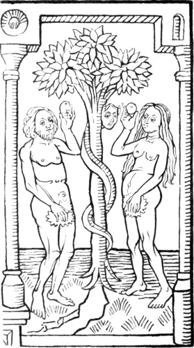
In the opposite cut, which forms the compartment to the left, Esau,
who is distinguished by his bow and quiver, is seen receiving a bowl of
pottage from his brother Jacob. At the far side of the apartment is seen
a “kail-pot,” suspended from a “crook,” with something like a ham and a
gammon of bacon hanging against the wall. This subject is treated in a
style which is thoroughly Dutch. Isaac’s family appear to
91
have been lodged in a tolerably comfortable house, with a stock of
provisions near the chimney nook; and his two sons are very like some of
the figures in the pictures of Teniers, more especially about the
legs.
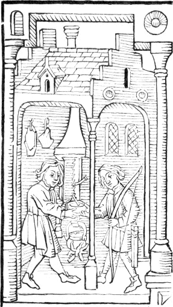
The following cut, a copy of that which is the lowest in the page,
represents the two prophets or inspired penmen, to whom reference is
made on the two scrolls whose ends may be perceived towards the lower
corners of each arch. The words underneath the figures are a portion of
the last rhyming verse quoted at page 87. It is from a difference in the
triangular ornament, above the pillar separating the two figures, though
not in this identical page, that Heineken chiefly decides on three of
the editions of this book; though nothing could be more easy than to
92
introduce another ornament of a similar kind, in the event of the
original either being damaged in printing or intentionally effaced. In
some of the earliest wood-blocks which remain undestroyed by the rough
handling of time there are evident traces of several letters having been
broken away, and of the injury being afterwards remedied by the
introduction of a new piece of wood, on which the letters wanting were
re-engraved.
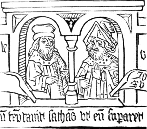
The ink with which the cuts in the “Poor Preachers’ Bible” have been
printed, is evidently a kind of distemper of the colour of bistre,
lighter than in the History of the Virgin, and darker than in the
Apocalypse. In many of the cuts certain portions of the lines appear
surcharged with ink,—sometimes giving to the whole page rather a
blotched appearance,—while other portions seem scarcely to have
received any.II.66 This appearance is undoubtedly in consequence of
the light-bodied ink having, from its want of tenacity, accumulated on
the block where the line was thickest, or where two lines met, leaving
the thinner portions adjacent with scarce any colouring at all. The
block must, in my opinion, have been charged with such ink by means of
something like a brush, and not by means of a ball. In some parts of the
cuts—more especially where there is the greatest portion of
text—small
93
white spaces may be perceived, as if a graver had been run through the
lines. On first noticing this appearance, I was inclined to think
that it was owing to the spreading of the hairs of the brush in inking,
whereby certain parts might have been left untouched. The same kind of
break in the lines may be observed, however, in some of the impressions
of the old wood-cuts published by Becker and Derschau,II.67 and which
are worked off by means of a press, and with common printer’s ink. In
these it is certainly owing to minute furrows in the grain of the wood;
and I am now of opinion that the same cause has occasioned a similar
appearance in the cuts of the “Biblia Pauperum Predicatorum.” Mr.
Ottley, speaking of the impressions in Earl Spencer’s copy, makes the
following remarks: “In many instances they have a sort of horizontally
striped and confused appearance, which leads me to suppose that they
were taken from engravings executed on some kind of wood of a coarse
grain.”II.68 This correspondence between Earl Spencer’s copy
and that in the King’s Library at the British Museum tends to confirm my
opinion that there are not so many editions of the book as
Heineken,—from certain accidental variations,—has been
induced to suppose.
The manner in which the cuts are engraved, and the attempts at
something like effect in the shading and composition, induce me to think
that this book is not so old as either the Apocalypse or the History of the
Virgin. That it appeared before 1428, as has been inferred from the date
which the Rev. Mr. Horne fancied that he had seen on the ancient
binding, I cannot induce myself to believe. It is more likely to
have been executed at some time between 1440 and 1460; and I am inclined
to think that it is the production of a Dutch or Flemish, rather than a
German artist.
A work, from which the engraved “Biblia Pauperum Predicatorum” is
little more than an abstract, appears to have been known in France and
Germany long before block-printing was introduced. Of such a work there
were two manuscript copies in the National Library at Paris; the one
complete, and the other—which, with a few exceptions, had been
copied from the first—imperfect. The work consisted of a brief
summary of the Bible, arranged in the following manner. One or two
phrases in Latin and in French formed, as it were, the text; and each
text was followed by a moral reflection, also in Latin and in French.
Each
94
article, which thus consisted of two parts, was illustrated by two
drawings, one of which related to the historical fact, and the other to
the moral deduced from it. The perfect copy consisted of four hundred
and twenty-two pages, on each of which there were eight drawings, so
that the number contained in the whole volume was upwards of five
thousand. In some of the single drawings, which were about two and
one-third inches wide, by three and one-third inches high, Camus counted
not less than thirty heads.II.69
In a copy of the “Biblia Pauperum Predicatorum” from wood-blocks,
Heineken observed written: “S. Ansgarius est autor hujus libri,”—St.
Ansgarius is the author of this book. St. Ansgarius, who was a native of
France, and a monk of the celebrated Abbey of Corbey, was sent into
Lower Saxony, and other places in the north, for the purpose of
reclaiming the people from paganism. He was appointed the first bishop
of Hamburg in 831, and in 844 Bishop of Bremen, where he died in 864.II.70 From a passage cited by Heineken from Ornhielm’s
Ecclesiastical History of Sweden and Gothland, it appears that Ansgarius
was reputed to have compiled a similar book;II.71 and Heineken
observes that it might be from this passage that the “Biblia Pauperum
Predicatorum” was ascribed to the Bishop of Hamburg.
In the cloisters of the cathedral at Bremen, Heineken saw two
bas-reliefs sculptured on stone, of which the figures, of a moderate
size, were precisely the same as those in two of the pages—the
first and eighth—of the German “Biblia Pauperum Predicatorum.” The
inscriptions, which were in Latin, were the same as in block-book. He
thinks it very probable that the other arches of the cloisters were
formerly ornamented in the same manner with the remainder of the
subjects, but that the sculptures had been destroyed in the disturbances
which had occurred in Bremen. Though he by no means pretends that the
cuts were engraved in the time of Ansgarius, he thinks it not impossible
that the sculptures might be executed at that period according to the
bishop’s directions. This last passage is one of the most silly that
occurs in Heineken’s book.II.72 It is just about as likely that
the cuts in the “Biblia Pauperum Predicatorum” were engraved in the time
of Ansgarius, as that the bas-reliefs in the cloisters of the cathedral
of Bremen should have been sculptured under his direction.
95
The book usually called the “Speculum Humanæ Salvationis,”II.73—the Mirror of Human Salvation,—which
is ascribed by Hadrian Junius to Lawrence Coster, has been more
frequently the subject of discussion among bibliographers and writers
who have treated of the origin of printing, than any other work.
A great proportion, however, of what has been written on the
subject consists of groundless speculation; and the facts elicited,
compared with the conjectures propounded, are as “two grains of wheat to
a bushel of chaff.” It would be a waste of time to recite at length the
various opinions that have been entertained with respect to the date of
this book, the manner in which the text was printed, and the printer’s
name. The statements and the theories put forth by Junius and Meerman in
Coster’s favour, so far as the execution of the Speculum is concerned,
are decidedly contradicted by the book itself. Without, therefore,
recapitulating arguments which are contradicted by established facts,
I shall endeavour to give a correct account of the work, leaving
those who choose to compare it, and reconcile it if they can, with the
following assertions made by Coster’s advocates: 1. that the Speculum
was first printed by him in Dutch with wooden types; 2. that while
engraving a Latin edition on blocks of wood he discovered the art of
printing with moveable letters; 3. that the Latin edition, in which the
text is partly from moveable types and partly from wood-blocks, was
printed by Coster’s heirs and successors, their moveable types having
been stolen by John Gutemberg before the whole of the text was set
up.
The Speculum which has been the subject of so much discussion is of a
small folio size, and without date or printer’s name. There are four
editions of it known to bibliographers, all containing the same cuts;
two of those editions are in Latin, and two in Dutch. In the Latin
editions the work consists of sixty-three leaves, five of which are
occupied by an introduction or prologue, and on the other fifty-eight
are printed the cuts and explanatory text. The Dutch editions, though
containing the same number of cuts as the Latin, consist of only
sixty-two leaves each, as the preface occupies only four. In all those
editions the leaves are printed on one side only. Besides the four
editions above noticed, which have been ascribed to Coster and have
excited so much controversy, there are two or three others in which the
cuts are more coarsely engraved, and probably executed, at a later
period, in Germany. There is also a quarto edition of the Speculum,
printed in 1483, at Culemburg, by John Veldener, and ornamented with the
identical cuts of the folio editions ascribed to Coster and his
heirs.
The four controverted editions of the Speculum may be considered as
holding a middle place between block-books,—which are wholly
executed,
96
both text and cuts, by the wood-engraver,—and books printed with
moveable types: for in three of the editions the cuts are printed by
means of friction with a rubber or burnisher, in the manner of the
History of the Virgin, and other block-books, while the text, set in
moveable type, has been worked off by means of a press; and in a fourth
edition, in which the cuts are taken in the same manner as in the
former, twenty pages of the text are printed from wood-blocks by means
of friction, while the remainder are printed in the same manner as the
whole of the text in the three other editions; that is, from moveable
metal types, and by means of a press.
There are fifty-eight cuts in the Speculum, each of which is divided
into two compartments by a slender column in the middle. In all the
editions the cuts are placed as head-pieces at the top of each page,
having underneath them, in two columns, the explanatory text. Under each
compartment the title of the subject, in Latin, is engraved on the
block.
The following reduced copy of the first cut will give an idea of
their form, as every subject has pillars at the side, and is surmounted
by an arch in the same style.
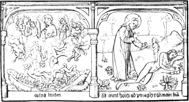
The style of engraving in those cuts is similar to those of the Poor
Preachers’ Bible. The former are, however, on the whole executed with
greater delicacy, and contain more work. The shadows and folds of the
drapery in the first forty-eight cuts are indicated by short parallel
lines, which are mostly horizontal. In the forty-ninth and subsequent
cuts, as has been noticed by Mr. Ottley, a change in the mode of
indicating the shades and the folds in the draperies is perceptible; for
the short parallel lines, instead of being horizontal as in the former,
are mostly slanting. Heineken observes, that to the forty-eighth cut
inclusive, the chapters in the printed work are conformable with the old
Latin manuscripts; and
97
as a perceptible change in the execution commences with the forty-ninth,
it is not unlikely that the cuts were engraved by two different persons.
The two following cuts are fac-similes of the compartments of the first,
of which a reduced copy has been previously given.
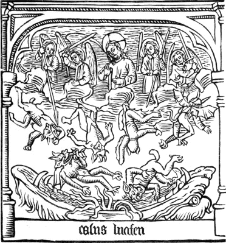
In the above cut, its title, “Casus Luciferi,”—the Fall of
Lucifer,—is engraved at the bottom; and the subject represented is
Satan and the rebellious angels driven out of heaven, as typical of
man’s disobedience and fall. The following are the first two lines of
the column of text underneath the cut in the Latin editions:
Inchoatur speculum humanae salvacionis
In quo patet casus hominis et modus
repactionis.
Which may be translated into English thus:
In the Mirror of Salvation here is represented plain
The fall of man, and by what means he made his peace again.
The following is the right-hand compartment of the same cut. The
98
title of this subject, as in all the others, is engraved at the bottom;
the contracted words when written in full are, “Deus creavit hominem ad
ymaginem et similitudinem suam,”—God created man after his own
image and likeness.
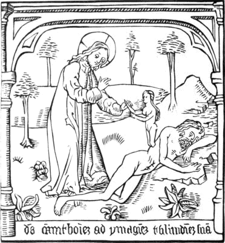
The first two lines of the text in the column
underneath this cut are,
Mulier autem in paradiso est formata
De costis viri dormienti est parata.
That is, in English rhyme of similar measure,
The woman was in Paradise for man an help meet made,
From Adam’s rib created as he asleep was laid.
The cuts in all the editions are printed in light brown or sepia
colour which has been mixed with water, and readily yields to moisture.
The impressions have evidently been taken by means of friction, as the
back of the paper immediately behind is smooth and shining from the
action of the rubber or burnisher, while on the lower part of the page
at the back
99
of the text, which has been printed with moveable types, there is no
such appearance. In the second Latin edition, in which the explanatory
text to twenty of the cutsII.74 has been printed from engraved
wood-blocks by means of friction, the reverse of those twenty pages
presents the same smooth appearance as the reverse of the cuts. In those
twenty pages of text from engraved wood-blocks the ink is
lighter-coloured than in the remainder of the book which is printed from
moveable types, though much darker than that of the cuts. It is,
therefore, evident that the two impressions,—the one from the
block containing the cut, and the other from the block containing the
text,—have been taken separately. In the pages printed from
moveable types, the ink, which has evidently been compounded with oil,
is full-bodied, and of a dark brown colour, approaching nearly to black.
In the other three editions, one Latin and two Dutch, in which the text
is entirely from moveable types, the ink is also full-bodied and nearly
jet black, forming a strong contrast with the faint colour of the
cuts.
The plan of the Speculum is almost the same as that of the Poor
Preachers’ Bible, and is equally as well entitled as the latter to be
called “A History typical and anti-typical of the Old and New
Testament.” Several of the subjects in the two books are treated nearly
in the same manner, though in no single instance, so far as my
observation goes, is the design precisely the same in both. In several
of the cuts of the Speculum, in the same manner as in the Poor
Preachers’ Bible, one compartment contains the supposed type or
prefiguration, and the other its fulfilment; for instance: at
No. 17 the appearance of the Lord to Moses in the burning bush is
typical of the Annunciation; at No. 23 the brazen bath in the
temple of Solomon is typical of baptism; at No. 31 the manna
provided for the children of Israel in the Desert is typical of the
Lord’s Supper; at No. 45 the Crucifixion is represented in one
compartment, and in the other is Tubal-Cain, the inventor of iron-work,
and consequently of the nails with which Christ was fixed to the cross;
and at No. 53 the descent of Christ to Hades, and the liberation of
the patriarchs and fathers, is typified by the escape of the children of
Israel from Egypt.
Though most of the subjects are from the Bible or the Apocrypha, yet
there are two or three which the designer has borrowed from profane
history: such as Semiramis contemplating the hanging gardens of Babylon;
the Sibyl and Augustus; and Codrus king of Athens incurring death in
order to secure victory to his people.
The Speculum Salvationis, as printed in the editions previously
noticed, is only a portion of a larger work with the same title, and
100
ornamented with similar designs, which had been known long before in
manuscript. Heineken says, at page 478 of his Idée Générale, that the
oldest copy he ever saw was in the Imperial Library at Vienna; and, at
page 468, he observes that it appeared to belong to the twelfth
century.
The manuscript work, when complete, consisted of forty-five chapters
in rhyming Latin, to which was prefixed an introduction containing a
list of them. Each of the first forty-two chapters contained four
subjects, the first of which was the principal, and the other three
illustrative of it. To each of these chapters were two drawings, every
one of which, as in the printed copies of the work, consisted of two
compartments. The last three chapters contained each eight subjects, and
each subject was ornamented with a design.II.75 The whole number
of separate illustrations in the work was thus one hundred and
ninety-two. The printed folio editions contain only fifty-eight cuts, or
one hundred and sixteen separate illustrations.
Though the Speculum from the time of the publication of Junius’s
workII.76 had been confidently claimed for Coster, yet no
writer, either for or against him, appears to have particularly directed
his attention to the manner in which the work was executed before
Fournier, who in 1758, in a dissertation on the Origin and Progress of
the Art of Wood-engraving,II.77 first published some particulars
respecting the work in question, which induced Meerman and Heineken to
speculate on the priority of the different editions. Mr. Ottley,
however, has proved, in a manner which carries with it the certainty of
mathematical demonstration, that the conjectures of both the latter
writers respecting the priority of the editions of the Speculum are
absolutely erroneous. To elicit the truth does not, with respect to this
work, seem to have been the object of those two writers. Both had
espoused theories on its origin without much inquiry with respect to
facts, and each presumed that edition to be the first which seemed most
likely to support his own speculations.
Heineken, who assumed that the work was of German origin, insisted
that the first edition was that in which the text is printed
partly from moveable types and partly from letters engraved on
wood-blocks, and that the Dutch editions were executed subsequently in
the Low Countries. The Latin edition with the text entirely printed from
moveable types he is pleased to denominate the second, and to assert,
contrary to the evidence which the work itself affords, that the type
resembles that of Faust and
101
Scheffer, and that the cuts in this second Latin edition, as he
erroneously calls it, are coarser and not so sharp as those in the Latin
edition which he supposes to be the first.
Fournier’s discoveries with respect to the execution of the Speculum
seem to have produced a complete change as to its origin in the opinions
of Meerman; who, in 1757, the year before Fournier’s dissertation was
printed, had expressed his belief, in a letter to his friend Wagenaar,
that what was alleged in favour of Coster being the inventor of printing
was mere gratuitous assertion; that the text of the Speculum was
probably printed after the cuts, and subsequent to 1470; that there was
not a single document, nor an iota of evidence, to show that Coster ever
used moveable types; and lastly, that the Latin was prior to the Dutch
edition of the Speculum, as was apparent from the Latin names engraved
at the foot of the cuts, which certainly would have been in Dutch had
the cuts been originally destined for a Dutch edition.II.78 In the
teeth of his own previous opinions, having apparently gained a new light
from Fournier’s discoveries, Meerman, in his Origines Typographicæ,
printed in 1765, endeavours to prove that the Dutch edition was the
first, and that it was printed with moveable wooden types by Coster. The
Latin edition in which the text is printed partly from moveable types
and partly from wood-blocks he supposes to have been printed by Coster’s
heirs after his decease, thus endeavouring to give credibility to the
story of Coster having died of grief on account of his types being
stolen, and to encourage the supposition that his heirs in this edition
supplied the loss by having engraved on blocks of wood those pages which
were not already printed.
Fournier’s discoveries relative to the manner in which the Speculum
was executed were: 1st, that the cuts and the text had been printed at
separate times, and that the former had been printed by means of
friction; 2d, that a portion of the text in one of the Latin editions
had been printed from engraved wood-blocks.II.79 Fournier, who was
a type-founder and wood-engraver, imagined that the moveable types with
which the Speculum was printed were of wood. He also asserted that Faust
and Scheffer’s Psalter and an early edition of the Bible were printed
with moveable wooden types. Such assertions are best
102
answered by a simple negative, leaving the person who puts them forth to
make out a probable case.
The fact having been established that in one of the editions of the
Speculum a part of the text was printed from wood-blocks, while the
whole of the text in the other three was printed from moveable types,
Heineken, without diligently comparing the editions with each other in
order to obtain further evidence, decides in favour of that edition
being the first in which part of the text is printed from wood-blocks.
His reasons for supposing this to be the first edition, though specious
in appearance, are at variance with the facts which have since been
incontrovertibly established by Mr. Ottley, whose scrutinizing
examination of the different editions has clearly shown the futility of
all former speculations respecting their priority. The argument of
Heineken is to this effect: “It is improbable that a printer who had
printed an edition wholly with moveable types should afterwards have
recourse to an engraver to cut for him on blocks of wood a portion of
the text for a second edition; and it is equally improbable that a
wood-engraver who had discovered the art of printing with moveable
types, and had used them to print the entire text of the first edition,
should, to a certain extent, abandon his invention in a second by
printing a portion of the text from engraved blocks of wood.” The
following is the order in which he arranges the different editions:
1. The Latin edition in which part of the text is printed from
wood-blocks.
2. The Latin edition in which the text is entirely printed from
moveable types.
3. The Dutch edition with the text printed wholly from moveable
types, supposed by Meerman to be the first edition of all.II.80
4. The Dutch edition with the text printed wholly from moveable
types, and which differs only from the preceding one in having the two
pages of text under cuts No. 45 and 56 printed in a type different
from the rest of the book.
The preceding arrangement—including Meerman’s opinion
respecting the priority of the Dutch edition—rests entirely on
conjecture, and is almost diametrically contradicted in every instance
by the evidence afforded by the books themselves; for through the
comparisons and investigations of Mr. Ottley it is proved, to an
absolute certainty, that the Latin edition supposed by Heineken to be
the second is the earliest of all; that the edition No. 4,
called the second Dutch, is the next in order to the actual first Latin;
and that the two editions, No. 1 and No. 3, respectively
proclaimed by Heineken and Meerman as the earliest,
103
have been printed subsequently to the other two.II.81 Which of the
pretended first editions was in reality the last, has not
been satisfactorily determined; though there seems reason to believe
that it was the Latin one which has part of the text printed from
wood-blocks.
It is well known to every person acquainted with the practice of
wood-engraving, that portions of single lines in such cuts as those of
the Speculum are often broken out of the block in the process of
printing. If two books, therefore, containing the same wood-cuts, but
evidently printed at different times, though without a date, should be
submitted to the examination of a person acquainted with the above fact
and bearing it in mind, he would doubtless declare that the copy in
which the cuts were most perfect was first printed, and that the other
in which parts of the cuts appeared broken away was of a later date. If,
on comparing other copies of the same editions he should find the same
variations, the impression on his mind as to the priority of the
editions would amount to absolute certainty. The identity of the cuts in
all the four editions of the Speculum being unquestionable, and as
certain minute fractures in the lines of some of them, as if small
portions of the block had been broken out in printing, had been
previously noticed by Fournier and Heineken, Mr. Ottley conceived the
idea of comparing the respective cuts in the different editions, with a
view of ascertaining the order in which they were printed. He first
compared two copies of the edition called the first Latin with a
copy of that called the second Dutch, and finding, that, in
several of the cuts of the former, parts of lines were wanting which in
the latter were perfect, he concluded that the miscalled second
Dutch edition was in fact of an earlier date than the pretended
first Latin edition of Heineken. In further comparing the above
editions with the supposed second Latin edition of Heineken and
the supposed first Dutch edition of Meerman, he found that the
cuts in the miscalled second Latin edition were the most perfect of all;
and that the cuts in Heineken’s first Latin and Meerman’s first Dutch
editions contained more broken lines than the edition named by those
authors the second Dutch. The conclusion which he arrived at from
those facts was irresistible, namely, that the earliest edition of all
was that called by Heineken the second Latin; and that the edition
called the second Dutch was the next in order. As the cuts in the copies
examined of the pretended first Latin and Dutch editions
contained similar fractures, it could not be determined with certainty
which was actually the last.
104
As it is undoubted that the cuts of all the editions have been
printed separately from the text, it has been objected that Mr. Ottley’s
examination has only ascertained the order in which the cuts have been
printed, but by no means decided the priority of the editions of the
entire book. All the cuts, it has been objected, might have been taken
by the engraver before the text was printed in a single edition, and it
might thus happen that the book first printed with text might contain
the last, and consequently the most imperfect cuts. This exception,
which is founded on a very improbable presumption, will be best answered
by the following facts established on a comparison of the two Latin, and
which, I believe, have not been previously noticed:—On
closely comparing those pages which are printed with moveable types in
the true second edition with the corresponding pages in that edition
which is properly the first, it was evident from the different spelling
of many of the words, and the different length of the lines, that they
had been printed at different times: but on comparing, however, those
pages which are printed in the second edition from engraved wood-blocks
with the corresponding pages, from moveable type, in the first edition,
I found the spelling and the length of the lines to be the same.
The page printed from the wood-block was, in short, a fac-simile of
the corresponding page printed from moveable types. So completely did
they correspond, that I have no doubt that an impression of the page
printed from moveable types had been “transferred,”II.82 as engravers
say, to the block. In the last cutII.83 of the first edition I noticed a
scroll which was quite black, as if meant to contain an inscription
which the artist had neglected to engrave; and in the second edition I
perceived that the black was cut away, thus having the part intended for
the inscription white. Another proof, in addition to those adduced by
Mr. Ottley of that Latin edition being truly the first in which the
whole of the text is printed from moveable types.
Though there can no longer be a doubt in the mind of any impartial
person of that Latin edition, in which part of the text is printed from
engraved wood-blocks, and the rest from moveable types, being later than
the other; yet the establishment of this fact suggests a question, as to
the cause of part of the text of this second Latin edition being printed
from wood-blocks, which cannot perhaps be very satisfactorily answered.
105
All writers previous to Mr. Ottley, who had noticed that the text was
printed partly from moveable types and partly from wood-blocks, decided,
without hesitation, that this edition was the first; and each,
accordingly as he espoused the cause of Gutemberg or Coster, proceeded
to theorise on this assumed fact. As their arguments were founded in
error, it cannot be a matter of surprise that their conclusions should
be inconsistent with truth. The fact of this edition being subsequent to
that in which the text is printed wholly from moveable types has been
questioned on two grounds: 1st. The improbability that the person who
had printed the text of a former edition entirely from moveable types
should in a later edition have recourse to the more tedious operation of
engraving part of the text on wood-blocks. 2d. Supposing that the owner
of the cuts had determined in a later edition to engrave the text on
blocks of wood, it is difficult to conceive what could be his reason for
abandoning his plan, after twenty pages of the text were engraved, and
printing the remainder with moveable types.
Before attempting to answer those objections, I think it necessary to
observe that the existence of a positive fact can never be affected by
any arguments which are grounded on the difficulty of accounting for it.
Objections, however specious, can never alter the immutable character of
truth, though they may affect opinions, and excite doubts in the minds
of persons who have not an opportunity of examining and judging for
themselves.
With respect to the first objection, it is to be remembered that in
all the editions, the text, whether from wood-blocks or moveable types,
has been printed separately from the cuts; consequently the cuts of the
first edition might be printed by a wood-engraver, and the text set up
and printed by another person who possessed moveable types. The engraver
of the cuts might not be possessed of any moveable types when the text
of the first edition was printed; and, as it is a well-known fact that
wood-engravers continued to execute entire pages of text for upwards of
thirty years after the establishment of printing with moveable types, it
is not unlikely that he might attempt to engrave the text of a second
edition and print the book solely for his own advantage. This
supposition is to a certain extent corroborated by the fact of the
twenty pages of engraved text in the second Latin edition being
fac-similes of the twenty corresponding pages of text from moveable
types in the first.
To the second objection every day’s experience suggests a ready
answer; for scarcely anything is more common than for a person to
attempt a work which he finds it difficult to complete, and, after
making some progress in it, to require the aid of a kindred art, and
abandon his original plan.
As the first edition of the Speculum was printed subsequent to the
106
discovery of the art of printing with moveable types, and as it was
probably printed in the Low Countries, where the typographic art was
first introduced about 1472, I can discover no reason for believing
that the work was executed before that period. Santander, who was so
well acquainted with the progress of typography in Belgium and Holland,
is of opinion that the Speculum is not of an earlier date than 1480. In
1483 John Veldener printed at Culemburg a quarto edition of the
Speculum, in which the cuts are the same as in the earlier folios. In
order to adapt the cuts to this smaller edition Veldener had sawn each
block in two, through the centre pillar which forms a separation between
the two compartments in each of the original engravings. Veldener’s
quarto edition, which has the text printed on both sides of the paper
from moveable types, contains twelve more cuts than the older editions,
but designed and executed in the same style.II.84 If Lawrence Coster
had been the inventor of printing with moveable types, and if any one
folio edition of the Speculum had been executed by him, we cannot
suppose that Veldener, who was himself a wood-engraver, as well as a
printer, would have been ignorant of those facts. He, however, printed
two editions of the Fasciculus Temporum,—one at Louvain in 1476,
and the other at Utrecht in 1480,—a work which contains a short
notice of the art of printing being discovered at Mentz, but not a
syllable concerning its discovery at Harlem by Lawrence Coster. The
researches of Coster’s advocates have clearly established one important
fact, though an unfortunate one for their argument; namely, that the
Custos or Warden of St. Bavon’s was not known as a printer to one of his
contemporaries. The citizens of Harlem, however, have still something to
console themselves with: though Coster may not be the inventor of
printing, there can be little doubt of Junius, or his editor, being the
discoverer of Coster,—
“Est quoddam prodire tenus, si non datur ultra.”
There is in the Print Room of the British Museum a small volume of
wood-cuts, which has not hitherto been described by any bibliographer,
nor by any writer who has treated on the origin and progress of wood
engraving. It appears to have been unknown to Heineken, Breitkopf, Von
Murr, and Meerman; and it is not mentioned, that I am aware of, either
by Dr. Dibdin or Mr. Douce, although it certainly was submitted to the
inspection of the latter. It formerly belonged to the late Sir George
Beaumont, by whom it was bequeathed to the Museum; but where he obtained
it I have not been able to learn. It consists of an
107
alphabet of large capital letters, formed of figures arranged in various
attitudes; and from the general character of the designs, the style of
the engraving, and the kind of paper on which the impressions have been
taken, it evidently belongs to the same period as the Poor Preachers’
Bible. There is only one cut on each leaf, the back being left blank as
in most of the block-books, and the impressions have been taken by means
of friction. The paper at the back of each cut has a shining appearance
when held towards the light, in consequence of the rubbing which it has
received; and in some it appears as if it had been blacked with
charcoal, in the same manner that some parts of the cartoons were
blacked which have been pricked through by the tapestry worker. The ink
is merely a distemper or water-colour, which will partly wash out by the
application of hot water, and its colour is a kind of sepia. Each leaf,
which is about six inches high, by three and six-eighths wide, consists
of a separate piece of paper, and is pasted, at the inner margin, on to
a slip either of paper or parchment, through which the stitching of the
cover passes. Whether the paper has been cut in this manner before or
after that the impressions were taken, I am unable to determine.II.85
The greater part of the letter A is torn out, and in that which
remains there are pin-marks, as if it had been traced by being pricked
through. The letters S, T, and V are also wanting. The following is a
brief description of the letters which remain. The letter B is composed
of five figures, one with a pipe and tabor, another who supports him,
a dwarf, an old man kneeling, and an old woman with a staff.
C, a youthful figure rending open the jaws of a lion, with two
grotesque heads like those of satyrs. D, a man on horseback,
and a monk astride on a fiendish-looking monster. E, two grotesque
heads, a figure holding the horn of one of them, and another figure
stretching out a piece of cloth. F, a tall figure blowing a
trumpet, and a youth beating a tabor, with an animal like a dog at their
feet.II.86 G, David with Goliath’s head, and a figure
stooping, who appears to kiss a flagellum. H, a figure opening
the jaws of a dragon. I, a tall man embracing a woman.
K, a female with a wreath, a youth kneeling, an old man
on his knees, and a young man with his heels uppermost. [Engraved as a
specimen at page 109.] L, a man
with a long sword, as if about to pierce a figure reclining. [Engraved
as
108
a specimen at page 110.] M, two figures,
each mounted on a kind of monster; between them, an old man.
N, a man with a sword, another mounted on the tail of a fish.
O, formed of four grotesque heads. P, two figures with clubs.
Q, formed of three grotesque heads, similar to those in O.
R, a tall, upright figure, another with something like a club
in his hand; a third, with his heels up, blowing a horn.
X, composed of four figures, one of which has two bells, and
another has one; on the shoulder of the upper figure to the right a
squirrel may be perceived. Y, a figure with something like a
hairy skin on his shoulder; another thrusting a sword through the head
of an animal. Z, three figures; an old man about to draw a dagger,
a youth lying down, and another who appears as if flying. [Engraved
as a specimen at page 111.] The last cut is
the ornamental flower, of which a copy is given at page 112.
In the same case with those interesting, and probably unique
specimens of early wood engraving, there is a letter relating to them,
dated 27th May, 1819, from Mr. Samuel Lysons to Sir George Beaumont,
from which the following is an extract: “I return herewith your
curious volume of ancient cuts. I showed it yesterday to Mr. Douce,
who agrees with me that it is a great curiosity. He thinks that the
blocks were executed at Harlem, and are some of the earliest productions
of that place. He has in his possession most of the letters executed in
copper, but very inferior to the original cuts. Before you return from
the Continent I shall probably be able to ascertain something further
respecting them.” What might be Mr. Douce’s reasons for supposing that
those cuts were executed at Harlem I cannot tell; though I am inclined
to think that he had no better foundation for his opinion than his faith
in Junius, Meerman, and other advocates of Lawrence Coster, who
unhesitatingly ascribe every early block-book to the spurious “Officina
Laurentiana.”
In the manuscript catalogue in the Print Room of the British Museum
the volume is thus described by Mr. Ottley: “Alphabet of initial letters
composed of grotesque figures, wood engravings of the middle of the
fifteenth century, apparently the work of a Dutch or Flemish artist; the
impressions taken off by friction in the manner of the early
block-books. . . . I perceive the word ‘London’ in
small characters written upon the blade of a sword in one of the cuts,
[the letter L,] and I suspect they were engraved in England.”
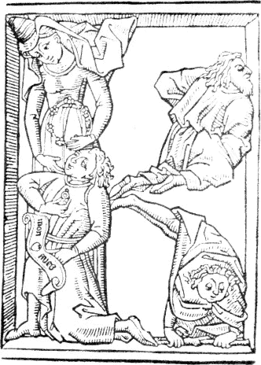
As to whether these cuts were engraved in England or no I shall not
venture to give an opinion. I am, however, satisfied that they were
neither designed nor engraved by the artists who designed and engraved
the cuts in the Apocalypse, the History of the Virgin, and the Poor
Preachers’ Bible. With respect to drawing, expression, and engraving,
the cuts of the Alphabet are decidedly superior to those of every
block-book,
109
and generally to all wood engravings executed previous to 1500, with the
exception of such as are by Albert Durer, and those contained in the
Hypnerotomachia, an Italian rhapsody, with wood-cuts supposed to have
been designed by Raffaele or Andrea Mantegna, and printed by Aldus at
Venice, 1499. Although the cuts of the Alphabet may not have been
engraved in England, it is, however, certain that the volume had been at
rather an early period in the possession of an Englishman. The cover
consists of a double fold of thick parchment, on the inside of which,
between the folds, there is written in large old English characters what
I take to be the name “Edwardus Lowes.” On the blank side of the last
leaf there is a sketch of a letter commencing “Right reverent and
wershipfull masters and frynds; In the moste loweliste maner that I
canne or may, I here recomende me, duely glade to her of yor good
110
prosperitye and welth.” The writing, as I have been informed, is of the
period of Henry VIII; and on the slips of paper and parchment to which
the inner margins of the leaves are pasted are portions of English
manuscripts, which are probably of the same date. There can, however, be
little doubt that the leaves have been mounted, and the volume covered,
about a hundred years subsequent to the engraving of the cuts.
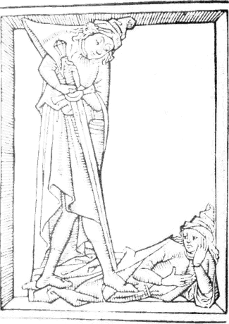
I agree with Mr. Ottley in thinking that those cuts were engraved
about the middle of the fifteenth century, but I can perceive nothing in
them to induce me to suppose they were the work of a Dutch artist; and I
am as little inclined to ascribe them to a German. The style of the
drawing is not unlike what we see in illuminated French manuscripts of
the middle of the fifteenth century; and as the only two engraved words
which occur in the volume are French, I am rather inclined to
suppose that the artist who made the drawings was a native of France.
111
The costume of the female to whom the words are addressed appears to be
French; and the action of the lover kneeling seems almost characteristic
of that nation. No Dutchman certainly ever addressed his mistress with
such an air. He holds what appears to be a ring as gracefully as a
modern Frenchman holds a snuff-box, and upon the scroll before him are
engraved a heart, and the words which he may be supposed to utter,
“Mon Ame.” At page 109, is a
fac-simile of the cut referred to, the letter K, of the size of the
original, and printed in the same kind of colour.
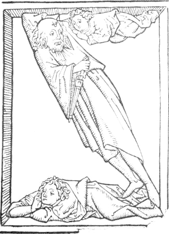
Upon the sword-blade in the original cut of the following letter, L,
there is written in small characters, as Mr. Ottley has observed, the
word “London;” and in the white space on the right, or upper
side, of the figure lying down, there appears written in the same hand
the name “Bethemsted.” In this name the letter B is not unlike a
W; and I have heard it conjectured that the name might be that of
112
John Wethamstede, abbot of St. Alban’s, who was a great lover of books,
and who died in 1440. This conjecture, however, will not hold good, for
the letter is certainly intended for a B; and in the cut of the letter B
there is written “R. Beths.,” which is in all probability
intended for an abbreviation of the name, “Bethemsted,” which
occurs in another part of the book. The ink with which these names are
written is nearly of the same colour as that of the cuts. The characters
appear to be of an earlier date than those on the reverse of the last
leaf.
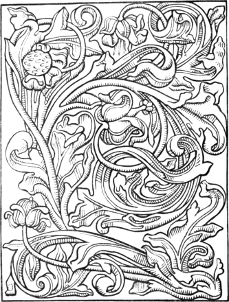
The cut at page 111, is that of the letter Z, which stands the wrong
way in consequence of its not having been drawn reversed upon the block.
The subject might at first sight be supposed to represent the angel
staying Abraham when about to sacrifice Isaac; but on examining the cut
more closely it will be perceived that the figure which might be
mistaken for an angel is without wings, and appears to be in the act of
supplicating the old man, who with his left hand holds him by the
hair.
113
The opposite cut, which is the last in the book, is an ornamental
flower designed with great freedom and spirit, and surpassing everything
of the kind executed on wood in the fifteenth century. I speak not
of the style of engraving, which, though effective, is coarse; but of
the taste displayed in the drawing. The colour of the cuts on pages 109,
110, 111, from the late Sir George Beaumont’s book, will give the
reader, who has not had an opportunity of examining the originals, some
idea of the colour in which the cuts of the Apocalypse, the History of
the Virgin, the Poor Preachers’ Bible, and the Speculum, are printed;
which in all of them is a kind of sepia, in some inclining more to a
yellow, and in others more to a brown.
In the volume under consideration we may clearly perceive that the
art of wood engraving had made considerable progress at the time the
cuts were executed. Although there are no attempts at cross-hatching,
which was introduced about 1486, yet the shadows are generally well
indicated, either by thickening the line, or by courses of short
parallel lines, marking the folds of the drapery, or giving the
appearance of rotundity to the figures. The expression of the heads
displays considerable talent, and the wood-engraver who at the present
time could design and execute such a series of figures, would be
entitled to no small degree of commendation. Comparing those cuts with
such as are to be seen in books typographically executed between 1461II.87 and 1490, it is surprising that the art of wood
engraving should have so materially declined when employed by printers
for the illustration of their books. The best of the cuts printed with
letter-press in the period referred to are decidedly inferior to the
best of the early block-books.
As it would occupy too much space, and would be beyond the scope of
the present treatise to enter into a detail of the contents of all the
block-books noticed by Heineken, I shall give a brief description
of that named “Ars Memorandi,” and conclude the chapter with a list of
such others as are chiefly referred to by bibliographers.
The “Ars Memorandi” is considered by
SchelhornII.88 and by Dr. Dibdin as one of the earliest
block-books, and in their opinion I concur. Heineken, however,—who
states that the style is almost the same as in the figures of the
Apocalypse,—thinks that it is of later date than the Poor
Preachers’ Bible and the History of the
114
Virgin. It is of a quarto size, and consists of fifteen cuts, with the
same number of separate pages of text also cut on wood, and printed on
one side of each leaf only by means of friction.II.89 At the foot of
each page of text is a letter of the alphabet, commencing with a, indicating the order in which they are
to follow each other. In every cut an animal is represented,—an
eagle, an angel, an ox, or a lion,—emblematic of the Evangelist
whose Gospel is to be impressed on the memory. Each of the animals is
represented standing upright, and marked with various signs expressive
of the contents of the different chapters. To the Gospel of St. John,
with which the book commences, three cuts with as many pages of text are
allotted. St. Matthew has five cuts, and five pages of text. St. Mark
three cuts and three pages of text; and St. Luke four cuts and four
pages of text.II.90
“It is worthy of observation,” says J. C. Von Aretin, in his Essay on
the earliest Results of the Invention of Printing, “that this book,
which the most intelligent bibliographers consider to be one of the
earliest of its kind, should be devoted to the improvement of the
memory, which, though divested of much of its former importance by the
invention of writing, was to be rendered of still less consequence by
the introduction of printing.”II.91
The first cut is intended to express figuratively the first six
chapters of St. John’s Gospel. The upright eagle is the emblem of the
saint, and the numerals are the references to the chapters. The contents
of the first chapter are represented by the dove perched on the eagle’s
head, and the two faces,—one of an old, the other of a young
man,—probably intended for those of Moses and Christ.II.92 The
lute on the breast of the eagle, with something like three bellsII.93
suspended from it, indicate the contents of the second chapter, and are
supposed by Schelhorn to refer to the marriage of Cana. The numeral 3,
in Schelhorn’s opinion, relates to “nonnihil apertum et prosectum circa
ventrem,” which he thinks may be intended as a reference to the words of
Nicodemus: “Nunquid homo senex potest in ventrem matris suæ
115
iterum introire et renasci?” Between the feet of the eagle is a
water-bucket surmounted by a sort of coronet or crown, intended to
represent the principal events narrated in the 4th chapter, which are
Christ’s talking with the woman of Samaria at the well, and his healing
the son of a nobleman at Capernaum. The 5th chapter is indicated by a
fish above the eagle’s right wing, which is intended to bring to mind
the pool of Bethesda. The principal event related in the 6th chapter,
Christ feeding the multitude, is indicated by the two fishes and five
small loaves above the eagle’s left wing. The cross within a circle,
above the fishes, is emblematic of the consecrated wafer in the Lord’s
supper, as celebrated by the church of Rome.II.94
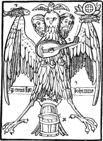
The above reduced copy of the cut will afford some idea of the manner
in which the memory is to be assisted in recollecting the first six
chapters of St. John. Those who wish to know more respecting this
curious book are referred to Schelhorn’s Amœnitates Literariæ,
tom. i.
116
pp. 1-17; Heineken, Idée Générale, pp. 394, 395; and to Dr. Dibdin’s
Bibliotheca Spenceriana, vol. i. p. 4, where a copy is given
of the first cut relating to the Gospel of St. Matthew.
Block-books containing both text and figures were executed long after
the introduction of typography, or printing by means of moveable types;
but the cuts in such works are decidedly inferior to those executed at
an earlier period. The book entitled “Die Kunst Cyromantia,”II.95 which
consists chiefly of text, is printed from wood-blocks on both sides of
each leaf by means of a press. At the conclusion of the title is the
date 1448; but this is generally considered to refer to the period when
the book was written, and not the time when it was engraved. On the last
page is the name: “jorg schapff zu
augspurg.” If this George Schapff was a wood-engraver of
Augsburg, the style of the cuts in the book sufficiently declares that
he must have been one of the very lowest class. More wretched cuts were
never chiselled out by a printer’s apprentice as a head-piece to a
half-penny ballad.
Of the block-book entitled “Ars Moriendi,” Heineken enumerates no
less than seven editions, of which one is printed on both sides of the
leaves, and by means of a press. Besides these he mentions another
edition, impressed on one side of the paper only, in which appear the
following name and date: “Hans eporer, 1473,
hat diss puch pruffmo er.”II.96
Of the book named in German “Der
Entkrist”—Antichrist—printed from wood-blocks,
Heineken mentions two editions. In that which he considers the first,
containing thirty-nine cuts, each leaf is printed on one side only by
means of friction; in the other, which contains thirty-eight cuts, is
the “brief-maler’s” or wood-engraver’s name: “Der jung hanss priffmaler hat das puch zu nurenberg,
1472.”
At Nuremberg, in the collection of a physician of the name of Treu,
Heineken noticed a small volume in quarto, consisting of thirty-two
wood-cuts of Bible subjects, underneath each of which were fifteen
verses in German, engraved on the same block. Each leaf was printed on
one side only, and the impressions, which were in pale ink, had been
taken by means of friction.
The early wood-engravers, besides books of cuts, executed others
117
consisting of text only, of which several portions are preserved in
public libraries in Germany,II.97 France, and Holland; and although
it is certain that block-books continued to be engraved and printed
several years after the invention of typography, there can be little
doubt that editions of the grammatical primer called the “Donatus,” from
the name of its supposed compiler, were printed from wood-blocks
previous to the earliest essays of Gutemberg to print with moveable
types. It is indeed asserted that Gutemberg himself engraved, or caused
to be engraved on wood, a “Donatus” before his grand invention was
perfected.
In the Royal Library at Paris are preserved the two old blocks of a
“Donatus” which are mentioned by Heineken at page 257 of his Idée
Générale. They are both of a quarto form; but as the one contains twenty
lines and the other only sixteen, and as there is a perceptible
difference in the size of the letters, it is probable that they were
engraved for different editions.II.98 Those blocks were purchased in
Germany by a Monsieur Faucault, and after passing through the hands of
three other book-collectors they came into the possession of the Duke de
la Vallière, at whose sale they were sold for two hundred and thirty
livres. In De Bure’s catalogue of the La Vallière library, impressions
are given from the original blocks. The letters in both those blocks,
though differing in size, are of the same proportions and form; and
Heineken and Fischer consider that they bear a great resemblance to the
characters of Faust and Scheffer’s Psalter, printed with moveable types
in 1457, although the latter are considerably larger.
The art of wood engraving, having advanced from a single figure with
merely a name cut underneath it, to the impression of entire pages of
text, was now to undergo a change. Moveable letters formed of metal, and
wedged together within an iron frame, were to supersede the engraved
page; and impressions, instead of being taken by the slow and tedious
process of friction, were now to be obtained by the speedy and powerful
action of the press. If the art of wood engraving suffered a temporary
decline for a few years after the general introduction of typography, it
was only to revive again under the protecting influence of the PRESS; by means of which its productions
were to be multiplied a hundred fold, and, instead of being confined to
a few towns, were to be disseminated throughout every part of
Europe.
Errors in Chapter II
The term Formschneider, which was originally used
Fornschneider
lustra / cors . apientie
printed as shown: probably error for “lustra / tor .
sapientie”
much better calculated to overthrow.II.43
overthrow.”
“Confute the exciseman and puzzle the vicar,—”
close quote missing
On these I have nothing to remark further
futher
not in the belief that I have made any important discovery
final t in “important” invisible
not so old as either the Apocalypse or the History of the
Virgin
Apocalpyse
Mulier autem in paradiso est formata
formato
David with Goliath’s head
Goliah’s
The title at full length is as follows: “Ars memorandi
open quote missing
Footnote II.2
That is: “always excepting
open quote missing
Footnote II-7
der Spielkarten Zu erforschen,
Zuerforschen
118
CHAPTER III.
INVENTION OF TYPOGRAPHY.
The discovery of desroches.—the stamping of lodewyc van
vaelbeke.—early “prenters” of antwerp and bruges not
typographers.—cologne chronicle.—donatuses printed in
holland.—gutemberg’s birth and family—progress of his
invention—his law-suit with the drytzehns at strasburg—his
return to mentz, and partnership with faust—partnership
dissolved.—possibility of printing with wooden types
examined.—supposed early productions of gutemberg and faust’s
press.—proofs of gutemberg having a press of his own.—the
vocabulary printed at elfeld.—gutemberg’s death and
epitaphs.—invention of printing claimed for lawrence
coster.—the account given by junius—contradicted, altered,
and amended at will by meerman, koning, and others.—works
pretended to be printed with coster’s types.—the horarium
discovered by enschedius.
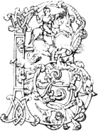efore proceeding to trace the progress of
wood engraving in connexion with typography, it appears necessary to
give some account of the invention of the latter art. In the following
brief narrative of Gutemberg’s life, I shall adhere to positive
facts; and until evidence equally good shall be produced in support of
another’s claim to the invention, I shall consider him as the
father of typography. I shall also give Hadrian Junius’s account of
the invention of wood engraving, block-printing, and typography by
Lawrence Coster, with a few remarks on its credibility. Some of the
conjectures and assertions of Meerman, Koning, and other advocates of
Coster, will be briefly noticed, and their inconsistency pointed out. To
attempt to refute at length the gratuitous assumptions of Coster’s
advocates, and to enter into a detail of all their groundless arguments,
would be like proving a medal to be a forgery by a long dissertation,
when the modern fabricator has plainly put his name in the legend. The
best proof of the fallacy of Coster’s claims to the honour of having
discovered the art of printing with moveable types is to be found in the
arguments of those by whom they have been supported.
119
Meerman, with all his research, has not been able to produce a single
fact to prove that Lawrence Coster, or Lawrence Janszoon as he calls
him, ever printed a single book; and it is by no means certain that his
hero is the identical Lawrence Coster mentioned by Junius. In order to
suit his own theory he has questioned the accuracy of the statements of
Junius, and has thus weakened the very foundation of Coster’s claims.
The title of the custos of St. Bavon’s to the honour of being the
inventor of typography must rest upon the authenticity of the account
given by Junius; and how far this corresponds with established facts in
the history of wood engraving and typography I leave others to decide
for themselves.
Among the many fancied discoveries of the real inventor of the art of
printing, that of Monsieur Desroches, a member of the Imperial
Academy of Sciences and Belles Lettres at Brussels, seems to require an
especial notice. In a paper printed in the transactions of that
society,III.1 he endeavoured to prove, that the art of printing
books was practised in Flanders about the beginning of the fourteenth
century; and one of the principal grounds of his opinion was contained
in an old chronicle of Brabant, written, as is supposed, by one Nicholas
le Clerk, [Clericus,] secretary to the city of Antwerp. The chronicler,
after having described several remarkable events which happened during
the government of John II. Duke of Brabant, who died in 1312, adds the
following lines:
In dieser tyt sterf menschelyc
Die goede vedelare Lodewyc;
Die de beste was die voor dien
In de werelt ye was ghesien
Van makene ende metter hant;
Van Vaelbeke in Brabant
Alsoe was hy ghenant.
Hy was d’erste die vant
Van Stampien die manieren
Diemen noch hoert antieren.
This curious record, which Monsieur Desroches considered as so plain
a proof of “die goede vedelare Lodewyc” being the inventor of printing,
may be translated in English as follows:
This year the way of all flesh went
Ludwig, the fidler most excellent;
For handy-work a man of name;
From Vaelbeke in Brabant he came.
120
He was the first who did find out
The art of beating time, no doubt,
(Displaying thus his meikle skill,)
And fidlers all practise it still.III.2
The laughable mistake of Monsieur Desroches in supposing that fidler
Ludwig’s invention, of beating time by stamping with the foot, related
to the discovery of printing by means of the press, was pointed out in
1779 by Monsieur Ghesquiere in a letter printed in the Esprit des
Journaux.III.3 In this letter Monsieur Ghesquiere shows that the
Flemish word “Stampien,” used by the chronicler in his account of the
invention of the “good fidler Ludwig,” had not a meaning similar to that
of the word “stampus” explained by Ducange, but that it properly
signified “met de voet kleppen,”—to stamp or beat with the
feet.
In support of his opinion of the antiquity of printing, Monsieur
Desroches refers to a manuscript in his possession, consisting of lives
of the saints and a chronicle written in the fourteenth century. At the
end of this manuscript was a catalogue of the books belonging to the
monastery of Wiblingen, the writing of which was much abbreviated, and
which appeared to him to be of the following century. Among other
entries in the catalogue was this: “(It.) dōicali īpv̄o lībo
ſtmp̄to ī bappiro nō s͞crpō.” On supplying the letters
wanting Monsieur Desroches says that we shall have the following words:
“Item. Dominicalia in parvo libro stampato in bappiro [papyro,] non
scripto;” that is, “Item. Dominicals [a form of prayer or portion
of church service] in a small book printed [or stamped] on paper, not
written.” In the abbreviated word ſtm̄p̄to, he says that the
letter m could not very well be distinguished; but the doubt which might
thus arise he considers to be completely resolved by the words “non
scripto,” and by the following memorandum which occurs, in the same
hand-writing, at the foot of the page: “Anno Dñi 1340 viguit q̄ fēt
stāpā Dñatos,”—
121
“In 1340 he flourished who caused Donatuses to be printed.” If the
catalogue were really of the period supposed by Monsieur Desroches, the
preceding extracts would certainly prove that the art of printing or
stamping books, though not from moveable types, was practised in the
fourteenth century; but, as the date has not been ascertained, its
contents cannot be admitted as evidence on the point in dispute.
Monsieur Ghesquiere is inclined to think that the catalogue was not
written before 1470; and, as the compiler was evidently an ignorant
person, he thinks that in the note, “Anno Domini 1340 viguit qui fecit
stampare Donatos,” he might have written 1340 instead of 1440.
Although it has been asserted that the wood-cut of St. Christopher
with the date 1423, and the wood-cut of the Annunciation—probably
of the same period—were printed by means of a press, yet I
consider it exceedingly doubtful if the press were employed to take
impressions from wood-blocks before Gutemberg used it in his earliest
recorded attempts to print with moveable types. I believe that in
every one of the early block-books, where opportunity has been afforded
of examining the back of each cut, unquestionable evidence has been
discovered of their having been printed, if I may here use the
term, by means of friction. Although there is no mention of a
press which might be used to take impressions before the process
between Gutemberg and the heirs of one of his partners, in 1439, yet
“Prenters” were certainly known in Antwerp before his invention of
printing with moveable types was brought to perfection. Desroches in his
Essay on the Invention of Printing gives an extract from an order of the
magistracy of Antwerp, in the year 1442, in favour of the fellowship or
guild of St. Luke, called also the Company of Painters, which consisted
of Painters, Statuaries, Stone-cutters, Glass-makers, Illuminators, and
“Prenters”. This fellowship was doubtless similar to that of
Venice, in whose favour a decree was made by the magistracy of that city
in 1441, and of which some account has been given, at page 43, in the
preceding chapter. There is evidence of a similar fellowship existing at
Bruges in 1454; and John Mentelin, who afterwards established himself at
Strasburg as a typographer or printer proper, was admitted a member of
the Painters’ Company of that city as a “Chrysographus” or illuminator
in 1447.III.4
Whether the “Prenters” of Antwerp in 1442 were acquainted with the
use of the press, or not, is uncertain; but there can be little doubt of
their not being Printers, as the word is now generally
understood; that is, persons who printed books with moveable types. They
were most likely block-printers, and such as engraved and printed cards
and
122
images of saints; and it would seem that typographers were not admitted
members of the society; for of all the early typographers of Antwerp the
name of one only, Mathias Van der Goes, appears in the books of the
fellowship of St. Luke; and he perhaps may have been admitted as a
wood-engraver, on account of the cuts in an herbal printed with his
types, without date, but probably between 1485 and 1490.
Ghesquiere, who successfully refuted the opinion of Desroches that
typography was known at Antwerp in 1442, was himself induced to suppose
that it was practised at Bruges in 1445, and that printed books were
then neither very scarce nor very dear in that city.III.5 In an old
manuscript journal or memorandum book of Jean-le-Robèrt, abbot of St.
Aubert in the diocese of Cambray, he observed an entry stating that the
said abbot had purchased at Bruges, in January 1446,
a “Doctrinale gette en mole” for the use of his nephew. The
words “gette en mole” he conceives to mean, “printed in type;” and he
thinks that the Doctrinale mentioned was the work which was subsequently
printed at Geneva, in 1478, under the title of Le Doctrinal de Sapience,
and at Westminster by Caxton, in 1489, under the title of The Doctrinal
of Sapyence. The Abbé Mercier de St. Leger, who wrote a reply to the
observations of Ghesquiere, with greater probability supposes that the
book was printed from engraved wood-blocks, and that it was the
“Doctrinale Alexandri Galli,” a short grammatical treatise in
monkish rhyme, which at that period was almost as popular as the
“Donatus,” and of which odd leaves, printed on both sides, are still to
be seen in libraries which are rich in early specimens of printing.
Although there is every reason to believe that the early Printers of
Antwerp and Bruges were not acquainted with the use of moveable types,
yet the mention of such persons at so early a period, and the notice of
the makers “of cards and printed figures” at Venice in 1441,
sufficiently declare that, though wood engraving might be first
established as a profession in Suabia, it was known, and practised to a
considerable extent, in other countries previous to 1450.
The Cologne Chronicle, which was printed in 1499, has been most
unfairly quoted by the advocates of Coster in support of their
assertions; and the passage which appeared most to favour their argument
they have ascribed to Ulric Zell, the first person who established a
press at Cologne. A shrewd German,III.6 however, has most clearly
shown, from the same chronicle, that the actual testimony of Ulric Zell
is directly in opposition
123
to the claims advanced by the advocates of Coster. The passage on which
they rely is to the following effect: “Item: although the art [of
printing] as it is now commonly practised, was discovered at Mentz, yet
the first conception of it was discovered in Holland from the Donatuses,
which before that time were printed there.” This we are given to
understand by Meerman and Koning is the statement of Ulric Zell.
A little further on, however, the Chronicler, who in the above
passage appears to have been speaking in his own person from popular
report, thus proceeds: “But the first inventor of printing was a citizen
of Mentz, though born at Strasburg,III.7 named John Gutemberg: Item:
from Mentz the above-named art first came to Cologne, afterwards to
Strasburg, and then to Venice. This account of the commencement and
progress of the said art was communicated to me by word of mouth by that
worthy person Master Ulric Zell of Hanau, at the present time [1499]
a printer in Cologne, through whom the said art was brought to
Cologne.” At this point the advocates of Coster stop, as the very next
sentence deprives them of any advantage which they might hope to gain
from the “impartial testimony of the Cologne Chronicle,” the compiler of
which proceeds as follows: “Item: there are certain fanciful
people who say that books were printed before; but this is not
true; for
in no country are books to be found printed before that time.”III.8
That “Donatuses” and other small elementary books for the use of
schools were printed from wood-blocks previous to the invention of
typography there can be little doubt; and it is by no means unlikely
that they might be first printed in Holland or in Flanders. At any rate
an opinion seems to have been prevalent at an early period that the idea
of printing with moveable types was first derived from a “Donatus,”III.9 printed from wood-blocks. In the petition of
Conrad Sweinheim and Arnold Pannartz, two Germans, who first established
124
a press at Rome, addressed to Pope Sixtus IV. in 1472, stating the
expense which they had incurred in printing books, and praying for
assistance, they mention amongst other works printed by them, “Donati pro puerulis, unde IMPRIMENDI INITIUM sumpsimus;” that is: “Donatuses
for boys, whence we have taken the beginning of printing.” If this
passage is to be understood as referring to the origin of typography,
and not to the first proofs of their own press, it is the earliest and
the best evidence on the point which has been adduced; for it is very
likely that both these printers had acquired a knowledge of their art at
Mentz in the very office where it was first brought to perfection.
About the year 1400, Henne, or John Gænsfleisch de Sulgeloch, called
also John Gutemberg zum Jungen, appears to have been born at Mentz. He
had two brothers; Conrad who died in 1424, and Friele who was living in
1459. He had also two sisters, Bertha and Hebele, who were both nuns of
St. Claire at Mentz. Gutemberg had an uncle by his father’s side, named
Friele, who had three sons, named John, Friele, and Pederman, who were
all living in 1459.
Gutemberg was descended of an honourable family, and he himself is
said to have been by birth a knight.III.10 It would appear that the
family had been possessed of considerable property. They had one house
in Mentz called zum Gænsfleisch, and another called zum Gudenberg, or
Gutenberg, which Wimpheling translates, “Domum boni montis.” The local
name of Sulgeloch, or Sorgenloch, was derived from the name of a village
where the family of Gænsfleisch had resided previous to their removing
to Mentz. It seems probable that the house zum Jungen at Mentz came into
the Gutembergs’ possession by inheritance. It was in this house,
according to the account of Trithemius, that the printing business was
carried on during his partnership with Faust.III.11
When Gutemberg called himself der Junge, or junior, it was doubtless
to distinguish himself from Gænsfleisch der Elter, or senior,
a name which frequently occurs in the documents printed by Koehler.
Meerman has fixed upon the latter name for the purpose of giving to
Gutemberg a brother of the same christian name, and of making him the
thief who stole Coster’s types. He also avails himself of an error
committed by Wimpheling and others, who had supposed John Gutemberg and
John Gænsfleisch to be two different persons. In two deeds of sale,
however, of the date 1441 and 1442, entered in the Salic book of the
church of
125
St. Thomas at Strasburg, he is thus expressly named: “Joannes dictus
Gensfleisch alias nuncupatus Gutenberg de Moguncia, Argentinæ
commorans;” that is, “John Gænsfleisch, otherwise named Gutemberg,
of Mentz, residing at Strasburg.”III.12 Anthony à Wood, in his History
of the University of Oxford, calls him Tossanus; and Chevillier, in his
Origine de l’Imprimerie de Paris, Toussaints. SeizIII.13 is within an
ace of making him a knight of the Golden Fleece. That he was a man of
property is proved by various documents; and those writers who have
described him as a person of mean origin, or as so poor as to be obliged
to labour as a common workman, are certainly wrong.
From a letter written by Gutemberg in 1424 to his sister Bertha it
appears that he was then residing at Strasburg; and it is also certain
that in 1430 he was not living at Mentz; for in an act of accommodation
between the nobility and burghers of that city, passed in that year with
the authority of the archbishop Conrad III., Gutemberg is mentioned
among the nobles “die ytzund nit inlendig sint”—“who are
not at present in the country.” In 1434 there is positive evidence of
his residing at Strasburg; for in that year he caused the town-clerk of
Mentz to be arrested for a sum of three hundred florins due to him from
the latter city, and he agreed to his release at the instance of the
magistrates of Strasburg within whose jurisdiction the arrest took
place.III.14 In 1436 he entered into partnership with Andrew
Drytzehn and others; and there is every reason to believe that at this
period he was engaged in making experiments on the practicability of
printing with moveable types, and that the chief object of his engaging
with those persons was to obtain funds to enable him to perfect his
invention.
From 1436 to 1444 the name of Gutemberg appears among the
“Constaflers” or civic nobility of Strasburg. In 1437 he was
summoned before the ecclesiastical judge of that city at the suit of
Anne of Iron-Door,III.15 for breach of promise of marriage. It
would seem that he afterwards fulfilled his promise, for in a tax-book
of the city of Strasburg, Anne Gutemberg is mentioned, after Gutemberg
had returned to Mentz, as paying the toll levied on wine.
Andrew Drytzehn, one of Gutemberg’s partners, having died in 1438,
his brothers George and Nicholas instituted a process against Gutemberg
to compel him either to refund the money advanced by their brother, or
to admit them to take his place in the partnership. From the depositions
126
of the witnesses in this cause, which, together with the decision of the
judges, are given at length by Schœpflin, there can be little doubt that
one of the inventions which Gutemberg agreed to communicate to his
partners was an improvement in the art of printing, such as it was at
that period.
The following particulars concerning the partnership of Gutemberg
with Andrew Drytzehn and others are derived from the recital of the case
contained in the decision of the judges. Some years before his death,
Andrew Drytzehn expressed a desire to learn one of Gutemberg’s arts, for
he appears to have been fond of trying new experiments, and the latter
acceding to his request taught him a method of polishing stones, by
which he gained considerable profit. Some time afterwards, Gutemberg, in
company with a person named John Riff, began to exercise a certain art
whose productions were in demand at the fair of Aix-la-Chapelle. Andrew
Drytzehn, hearing of this, begged that the new art might be explained to
him, promising at the same time to give whatever premium should be
required. Anthony Heilman also made a similar request for his brother
Andrew Heilman.III.16 To both these applications Gutemberg assented,
agreeing to teach them the art; it being stipulated that the two new
partners were to receive a fourth part of the profits between them; that
Riff was to have another fourth; and that the remaining half should be
received by the inventor. It was also agreed that Gutemberg should
receive from each of the new partners the sum of eighty florins of gold
payable by a certain day, as a premium for communicating to them his
art. The great fair of Aix-la-Chapelle being deferred to another year,
Gutemberg’s two new partners requested that he would communicate to them
without reserve all his wonderful and rare inventions; to which he
assented on condition that to the former sum of one hundred and sixty
florins they should jointly advance two hundred and fifty more, of which
one hundred were to be paid immediately, and the then remaining
seventy-five florins due by each were to be paid at three instalments.
Of the hundred florins stipulated to be paid in ready money, Andrew
Heilman paid fifty, according to his engagement, while Andrew Drytzehn
only paid forty, leaving ten due. The term of the partnership for
carrying on the “wonderful art” was fixed at five years; and it was also
agreed that if any of the partners should die within that period, his
interest in the utensils and stock should become vested in the surviving
partners, who at the completion of the term were to pay to the heirs of
the deceased the sum of one
127
hundred florins. Andrew Drytzehn having died within the period, and when
there remained a sum of eighty-five florins unpaid by him, Gutemberg met
the claim of his brothers by referring to the articles of partnership,
and insisted that from the sum of one hundred florins which the
surviving partners were bound to pay, the eighty-five remaining unpaid
by the deceased should be deducted. The balance of fifteen florins thus
remaining due from the partnership he expressed his willingness to pay,
although according to the terms of the agreement it was not payable
until the five years were expired, and would thus not be strictly due
for some years to come. The claim of George Drytzehn to be admitted a
partner, as the heir of his brother, he opposed, on the ground of his
being unacquainted with the obligations of the partnership; and he also
denied that Andrew Drytzehn had ever become security for the payment of
any sum for lead or other things purchased on account of the business,
except to Fridelin von Seckingen, and that this sum (which was owing for
lead) Gutemberg himself paid. The judges having heard the allegations of
both parties, and having examined the agreement between Gutemberg and
Andrew Drytzehn, decided that the eighty-five florins which remained
unpaid by the latter should be deducted from the hundred which were to
be repaid in the event of any one of the partners dying; and that
Gutemberg should pay the balance of fifteen florins to George and
Nicholas Drytzehn, and that when this sum should be paid they should
have no further claim on the partnership.III.17
From the depositions of some of the witnesses in this process, there
can scarcely be a doubt that the “wonderful art” which Gutemberg was
attempting to perfect was typography or printing with moveable types.
FournierIII.18 thinks that Gutemberg’s attempts at printing, as
may be gathered from the evidence in this cause, were confined to
printing from wood-blocks; but such expressions of the witnesses as
appear to relate to printing do not favour this opinion. As Gutemberg
lived near the monastery of St. Arbogast, which was without the walls of
the city, it appears that the attempts to perfect his invention were
carried on in the house of his partner Andrew Drytzehn. Upon the death
of the latter, Gutemberg appears to have been particularly anxious that
“four pieces” which were in a “press” should be
“distributed,”—making use of the very word which is yet used in
Germany to express the distribution or separation of a form of
types—-so that no person should know what they were.
Hans Schultheis, a dealer in wood, and Ann his wife, depose to the
following effect: After the death of Andrew Drytzehn, Gutemberg’s
128
servant, Lawrence Beildeck, came to their house, and thus addressed
their relation Nicholas Drytzehn: “Your deceased brother Andrew had four
“pieces” placed under a press, and John Gutemberg requests that you will
take them out and lay them separately [or apart from each other] upon
the press so that no one may see what it is.”III.19
Conrad Saspach states that one day Andrew Heilman, a partner of
Gutemberg’s, came to him in the Merchants’ Walk and said to him,
“Conrad, as Andrew Drytzehn is dead, and as you made the press
and know all about it, go and take the piecesIII.20 out of
the press and separate [zerlege] them so that no person may know what
they are.” This witness intended to do as he was requested, but on
making inquiry the day after St. Stephen’s DayIII.21 he found that
the work was removed.
Lawrence Beildeck, Gutemberg’s servant, deposes that after Andrew
Drytzehn’s death he was sent by his master to Nicholas Drytzehn to tell
him not to show the press which he had in his house to any person.
Beildeck also adds that he was desired by Gutemberg to go to the
presses, and to open [or undo] the press which was fastened with two
screws, so that the “pieces” [which were in it] should fall asunder. The
said “pieces” he was then to place in or upon the press, so that no
person might see or understand them.
Anthony Heilman, the brother of one of Gutemberg’s partners, states
that he knew of Gutemberg having sent his servant shortly before
Christmas both to Andrew Heilman and Andrew Drytzehn to bring away all
the “forms” [formen] that they might be separated in his presence, as he
found several things in them of which he disapproved.III.22 The
same witness also states that he was well aware of many people being
wishful
129
to see the press, and that Gutemberg had desired that they should send
some person to prevent its being seen.
Hans Dünne, a goldsmith, deposed that about three years before, he
had done work for Gutemberg on account of printing alone to the amount
of a hundred florins.III.23
As Gutemberg evidently had kept his art as secret as possible, it is
not surprising that the notice of it by the preceding witnesses should
not be more explicit. Though it may be a matter of doubt whether his
invention was merely an improvement on block-printing, or an attempt to
print with moveable types, yet, bearing in mind that express mention is
made of a press and of printing, and taking into
consideration his subsequent partnership with Faust, it is morally
certain that Gutemberg’s attention had been occupied with some new
discovery relative to printing at least three years previous to December
1439.
If Gutemberg’s attempts when in partnership with Andrew Drytzehn and
others did not extend beyond block-printing, and if the four “pieces”
which were in the press are assumed to have been four engraved blocks,
it is evident that the mere unscrewing them from the “chase” or
frame in which they might be enclosed, would not in the least prevent
persons from knowing what they were; and it is difficult to conceive how
the undoing of the two screws would cause “the pieces” to fall asunder.
If, however, we suppose the four “pieces” to have been so many pages of
moveable types screwed together in a frame, it is easy to conceive the
effect of undoing the two screws which held it together. On this
hypothesis, Gutemberg’s instructions to his servant, and Anthony
Heilman’s request to Conrad Saspach, the maker of the press, that he
would take out the “pieces” and distribute them, are at once
intelligible. If Gutemberg’s attempts were confined to block-printing,
he could certainly have no claim to the discovery of a new art, unless
indeed we are to suppose that his invention consisted in the
introduction of the press for the purpose of taking impressions; but it
is apparent that his anxiety was not so much to prevent people seeing
the press as to keep them ignorant of the purpose for which it was
employed, and to conceal what was in it.
The evidence of Hans Dünne the goldsmith, though very brief, is in
favour of the opinion that Gutemberg’s essays in printing were made with
moveable types of metal; and it also is corroborated by the fact of
lead being one of the articles purchased on account of the
partnership. It is certain that goldsmiths were accustomed to engrave
letters and figures upon silver and other metals long before the art of
copper-plate printing was introduced; and Fournier not attending to the
distinction
130
between simple engraving on metal and engraving on a plate for the
purpose of taking impressions on paper, has made a futile objection to
the argument of Bär,III.24 who very naturally supposes that the
hundred florins which Hans Dünne received from Gutemberg for work done
on account of printing alone, might be on account of his having cut the
types, the formation of which by means of punches and matrices was a
subsequent improvement of Peter Scheffer. It is indeed difficult to
conceive in what manner a goldsmith could earn a hundred florins for
work done on account of printing, except in his capacity as an engraver;
and as I can see no reason to suppose that Hans Dünne was an engraver on
wood, I am inclined to think that he was employed by Gutemberg to
cut the letters on separate pieces of metal.
There is no evidence to show that Gutemberg succeeded in printing any
books at Strasburg with moveable types: and the most likely conclusion
seems to be that he did not. As the process between him and the
Drytzehns must have given a certain degree of publicity to his
invention, it might be expected that some notice would have been taken
of its first-fruits had he succeeded in making it available in
Strasburg. On the contrary, all the early writers in the least entitled
to credit, who have spoken of the invention of printing with moveable
types, agree in ascribing the honour to Mentz, after Gutemberg had
returned to that city and entered into partnership with Faust. Two
writers, however, whose learning and research are entitled to the
highest respect, are of a different opinion. “It has been doubted,” says
Professor Oberlin, “that Gutemberg ever printed books at Strasburg. It
is, nevertheless, probable that he did; for he had a press there in
1439, and continued to reside in that city for five years afterwards. He
might print several of those small tracts without date, in which the
inequality of the letters and rudeness of the workmanship indicate the
infancy of the art. Schœpflin thinks that he can identify some of them;
and the passages cited by him clearly show that printing had been
carried on there.”III.25 It is, however, to be remarked that the
passages cited by Schœpflin, and referred to by Oberlin,
131
by no means show that the art of printing had been practised at
Strasburg by Gutemberg; nor do they clearly prove that it had been
continuously carried on there by his partners or others to the time of
Mentelin, who probably established himself there as a printer in
1466.
It has been stated that Gutemberg’s first essays in typography were
made with wooden types; and Daniel Specklin, an architect of Strasburg,
who died in 1589, professed to have seen some of them. According to his
account there was a hole pierced in each letter, and they were arranged
in lines by a string being passed through them. The lines thus formed
like a string of beads were afterwards collected into pages, and
submitted to the press. Particles and syllables of frequent occurrence
were not formed of separate letters, but were cut on single pieces of
wood. We are left to conjecture the size of those letters; but if they
were sufficiently large to allow of a hole being bored through them, and
to afterwards sustain the action of the press, they could not well be
less than the missal types with which Faust and Scheffer’s Psalter is
printed. It is however likely that Specklin had been mistaken; and that
he had supposed some old initial letters, large enough to admit of a
hole being bored through them without injury, to have been such as were
generally used in the infancy of the art.
In 1441 and 1442, Gutemberg, who appears to have been always in want
of money, executed deeds of sale to the dean and chapter of the
collegiate church of St. Thomas at Strasburg, whereby he assigned to
them certain rents and profits in Mentz which he inherited from his
uncle John Leheymer, who had been a judge in that city. In 1443 and 1444
Gutemberg’s name still appears in the rate or tax book of Strasburg; but
after the latter year it is no longer to be found. About 1445, it is
probable that he returned to Mentz, his native city, having apparently
been unsuccessful in his speculations at Strasburg. From this period to
1450 it is likely that he continued to employ himself in attempts to
perfect his invention of typography. In 1450 he entered into partnership
with John Faust, a goldsmith and native of Mentz, and it is from
this year that Trithemius dates the invention. In his Annales
Hirsaugienses, under the year 1450, he gives the following account of
the first establishment and early progress of the art. “About this time
[1450], in the city of Mentz upon the Rhine, in Germany, and not in
Italy as some have falsely stated, this wonderful and hitherto unheard
of art of printing was conceived and invented by John Gutemberg,
a citizen of Mentz. He had expended nearly all his substance on the
invention; and being greatly pressed for want of means, was about to
abandon it in despair, when, through the advice and with the money
furnished by John Faust, also a citizen of Mentz, he completed his
undertaking. At first they printed the vocabulary called the
Catholicon, from letters cut on blocks of wood.
132
These letters however could not be used to print anything else, as they
were not separately moveable, but were cut on the blocks as above
stated. To this invention succeeded others more subtle, and they
afterwards invented a method of casting the shapes, named by them
matrices, of all the letters of the Roman alphabet, from which
they again cast letters of copper or tin, sufficient to bear any
pressure to which they might be subjected, and which they had formerly
cut by hand. As I have heard, nearly thirty years ago, from Peter
Scheffer, of Gernsheim, citizen of Mentz, who was son-in-law of the
first inventor, great difficulties attended the first establishment of
this art; for when they had commenced printing a Bible they found that
upwards of four thousand florins had been expended before they had
finished the third quaternion [or quire of four sheets]. Peter
Scheffer, an ingenious and prudent man, at first the servant, and
afterwards, as has been already said, the son-in-law of John Faust, the
first inventor, discovered the more ready mode of casting the types, and
perfected the art as it is at present exercised. These three for some
time kept their method of printing a secret, till at length it was
divulged by some workmen whose assistance they could not do without. It
first passed to Strasburg, and gradually to other nations.”III.26
As Trithemius finished the work which contains the preceding account
in 1514, Marchand concludes that he must have received his information
from Scheffer about 1484, which would be within thirty-five years of
Gutemberg’s entering into a partnership with Faust. Although Trithemius
had his information from so excellent an authority, yet the account
which he has thus left is far from satisfactory. Schœpflin, amongst
other objections to its accuracy, remarks that Trithemius is wrong in
stating that the invention of moveable types was subsequent to
Gutemberg’s connexion with Faust, seeing that the former had previously
employed them at Strasburg; and he also observes that in the learned
abbot’s account there is no distinct mention made of moveable letters
cut by hand, but that we are led to infer that the improvement of
casting types from matrices immediately followed the printing of the
Catholicon from wood-blocks. The words of Trithemius on this point are
as follows: “Post hæc, inventis successerunt subtiliora, inveneruntque
modum fundendi formas omnium Latini alphabeti litterarum, quas ipsi
matrices nominabant, ex quibus rursum æneos sive stanneos
characteres fundebant ad omnem pressuram sufficientes quos prius manibus
sculpebant.” From this passage it might be objected in opposition to the
opinion of Schœpflin:III.27 1. That the “subtiliora,”—more
subtle contrivances, mentioned before the invention of casting
moveable letters, may relate to the cutting
133
of such letters by hand. 2. That the word “quos” is to be referred
to the antecedent “æneos sive stanneos characteres,”—letters of
copper or tin,—and not to the “characteres in tabulis ligneis
scripti,”—letters engraved on wood-blocks,—which are
mentioned in a preceding sentence. The inconsistency of Trithemius in
ascribing the origin of the art to Gutemberg, and twice immediately
afterwards calling Scheffer the son-in-law of “the first inventor,”
Faust, is noticed by Schœpflin, and has been pointed out by several
other writers.
In 1455 the partnership between Gutemberg and Faust was dissolved at
the instance of the latter, who preferred a suit against his partner for
the recovery, with interest, of certain sums of money which he had
advanced. There is no mention of the time when the partnership commenced
in the sentence or award of the judge; but Schwartz infers, from the sum
claimed on account of interest, that it must have been in August 1449.
It is probable that his conclusion is very near the truth; for most of
the early writers who have mentioned the invention of printing at Mentz
by Gutemberg and Faust, agree in assigning the year 1450 as that in
which they began to practise the new art. It is conjectured by Santander
that Faust, who seems to have been a selfish character,III.28 sought
an opportunity of quarrelling with Gutemberg as soon as Scheffer had
communicated to him his great improvement of forming the letters by
means of punches and matrices.
The document containing the decision of the judges was drawn up by
Ulric Helmasperger, a notary, on 6th November, 1455, in the
presence of Peter Gernsheim [Scheffer], James Faust, the brother of
John, Henry Keffer, and others.III.29 From the statement of Faust,
as recited in this instrument, it appears that he had first advanced to
Gutemberg eight hundred florins at the annual interest of six per cent.,
and afterwards eight hundred florins more. Gutemberg having neglected to
pay the interest, there was owing by him a sum of two hundred and fifty
florins on account of the first eight hundred; and a further sum of one
hundred and forty on account of the second. In consequence of
Gutemberg’s
134
neglecting to pay the interest, Faust states that he had incurred a
further expense of thirty-six florins from having to borrow money both
of Christians and Jews. For the capital advanced by him, and arrears of
interest, he claimed on the whole two thousand and twenty florins.III.30
In answer to these allegations Gutemberg replied: that the first
eight hundred florins which he received of Faust were advanced in order
to purchase utensils for printing, which were assigned to Faust as a
security for his money. It was agreed between them that Faust should
contribute three hundred florins annually for workmen’s wages and
house-rent, and for the purchase of parchment, paper, ink, and other
things.III.31 It was also stipulated that in the event of any
disagreement arising between them, the printing materials assigned to
Faust as a security should become the property of Gutemberg on his
repaying the sum of eight hundred florins. This sum, however, which was
advanced for the completion of the work, Gutemberg did not think himself
bound to expend on book-work alone; and although it was expressed in
their agreement that he should pay six florins in the hundred for an
annual interest, yet Faust assured him that he would not accept of it,
as the eight hundred florins were not paid down at once, as by their
agreement they ought to have been. For the second sum of eight hundred
florins he was ready to render Faust an account. For interest or usury
he considered that he was not liable.III.32
The judges, having heard the statements of both parties, decided that
Gutemberg should repay Faust so much of the capital as had not been
expended in the business; and that on Faust’s producing witnesses, or
swearing that he had borrowed upon interest the sums advanced, Gutemberg
should pay him interest also, according to their agreement. Faust having
made oath that he had borrowed 1550 florins, which he paid over to
Gutemberg, to be employed by him for their common benefit, and that he
had paid yearly interest, and was still liable on account of the same,
the notary, Ulric Helmasperger, signed his attestation of the award on
135
6th November, 1455.III.33 It would appear that Gutemberg not being
able to repay the money was obliged to relinquish the printing materials
to Faust.
Salmuth, who alludes to the above document in his annotations upon
Pancirollus, has most singularly perverted its meaning, by representing
Gutemberg as the person who advanced the money, and Faust as the
ingenious inventor who was sued by his rich partner. “From this it
evidently appears,” says he, after making Gutemberg and Faust exchange
characters, “that Gutemberg was not the first who invented and practised
typography; but that some years after its invention he was admitted a
partner by John Faust, to whom he advanced money.” If for “Gutemberg” we
read “Faust,” and vice versâ, the account is correct.
Whether Faust, who might be an engraver as well as a goldsmith,
assisted Gutemberg or not by engraving the types, does not appear. It is
stated that Gutemberg’s earliest productions at Mentz were an alphabet
cut on wood, and a Donatus executed in the same manner. Trithemius
mentions a “Catholicon” engraved on blocks of wood as one of the
first books printed by Gutemberg and Faust, and this Heineken thinks was
the same as the Donatus.III.34 Whatever may have been the
book which Trithemius describes as a “Catholicon,” it certainly was not
the “Catholicon Joannis Januensis,” a large folio which appeared
in 1460 without the name or residence of the printer, but which is
supposed to have been printed by Gutemberg after the dissolution of his
partnership with Faust.
It has been stated that previous to the introduction of metal types
Gutemberg and Faust used moveable types of wood; and Schœpflin speaks
confidently of such being used at Strasburg by Mentelin long after
Scheffer had introduced the improved method of forming metal types by
means of punches and matrices. On this subject, however, Schœpflin’s
opinion is of very little weight, for on whatever relates to the
practice of typography or wood engraving he was very slightly informed.
He fancies that all the books printed at Strasburg previous to the
appearance of Vincentii Bellovacensis Speculum Historiale in
1473, were printed with moveable types of wood. It is, however, doubtful
if ever a single book was printed in this manner.
136
Willett in his Essay on Printing, published in the eleventh volume of
the Archæologia, not only says that no entire book was ever printed with
wooden types, but adds, “I venture to pronounce it impossible.” He
has pronounced rashly. Although it certainly would be a work of
considerable labour to cut a set of moveable letters of the size of what
is called Donatus type, and sufficient to print such a book, yet it is
by no means impossible. That such books as “Eyn Manung der
Cristenheit widder die durken,” of which a fac-simile is given by
Aretin, and the first and second Donatuses, of which specimens are given
by Fischer, might be printed from wooden types I am perfectly satisfied,
though I am decidedly of opinion that they were not. Marchand has
doubted the possibility of printing with wooden types, which he observes
would be apt to warp when wet for the purpose of cleaning; but it is to
be observed that they would not require to be cleaned before they were
used.
Fournier, who was a letter-founder, and who occasionally practised
wood engraving, speaks positively of the Psalter first printed by Faust
and Scheffer in 1457, and again in 1459, being printed with wooden
types; and he expresses his conviction of the practicability of cutting
and printing with such types, provided that they were not of a smaller
size than Great Primer Roman. Meerman shows the possibility of using
such types; and Camus caused two lines of the Bible, supposed to have
been printed by Gutemberg, to be cut in separate letters on wood, and
which sustained the action of the press.III.35 Lambinet says,
it is certain that Gutemberg cut moveable letters of wood, but he gives
no authority for the assertion; and I am of opinion that no
unexceptionable testimony on this point can be produced. The statements
of Serarius and Paulus Pater,III.36 who profess to have seen such
ancient wooden types at Mentz, are entitled to as little credit as
Daniel Specklin, who asserted that he had seen such at Strasburg. They
may have seen large initial letters of wood with holes bored through,
but scarcely any lower-case letters which were ever used in printing any
book.
That experiments might be made by Gutemberg with wooden types I can
believe, though I have not been able to find any sufficient authority
for the fact. Of the possibility of cutting moveable types of a certain
size in wood, and of printing a book with them, I am convinced from
experiment; and could convince others, were it worth the expense, by
137
printing a fac-simile, from wooden types, of any page of any book which
is of an earlier date than 1462. But, though convinced of the
possibility of printing small works in letters of a certain size, with
wooden types, I have never seen any early specimens of typography
which contained positive and indisputable indications of having been
printed in that manner. It was, until of late, confidently asserted by
persons who pretended to have a competent knowledge of the subject, that
the text of the celebrated Adventures of Theurdank, printed in 1517, had
been engraved on wood-blocks, and their statement was generally
believed. There cannot, however, now be a doubt in the mind of any
person who examines the book, and who has the slightest knowledge of
wood engraving and printing, of the text being printed with metal
types.
During the partnership of Gutemberg and Faust it is likely that they
printed some works, though there is scarcely one which can be assigned
to them with any degree of certainty. One of the supposed earliest
productions of typography is a letter of indulgence conceded on the 12th
of August, 1451, by Pope Nicholas V, to Paulin Zappe, counsellor and
ambassador of John, King of Cyprus. It was to be in force for three
years from the 1st of May, 1452, and it granted indulgence to all
persons who within that period should contribute towards the defence of
Cyprus against the Turks. Four copies of this indulgence are known,
printed on vellum in the manner of a patent or brief. The characters are
of a larger size than those of the “Durandi Rationale,” 1459, or of the
Latin Bible printed by Faust and Scheffer in 1462. The following date
appears at the conclusion of one of the copies: “Datum Erffurdie
sub anno Domini m cccc liiij, die vero quinta decima mensis
novembris.” The words which are here printed in Italic, are in
the original written with a pen. A copy of the same indulgence
discovered by Professor Gebhardi is more complete. It has at the end,
a “Forma plenissimæ absolutionis et remissionis in vita et in
mortis articulo,”—a form of plenary absolution and remission
in life and at the point of death. At the conclusion is the following
date, the words in Italics being inserted with a pen: “Datum in
Luneborch anno Domini m cccc l quinto, die vero
vicesima sexta mensis Januarii.” Heineken, who saw this
copy in the possession of Breitkopf, has observed that in the original
date, m cccc liiij, the last four characters had been effaced and
the word quinto written with a pen; but yet in such a manner that
the numerals iiij might still be perceived. In two copies of this
indulgence in the possession of Earl Spencer, described by Dr. Dibdin in
the Bibliotheca Spenceriana, vol. i. p. 44, the final units
(iiij) have not had the word “quinto” overwritten, but have been formed
with a pen into the numeral V. In the catalogue of Dr. Kloss’s
library, No. 1287, it is stated that a fragment of a “Donatus”
there described, consisting of two leaves of parchment, is printed
138
with the same type as the Mazarine Bible; and it is added, on the
authority of George Appleyard, Esq., Earl Spencer’s librarian, that the
“Littera Indulgentiæ” of Pope Nicholas V, in his lordship’s possession,
contains two lines printed with the same type. Breitkopf had some doubts
respecting this instrument; but a writer in the Jena Literary Gazette is
certainly wrong in supposing that it had been ante-dated ten years. It
was only to be in force for three years; and Pope Nicholas V, by whom it
was granted, died on the 24th March, 1455.III.37 Two words,
UNIVERSIS and PAULINUS, which are printed in capitals in the first
two lines, are said to be of the same type as those of a Bible of which
Schelhorn has given a specimen in his “Dissertation on an early Edition
of the Bible,” Ulm, 1760.
The next earliest specimen of typography with a date is the tract
entitled “Eyn Manung der Cristenkeit widder die durken,”—An
Appeal to Christendom against the Turks,—which has been alluded to
at page 136. A lithographic fac-simile of the whole of this tract,
which consists of nine printed pages of a quarto size, is given by
Aretin at the end of his “Essay on the earliest historical results of
the invention of Printing,” published at Munich in 1808. This “Appeal”
is in German rhyme, and it consists of exhortations, arranged under
every month in the manner of a calendar, addressed to the pope, the
emperor, to kings, princes, bishops, and free states, encouraging them
to take up arms and resist the Turks. The exhortation for January is
addressed to Pope Nicholas V, who died, as has been observed, in March
1455. Towards the conclusion of the prologue is the date “Als man
zelet noch din’ geburt offenbar m.cccc.lv. iar sieben wochen und iiii do
by von nativitatis bis esto michi.” At the conclusion of the
exhortation for December are the following words: “Eyn gut selig nuwe
Jar:” A happy new year! From these circumstances Aretin is of
opinion that the tract was printed towards the end of 1454.
M. Bernhart, however, one of the superintendents of the Royal
Library at Munich, of which Aretin was the principal director, has
questioned the accuracy of this date; and from certain allusions in the
exhortation for December, has endeavoured to show that the correct date
ought to be 1472.III.38
Fischer in looking over some old papers discovered a calendar of a
folio size, and printed on one side only, for 1457. The letters,
according to his description, resemble those of a Donatus, of which he
has given a specimen in the third part of his Typographic Rarities, and
he supposes that both the Donatus and the Calendar were printed by
Gutemberg.III.39
139
It is, however, certain that the Donatus which he ascribed to Gutemberg
was printed by Peter Scheffer, and in all probability after Faust’s
death; and from the similarity of the type it is likely that the
Calendar was printed at the same office. Fischer, having observed that
the large ornamental capitals of this Donatus were the same as those in
the Psalter printed by Faust and Scheffer in 1457, was led most
erroneously to conclude that the large ornamental letters of the
Psalter, which were most likely of wood, had been cut by Gutemberg. The
discovery of a Donatus with Peter Scheffer’s imprint has completely
destroyed his conjectures, and invalidated the arguments advanced by him
in favour of the Mazarine Bible being printed by Gutemberg alone.
As Trithemius and the compiler of the Cologne Chronicle have
mentioned a Bible as one of the first books printed by Gutemberg and
Faust, it has been a fertile subject of discussion among bibliographers
to ascertain the identical edition to which the honour was to be
awarded. It seems, however, to be now generally admitted that the
edition called the MazarineIII.40 is the best entitled to that
distinction. In 1789 Maugerard produced a copy of this edition to the
Academy of Metz, containing memoranda which seem clearly to prove that
it was printed at least as early as August 1456. As the partnership
between Gutemberg and Faust was only dissolved in November 1455, it is
almost impossible that such could have been printed by either of them
separately in the space of eight months; and as there seems no reason to
believe that any other typographical establishment existed at that
period, it is most likely that this was the identical edition alluded to
by Trithemius as having cost 4,000 florins before the partners,
Gutemberg and Faust, had finished the third quaternion, or quire of four
sheets.
The copy produced by Maugerard is printed on paper, and is now in the
Royal Library at Paris. It is bound in two volumes; and every complete
page consists of two columns, each containing forty-two lines. At the
conclusion of the first volume the person by whom it was rubricatedIII.41 and bound has written the following memorandum:
“Et sic est finis prime partis biblie. Scr. Veteris testamenti.
Illuminata seu rubricata et illuminata p’ henricum Albeh alius Cremer
anno dn’i m.cccc.lvi festo Bartholomei apli—Deo
gratias—alleluja.” At the end of the second
140
volume the same person has written the date in words at length: “Iste
liber illuminatus, ligatus & completus est p’ henricum Cremer
vicariū ecclesie collegatur Sancti Stephani maguntini sub anno
D’ni millesimo quadringentesimo quinquagesimo sexto festo assumptionis
gloriose virginis Marie. Deo gracias alleluja.”III.42 FischerIII.43 says that this last memorandum assigns “einen
spätern
tag”—a later day—to the end of the rubricator’s work. In
this he is mistaken; for the feast of the Assumption of the Virgin, when
the second volume was finished, is on the 15th of August: while
the feast of St. Bartholomew, the day on which he finished the
first, falls on August 24th. Lambinet,III.44 who doubts the
genuineness of those inscriptions, makes the circumstance of the second
volume being finished nine days before the first, a ground of
objection. This seeming inconsistency however can by no means be
admitted as a proof of the inscriptions being spurious. It is indeed
more likely that the rubricator might actually finish the second volume
before the first, than that a modern forger, intent to deceive, should
not have been aware of the objection.
The genuineness of the inscriptions is, however, confirmed by other
evidence which no mere conjecture can invalidate. On the last leaf of
this Bible there is a memorandum written by Berthold de Steyna, vicar of
the parochial church of “Ville-Ostein,”III.45 to the sacrist
of which the Bible belonged. The sum of this memorandum is that on St.
George’s day [23d April] 1457 there was chaunted, for the first time by
the said Berthold, the mass of the holy sacrament. In the Carthusian
monastery without the walls of Mentz, SchwartzIII.46 says that he
saw a copy of this edition, the last leaves of which were torn out; but
that in an old catalogue he perceived an entry stating that this Bible
was presented to the monastery by Gutemberg and Faust. If the memorandum
in the catalogue could be relied on as genuine, it would appear that
this Bible had been completed before the dissolution of Gutemberg and
Faust’s partnership in November 1455.
Although not a single work has been discovered with Gutemberg’s
imprint, yet there cannot be a doubt of his having established a press
of his own, and printed books at Mentz after the partnership between him
and Faust had been dissolved. In the chronicle printed by Philip de
Lignamine at Rome in 1474, it is expressly stated, under the year 1458,
141
that there were then two printers at Mentz skilful in printing on
parchment with metal types. The name of one was Cutemberg, and
the other Faust; and it was known that each of them could print three
hundred sheets in a day.III.47 On St. Margaret’s day, 20th
July, 1459, Gutemberg, in conjunction with his brother Friele and his
cousins John, Friele, and Pederman, executed a deed in favour of the
convent of St. Clara at Mentz, in which his sister Hebele was a nun. In
this document, which is preserved among the archives of the university
of Mentz, there occurs a passage, “which makes it as clear,” says
Fischer, who gives the deed entire, “as the finest May-day noon, that
Gutemberg had not only printed books at that time, but that he intended
to print more.” The passage alluded to is to the following effect: “And
with respect to the books which I, the above-named John, have given the
library of the said convent, they shall remain for ever in the said
library; and I, the above-named John, will furthermore give to the
library of the said convent all such books required for pious uses and
the service of God,—whether for reading or singing, or for use
according to the rules of the order,—as I, the above-named John,
have printed or shall hereafter print.”III.48
That Gutemberg had a press of his own is further confirmed by a bond
or deed of obligation executed by Dr. Conrad Homery on the Friday after
St. Matthias’ day, 1468, wherein he acknowledges having received
“certain forms, letters, utensils, materials, and other things belonging
to printing,” left by John Gutemberg deceased; and he binds himself to
the archbishop Adolphus not to use them beyond the territory of Mentz,
and in the event of his selling them to give a preference to a person
belonging to that city.
The words translated “certain forms, letters, utensils, materials,
and other things belonging to printing,” in the preceding paragraph, are
in the original enumerated as: “etliche formen,
buchstaben, instrument, gezuge und anders zu truckwerck
gehoerende.” As there is a distinction made between “formen” and
“buchstaben,”—literally, “forms” and “letters,”—Schwartz is
inclined to think that by “formen” engraved wood-blocks might be meant,
and he adduces in favour of his opinion the word “formen-schneider,” the
old German name for a wood-engraver. One or more pages of type when
wedged into a rectangular iron frame called a “chase,” and ready for the
press, is termed a “form” both by English and German printers; but
Schwartz thinks that such were not the “forms”
142
mentioned in the document. As there appears to be a distinction also
between “instrument” and “gezuge,”—translated
utensils and materials,—he supposes that the latter word may be
used to signify the metal of which the types were formed. He observes
that German printers call their old worn-out types “der
Zeug”—literally, “stuff,” and that the mixed metal of which
types are composed is also known as “der Zeug, oder Metall.”III.49
It is to be remembered that the earliest printers were also their own
letter-founders.
The work called the Catholicon, compiled by Johannes de Balbis,
Januensis, a Dominican, which appeared in 1460 without the
printer’s name, has been ascribed to Gutemberg’s press by some of the
most eminent German bibliographers. It is a Latin dictionary and
introduction to grammar, and consists of three hundred and seventy-three
leaves of large folio size. Fischer and others are of opinion that a
Vocabulary, printed at Elfeld,—in Latin, Altavilla,—near
Mentz, on 6th November, 1467, was executed with the same types. At the
end of this work, which is a quarto of one hundred and sixty-five
leaves, it is stated to have been begun by Henry Bechtermuntze, and
finished by his brother Nicholas, and Wigand Spyess de Orthenberg.III.50 A second edition of the same work, printed
by Nicholas Bechtermuntze, appeared in 1469. The following extract from
a letter written by Fischer to Professor Zapf in 1803, contains an
account of his researches respecting the Catholicon and Vocabulary: “The
frankness with which you retracted your former opinions respecting the
printer of the Catholicon of 1460, and agreed with me in assigning it to
Gutemberg, demands the respect of every unbiassed inquirer. I beg
now merely to mention to you a discovery that I have made which no
longer leaves it difficult to conceive how the Catholicon types should
have come into the hands of Bechtermuntze. From a monument which stands
before the high altar of the church of Elfeld it is evident that the
family of Sorgenloch, of which that of Gutemberg or Gænsfleisch was a
branch, was connected with the family of Bechtermuntze by marriage. The
types used by Bechtermuntze were not only similar to those formerly
belonging to Gutemberg, but were the very same, as I always maintained,
appealing to the principles of the type-founder’s art. They had come
into the possession of Bechtermuntze by inheritance, on the death of
Gutemberg, and hence Dr. Homery’s reclamation.”III.51
143
Zapf, to whom Fischer’s letter is addressed, had previously
communicated to Oberlin his opinion that the types of the Catholicon
were the same as those of an Augustinus de Vita Christiana, 4to,
without date or printer’s name, but having at the end the arms of Faust
and Scheffer. In his account, printed at Nuremberg, 1803, of an early
edition of “Joannis de Turre-cremata explanatio in Psalterium,” he
acknowledged that he was mistaken; thus agreeing with Schwartz, Meerman,
Panzer, and Fischer, that no book known to be printed by Faust and
Scheffer is printed with the same types as the Catholicon and the
Vocabulary.
Although there can be little doubt of the Catholicon and the Elfeld
Vocabulary being printed with the same types, and of the former being
printed by Gutemberg, yet it is far from certain that Bechtermuntze
inherited Gutemberg’s printing materials, even though he might be a
relation. It is as likely that Gutemberg might sell to the brothers a
portion of his materials and still retain enough for himself. If they
came into their possession by inheritance, which is not likely,
Gutemberg must have died some months previous to 4th November, 1467, the
day on which Nicholas Bechtermuntze and Wygand Spyess finished the
printing of the Vocabulary. If the materials had been purchased by
Bechtermuntze in Gutemberg’s lifetime, which seems to be the most
reasonable supposition, Conrad Homery could have no claim upon them on
account of money advanced to Gutemberg, and consequently the types and
printing materials which after his death came into Homery’s possession,
could not be those employed by the brothers Bechtermuntze in their
establishment at Elfeld.III.52
By letters patent, dated at Elfeld on St. Anthony’s day, 1465,
Adolphus, archbishop and elector of Mentz, appointed Gutemberg one of
his courtiers, with the same allowance of clothing as the rest of the
nobles attending his court, with other privileges and exemptions. From
this period Fischer thinks that Gutemberg no longer occupied himself
with business as a printer, and that he transferred his printing
materials to Henry Bechtermuntze. “If Wimpheling’s account be true,”
says Fischer, “that Gutemberg became blind in his old age, we need no
longer be surprised that during his lifetime his types and utensils
should come into
144
the possession of Bechtermuntze.” The exact period of Gutemberg’s
decease has not been ascertained, but in the bond or deed of obligation
executed by Doctor Conrad Homery the Friday after St. Matthias’s day,III.53 1468, he is mentioned as being then dead. He was
interred at Mentz in the church of the Recollets, and the following
epitaph was composed by his relation, Adam Gelthaus:III.54
“D. O. M. S.
“Joanni Genszfleisch, artis impressoriæ repertori, de omni natione et
lingua optime merito, in nominis sui memoriam immortalem Adam Gelthaus
posuit. Ossa ejus in ecclesia D. Francisci Moguntina feliciter
cubant.”
From the last sentence it is probable that this epitaph was not
placed in the church wherein Gutemberg was interred. The following
inscription was composed by Ivo Wittich, professor of law and member of
the imperial chamber at Mentz:
“Jo. Guttenbergensi, Moguntino, qui primus omnium literas ære
imprimendas invenit, hac arte de orbe toto bene merenti Ivo Witigisis
hoc saxum pro monimento posuit M.D.VII.”
This inscription, according to Serarius, who professes to have seen
it, and who died in 1609, was placed in front of the school of law at
Mentz. This house had formerly belonged to Gutemberg, and was supposed
to be the same in which he first commenced printing at Mentz in
conjunction with Faust.III.55
From the documentary evidence cited in the preceding account of the
life of Gutemberg, it will be perceived that the art of printing with
moveable types was not perfected as soon as conceived, but that it was a
work of time. It is highly probable that Gutemberg was occupied with his
invention in 1436; and from the obscure manner in which his “admirable
discovery” is alluded to in the process between him and the Drytzehns in
1439, it does not seem likely that he had then proceeded beyond making
experiments. In 1449 or 1450, when the sum of 800 florins was advanced
by Faust, it appears not unreasonable to suppose that he had so far
improved his invention, as to render it practically available without
reference to Scheffer’s great improvement in casting the types from
matrices formed by punches, which was most likely discovered between
1452 and 1455.III.56 About fourteen years must have
145
elapsed before Gutemberg was enabled to bring his invention into
practice. The difficulties which must have attended the first
establishment of typography could only have been surmounted by great
ingenuity and mechanical knowledge combined with unwearied perseverance.
After the mind had conceived the idea of using moveable types, those
types, whatever might be the material employed, were yet to be formed,
and when completed they were to be arranged in pages, divided by proper
spaces, and bound together in some manner which the ingenuity of the
inventor was to devise. Nor was his invention complete until he had
contrived a Press, by means of which
numerous impressions from his types might be perfectly and rapidly
obtained.
Mr. Ottley, at page 285 of the first volume of his Researches,
informs us that “almost all great discoveries have been made by
accident;” and at page 196 of the same volume, when speaking of printing
as the invention of Lawrence Coster, he mentions it as an “art which had
been at first taken up as the amusement of a leisure hour, became
improved, and was practised by him as a profitable trade.” Let any
unbiassed person enter a printing-office; let him look at the single
letters, let him observe them formed into pages, and the pages wedged up
in forms; let him see a sheet printed from one of those forms by means
of the press; and when he has seen and considered all this, let him ask
himself if ever, since the world began, the amusement of an old man
practised in his hours of leisure was attended with such a result? “Very
few great discoveries,” says Lord Brougham, “have been made by chance
and by ignorant persons, much fewer than is generally
supposed.—They are generally made by persons of competent
knowledge, and who are in search of them.”III.57
Having now given some account of the grounds on which Gutemberg’s
claims to the invention of typography are founded, it appears necessary
to give a brief summary, from the earliest authorities, of the
pretensions of Lawrence Coster not only to the same honour, but to
something more; for if the earliest account which we have of him be
true, he was not only the inventor of typography, but of block-printing
also.
The first mention of Holland in connexion with the invention of
typography occurs in the Cologne Chronicle, printed by John Kœlhoff in
1499, wherein it is said that the first idea of the art was suggested by
the Donatuses printed in Holland; it being however expressly stated in
146
the same work that the art of printing as then practised was invented at
Mentz. In a memorandum, which has been referred to at page 123, written
by Mariangelus Accursius, who flourished about 1530, the invention of
printing with metal types is erroneously ascribed to Faust; and it is
further added, that he derived the idea from a Donatus printed in
Holland from a wood-block. That a Donatus might be printed there from a
wood-block previous to the invention of typography is neither impossible
nor improbable; although I esteem the testimony of Accursius of very
little value. He was born and resided in Italy, and it is not unlikely,
as has been previously observed, that he might derive his information
from the Cologne Chronicle.
John Van Zuyren, who died in 1594, is said to have written a book to
prove that typography was invented at Harlem; but it never was printed,
and the knowledge that we have of it is from certain fragments of it
preserved by Scriverius, a writer whose own uncorroborated
testimony on this subject is not entitled to the slightest credit. The
substance of Zuyren’s account is almost the same as that of Junius,
except that he does not mention the inventor’s name. The art according
to him was invented at Harlem, but that while yet in a rude and
imperfect state it was carried by a stranger to Mentz, and there brought
to perfection.
Theodore Coornhert, in the dedication of his Dutch translation of
Tully’s Offices to the magistrates of Harlem, printed in 1561, says that
he had frequently heard from respectable people that the art of printing
was invented at Harlem, and that the house where the inventor lived was
pointed out to him. He proceeds to relate that by the dishonesty of a
workman the art was carried to Mentz and there perfected. Though he says
that he was informed by certain respectable old men both of the
inventor’s name and family, yet, for some reason or other, he is careful
not to mention them. When he was informing the magistrates of Harlem of
their city being the nurse of so famous a discovery, it is rather
strange that he should not mention the parent’s name. From the
conclusion of his dedication we may guess why he should be led to
mention Harlem as the place where typography was invented. It appears
that he and certain friends of his, being inflamed with a patriotic
spirit, designed to establish a new printing-office at Harlem, “in
honour of their native city, to the profit of others, and for their own
accommodation, and yet without detriment to any person.” His claiming
the invention of printing for Harlem was a good advertisement for the
speculation.
The next writer who mentions Harlem as the place where printing was
invented is Guicciardini, who in his Description of the Low Countries,
first printed at Antwerp in 1567, gives the report, without vouching for
its truth, as follows: “In this place, it appears, not only from the
general opinion of the inhabitants and other Hollanders, but from the
147
testimony of several writers and from other memoirs, that the art of
printing and impressing letters on paper such as is now practised, was
invented. The inventor dying before the art was perfected or had come
into repute, his servant, as they say, went to live at Mentz, where
making this new art known, he was joyfully received; and applying
himself diligently to so important a business, he brought it to
perfection and into general repute. Hence the report has spread abroad
and gained credit that the art of printing was first practised at Mentz.
What truth there may be in this relation, I am not able, nor do I
wish, to decide; contenting myself with mentioning the subject in a few
words, that I might not prejudice [by my silence the claims of] this
district.”III.58
It is evident that the above account is given from mere report. What
other writers had previously noticed the claims of Harlem, except
Coornhert and Zuyren, remain yet to be discovered. They appear to have
been unknown to Guicciardini’s contemporary, Junius, who was the first
to give a name to the Harlem inventor; a “local habitation” had
already been provided for him by Coornhert.
The sole authority for one Lawrence Coster having invented
wood-engraving, block-printing, and typography, is Hadrian Junius, who
was born at Horn in North Holland, in 1511. He took up his abode at
Harlem in 1560. During his residence in that city he commenced his
Batavia,—the work in which the account of Coster first
appeared,—which, from the preface, would seem to have been
finished in January, 1575. He died the 16th June in the same year, and
his book was not published until 1588, twelve years after his decease.III.59 In this work, which is a topographical and
historical account of Holland, or more properly of the country included
within the limits of ancient Batavia, we find the first account of
Lawrence Coster as the inventor of typography. Almost every succeeding
advocate of Coster’s pretensions has taken the liberty of
148
altering, amplifying, or contradicting the account of Junius according
as it might suit his own line of argument; but not one of them has been
able to produce a single solitary fact in confirmation of it.
Scriverius, Seiz, Meerman, and Koning are fertile in their conjectures
about the thief that stole Coster’s types, but they are miserably barren
in their proofs of his having had types to be stolen. “If the variety of
opinions,” observes Naude, speaking of Coster’s invention, “may be taken
as an indication of the falsehood of any theory, it is impossible that
this should be true”. Since Naude’s time the number of Coster’s
advocates has been increased by Seiz, Meerman, and Koning;III.60
who, if they have not been able to produce any evidence of the existence
of Lawrence Coster as a printer, have at least been fertile in
conjectures respecting the thief. They have not strengthened but
weakened the Costerian triumphal arch raised by Junius, for they have
all more or less knocked a piece of it away; and even where they have
pretended to make repairs, it has merely been “one nail driving another
out.”
Junius’s account of Coster is supposed to have been written about
1568; and in order to do justice to the claims of Harlem I shall here
give a faithful translation of the “document,”—according to Mr.
Ottley,—upon which they are founded. After alluding, in a
preliminary rhetorical flourish, to Truth being the daughter of Time,
and to her being concealed in a well, Junius thus proceeds to draw her
out.
“If he is the best witness, as Plutarch says, who, bound by no favour
and led by no partiality, freely and fearlessly speaks what he thinks,
my testimony may deservedly claim attention. I have no connexion
through kindred with the deceased, his heirs, or his posterity, and I
expect on this account neither favour nor reward. What I have done is
performed through a regard to the memory of the dead. I shall
therefore relate what I have heard from old and respectable persons who
have held offices in the city, and who seriously affirmed that they had
heard what they told from their elders, whose authority ought justly to
entitle them to credit.”
About a hundred and twenty-eight years ago,III.61
Lawrence John, called the churchwarden or keeper,III.62 from the
profitable and honourable office which his family held by hereditary
right, dwelt in a large house, which is yet standing entire, opposite
the Royal Palace. This is
149
the person who now on the most sacred ground of right puts forth his
claims to the honour of having invented typography, an honour so
nefariously obtained and possessed by others. Walking in a neighbouring
wood, as citizens are accustomed to do after dinner and on holidays, he
began to cut letters of beech-bark, with which for amusement, the
letters being inverted as on a seal, he impressed short sentences on
paper for the children of his son-in-law. Having succeeded so well in
this, he began to think of more important undertakings, for he was a
shrewd and ingenious man; and, in conjunction with his son-in-law Thomas
Peter, he discovered a more glutinous and tenacious kind of ink, as he
found from experience that the ink in common use occasioned blots. This
Thomas Peter left four sons, all of whom were magistrates; and I mention
this that all may know that the art derived its origin from a
respectable and not from a mean family. He then printed whole figured
pages with the text added. Of this kind I have seen specimens executed
in the infancy of the art, being printed only on one side. This was a
book composed in our native language by an anonymous author, and
entitled Speculum Nostræ Salutis. In this we may observe that in
the first productions of the art—for no invention is immediately
perfected—the blank pages were pasted together, so that they might
not appear as a defect. He afterwards exchanged his beech types for
leaden ones, and subsequently he formed his types of tin, as being less
flexible and of greater durability. Of the remains of these types
certain old wine-vessels were cast, which are still preserved in the
house formerly the residence of Lawrence, which, as I have said, looks
into the market-place, and which was afterwards inhabited by his
great-grandson Gerard Thomas, a citizen of repute, who died an old
man a few years ago.
“The new invention being well received, and a new and unheard-of
commodity finding on all sides purchasers, to the great profit of the
inventor, he became more devoted to the art, his business was increased,
and new workmen—the first cause of his misfortune—were
employed. Among them was one called John; but whether, as is suspected,
he bore the ominous surname of Faust,—infaustusIII.63
and unfaithful to his master—or whether it were some other John,
I shall not labour to prove, as I do not wish to disturb the dead
already enduring the pangs of conscience for what they had done when
living.III.64 This person, who was admitted under an oath to
assist in printing, as soon as he thought he had attained
150
the art of joining the letters, a knowledge of the fusile types,
and other matters connected with the business, embracing the convenient
opportunity of Christmas Eve, when all persons are accustomed to attend
to their devotions, stole all the types and conveyed away all the
utensils which his master had contrived by his own skill; and then
leaving home with the thief, first went to Amsterdam, then to Cologne,
and lastly to Mentz, as his altar of refuge, where being safely settled,
beyond bowshot as they say, he might commence business, and thence
derive a rich profit from the things which he had stolen. Within the
space of a year from Christmas, 1442, it is certain that there appeared
printed with the types which Lawrence had used at Harlem ‘Alexandri
Galli Doctrinale,’ a grammar then in frequent use, with ‘Petri
Hispani Tractatus.’
“The above is nearly what I have heard from old men worthy of credit
who had received the tradition as a shining torch transferred from hand
to hand, and I have heard the same related and affirmed by others.
I remember being told by Nicholas Galius, the instructor of my
youth,—a man of iron memory, and venerable from his long white
hair,—that when a boy he had often heard one Cornelius,
a bookbinder, not less than eighty years old (who had been an
assistant in the same office), relate with such excited feelings the
whole transaction,—the occasion of the invention, its progress,
and perfection, as he had heard of them from his master,—that as
often as he came to the story of the robbery he would burst into tears;
and then the old man’s anger would be so roused on account of the honour
that had been lost through the theft, that he appeared as if he could
have hanged the thief had he been alive; and then again he would vow
perdition on his sacrilegious head, and curse the nights that he had
slept in the same bed with him, for the old man had been his bedfellow
for some months. This does not differ from the words of Quirinus
Talesius, who admitted to me that he had formerly received nearly the
same account from the mouth of the same bookseller.”III.65
As Junius died upwards of twelve years before his book was published,
it is doubtful whether the above account was actually written by him or
not. It may have been an interpolation of an editor or a bookseller
anxious for the honour of Harlem, and who might thus expect to gain
currency for the story by giving it to the world under the sanction of
Junius’s name. There was also another advantage attending this mode of
publication; for as the reputed writer was dead, he could not be called
on to answer the many objections which remain yet unexplained.
The manner in which Coster, according to the preceding account, first
discovered the principle of obtaining impressions from separate
151
letters formed of the bark of the beech-tree requires no remark.III.66
There are, however, other parts of this narrative which more especially
force themselves on the attention as being at variance with reason as
well as fact.
Coster, we are informed, lived in a large house, and, at the time of
his engaging the workman who robbed him, he had brought the art to such
perfection that he derived from it a great profit; and in consequence of
the demand for the new commodity, which was eagerly sought after by
purchasers, he was obliged to increase his establishment and engage
assistants. It is therefore evident that the existence of such an art
must have been well known, although its details might be kept secret.
Coster, we are also informed, was of a respectable family; his
grand-children were men of authority in the city, and a great-grandson
of his died only a few years before Junius wrote, and yet not one of his
friends or descendants made any complaint of the loss which Coster had
sustained both in property and fame. Their apathy, however, was
compensated by the ardour of old Cornelius, who used to shed involuntary
tears whenever the theft was mentioned; and used to heap bitter curses
on the head of the thief as often as he thought of the glory of which
Coster and Harlem had been so villanously deprived. It is certainly very
singular that a person of respectability and authority should be robbed
of his materials and deprived of the honour of the invention, and yet
neither himself nor any one of his kindred publicly denounce the thief;
more especially as the place where he had established himself was known,
and where in conjunction with others he had the frontless audacity to
claim the honour of the invention.
Of Lawrence Coster, his invention, and his loss, the world knew
nothing until he had been nearly a hundred and fifty years in his grave.
The presumed writer of the account which had to do justice to his memory
had been also twelve years dead when his book was published. His
information, which he received when he was a boy, was derived from an
old man who when a boy had heard it from another old man who lived with
Coster at the time of the robbery, and who had heard the account of the
invention from his master. Such is the list of the Harlem witnesses. If
Junius had produced any evidence on the authority
152
of Coster’s great-grandson that any of his predecessors—his father
or his grandfather—had carried on the business of a printer at
Harlem, this might in part have corroborated the narrative of Cornelius;
but, though subsequent advocates of the claims of Harlem have asserted
that Coster’s grand-children continued the printing business, no book or
document has been discovered to establish the fact.
The account of Cornelius involves a contradiction which cannot be
easily explained away. If the thief stole the whole or greater part of
Coster’s printing materials,—types and press and all, as the
narrative seems to imply,—it is difficult to conceive how he could
do so without being discovered, even though the time chosen were
Christmas Eve; for on an occasion when all or most people were engaged
at their devotions, the fact of two persons being employed would in
itself be a suspicious circumstance: a tenant with a small stock of
furniture who wished to make a “moonlight flitting” would most likely be
stopped if he attempted to remove his goods on a Sunday night. As the
dishonest workman had an assistant, who is rather unaccountably called
“the thief,” it is evident from this circumstance, as well as
from the express words of the narrative,III.67 that the
quantity of materials stolen must have been considerable. If, on the
contrary, the thief only carried away a portion of the types and
matrices, with a few other instruments,—“all that could be moved
without manifest danger of immediate detection,” to use the words of Mr.
Ottley,—what was there to prevent Coster from continuing the
business of printing? Did he give up the lucrative trade which he had
established, and disappoint his numerous customers, because a dishonest
workman had stolen a few of his types? But even if every letter and
matrice had been stolen,—though how likely this is to be true I
shall leave every one conversant with typography to decide,—was
the loss irreparable, and could this “shrewd and ingenious man” not
reconstruct the types and other printing materials which he had
originally contrived?
If the business of Coster was continued uninterruptedly, and after
his death carried on by his grand-children, we might naturally expect
that some of the works which they printed could be produced, and that
some record of their having practised such an art at Harlem would be in
existence. The records of Harlem are however silent on the subject; no
mention is made by any contemporary author, nor in any contemporary
document, of Coster or his descendants as printers in that city; and no
book printed by them has been discovered except by persons who decide
upon the subject as if they were endowed with the faculty of intuitive
discrimination. If Coster’s business had been
153
suspended in consequence of the robbery, his customers, from all parts,
who eagerly purchased the “new commodity,” must have been aware of the
circumstance; and to suppose that it should not have been mentioned by
some old writer, and that the claims of Coster should have lain dormant
for a century and a half, exceeds my powers of belief. Where pretended
truth can only be perceived by closing the eyes of reason I am content
to remain ignorant; nor do I wish to trust myself to the unsafe bridge
of conjecture—a rotten plank without a hand-rail,—
“O’er which lame faith leads understanding blind.”
If all Coster’s types had been stolen and he had not supplied himself
with new ones, it would be difficult to account for the wine vessels
which were cast from the old types; and if he or his heirs continued to
print subsequent to the robbery, all that his advocates had to complain
of was the theft. For since it must have been well known that he had
discovered and practised the art, at least ten years previous to its
known establishment at Mentz, and seventeen years before a book appeared
with the name of the printers claiming the honour of the invention, the
greatest injury which he received must have been from his fellow
citizens; who perversely and wilfully would not recollect his previous
discovery and do justice to his claims. Even supposing that a thief had
stolen the whole of Coster’s printing-materials, types, chases, and
presses, it by no means follows that he deprived of their memory not
only all the citizens of Harlem, but all Coster’s customers who came
from other placesIII.68 to purchase the “new commodity” which his
press supplied. Such however must have been the consequences of the
robbery, if the narrative of Cornelius were true; for except himself no
person seems to have remembered Coster’s invention, or that either he or
his immediate descendants had ever printed a single book.
Notwithstanding the internal evidence of the improbability of
Cornelius’s account of Coster and his invention, its claims to
credibility are still further weakened by those persons who have shown
themselves most wishful to establish its truth. Lawrence Janszoon, whom
Meerman and others suppose to have been the person described by
Cornelius as the inventor of printing, appears to have been custos of
the church of St. Bavon at Harlem in the years 1423, 1426, 1432 and
1433. His death is placed by Meerman in 1440; and as, according to the
narrative of Cornelius, the types and other printing materials were
stolen on Christmas eve 1441, the inventor of typography must have been
in his grave at the time the robbery was committed. Cornelius must have
known of his master’s death, and yet in his account of the robbery he
154
makes no mention of Coster being dead at the time, nor of the business
being carried on by his descendants after his decease. It was at one
time supposed that Coster died of grief on the loss of his types, and on
account of the thief claiming the honour of the invention. But this it
seems is a mistake; he was dead according to Meerman at the time of the
robbery, and the business was carried on by his grandchildren.
Koning has discovered that Cornelius the bookbinder died in 1522,
aged at least ninety years. Allowing him to have been ninety-two, this
assistant in Coster’s printing establishment, and who learnt the account
of the invention and improvement of the art from Coster himself, must
have been just ten years old when his master died; and yet upon the
improbable and uncorroborated testimony of this person are the claims of
Coster founded.
Lehne, in his “Chronology of the Harlem fiction,”III.69 thus
remarks on the authorities, Galius, and Talesius, referred to by Junius
as evidences of its truth. As Cornelius was upwards of eighty when he
related the story to Nicholas Galius, who was then a boy, this must have
happened about 1510. The boy Galius we will suppose to have been at that
time about fifteen years old: Junius was born in 1511, and we will
suppose that he was under the care of Nicholas Galius, the instructor of
his youth, until he was fifteen; that is, until 1526. In this year
Galius, the man venerable from his grey hairs, would be only thirty-six
years old, an age at which grey hairs are premature. Grey hairs are only
venerable in old age, and it is not usual to praise a young man’s
faculty of recollection in the style in which Junius lauds the “iron
memory” of his teacher. Talesius, as Koning states, was born in 1505,
and consequently six years older than Junius; and on the death of
Cornelius, in 1522, he would be seventeen, and Junius eleven years old.
Junius might in his eleventh year have heard the whole account from
Cornelius himself in the same manner as the latter when only ten must
have heard it from Coster; and it is remarkable that Galius who was so
well acquainted with Cornelius did not afford his pupil the opportunity.
We thus perceive that in the whole of this affair children and old men
play the principal parts, and both ages are proverbially addicted to
narratives which savour of the marvellous.
Meerman, writing to his correspondent Wagenaar in 1757, expresses his
utter disbelief in the story of Coster being the inventor of typography,
which, he observes, was daily losing credit: whatever historical
evidence Seiz had brought forward in favour of Coster was gratuitously
155
assumed; in short, the whole story of the invention was a fiction.III.70 After the publication of Schœpflin’s Vindiciæ
Typographicæ in 1760, giving proofs of Gutemberg having been engaged in
1438 with some invention relating to printing, and in which a
press was employed, Meerman appears to have received a new light;
for in 1765 he published his own work in support of the very story which
he had previously declared to be undeserving of credit. The mere change,
however, of a writer’s opinions cannot alter the immutable character of
truth; and the guesses and assumptions with which he may endeavour to
gloss a fiction can never give to it the solidity of fact. What he has
said of the work of Seiz in support of Coster’s claims may with equal
truth be applied to his own arguments in the same cause: “Whatever
historical evidence he has brought forward in favour of Coster has been
gratuitously assumed.” Meerman’s work, like the story which it was
written to support, “is daily losing credit.” It is a dangerous book for
an advocate of Coster to quote; for he has scarcely advanced an argument
in favour of Coster, and in proof of his stolen types being the
foundation of typography at Mentz, but what is contradicted by a
positive fact.
In order to make the documentary evidence produced by Schœpflin in
favour of Gutemberg in some degree correspond with the story of
Cornelius, Junius’s authority, he has assumed that Gutemberg had an
elder brother also called John; and that he was known as Gænsfleisch the
elder, while his younger brother was called by way of distinction
Gutemberg. In support of this assumption he refers to Wimpheling,III.71
156
who in one place has called the inventor Gænsfleisch, and in another
Gutemberg; and he also supposes that the two epitaphs which have been
given at page 144, relate to two different persons. The first, inscribed
by Adam Gelthaus to the memory of John Gænsfleisch, he concludes
to have been intended for the elder brother. The second, inscribed by
Ivo Wittich to the memory of John Gutemberg, he supposes to
relate to the younger brother, and to have been erected from a feeling
of envy. The fact of Gutemberg being also named Gænsfleisch in several
contemporary documents, is not allowed to stand in the way of Meerman’s
hypothesis of the two “brother Johns,” which has been supposed to be
corroborated by the fact of a John Gænsfleisch the Elder being actually
the contemporary of John Gænsfleisch called also Gutemberg.
Having thus provided Gutemberg with an elder brother also named John,
Meerman proceeds to find him employment; for at the period of his
writing much light had been thrown on the early history of printing, and
no person in the least acquainted with the subject could believe that
Faust was the thief who stole Coster’s types, as had been insinuated by
Junius and affirmed by Boxhorn and Scriverius. Gænsfleisch the Elder is
accordingly sent by Meerman to Harlem, and there engaged as a workman in
Lawrence Coster’s printing office. It is needless to ask if there be any
proof of this: Meerman having introduced a new character into the Harlem
farce may claim the right of employing him as he pleases. As there is
evidence of Gutemberg, or Gænsfleisch the Younger, being engaged at
Strasburg about 1436 in some experiments connected with printing, and
mention being made in the same documents of the fair of Aix-la-Chapelle,
Meerman sends him there in 1435. From Aix-la-Chapelle, as the distance
is not very great, Meerman makes him pay a visit to his elder brother,
then working as a printer in Coster’s office at Harlem. He thus has an
opportunity of seeing Coster’s printing establishment, and of gaining
some information respecting the art, and hence his attempts at printing
at Strasburg in 1436. In 1441 he supposes that John Gænsfleisch the
Elder stole his master’s types, and printed with them, at Mentz, in
1442, “Alexandri Galli Doctrinale,” and “Petri Hispani Tractatus,” as
related by Junius. As this trumpery story rests solely on the conjecture
of the writer, it might be briefly dismissed for reconsideration when
the proofs should be produced; but as HeinekenIII.72 has afforded
the means of showing its utter falsity, it may perhaps be worth while to
notice some of the facts produced by him respecting the family and
proceedings of Gutemberg.
John Gænsfleisch the Elder, whom Meerman makes Gutemberg’s elder
brother, was descended from a branch of the numerous family of
157
Gænsfleisch, which was also known by the local names of zum Jungen,
Gutenberg or Gutemberg, and Sorgenloch. This person, whom Meerman
engages as a workman with Coster, was a man of property; and at the time
that we are given to understand he was residing at Harlem, we have
evidence of his being married and having children born to him at Mentz.
This objection, however, could easily be answered by the ingenuity of a
Dutch commentator, who, as he has made the husband a thief, would find
no difficulty in providing him with a suitable wife. He would also be
very likely to bring forward the presumed misconduct of the wife in
support of his hypothesis of the husband being a thief. John Gænsfleisch
the Elder was married to Ketgin, daughter of Nicholas Jostenhofer of
Schenkenberg, on the Thursday after St. Agnes’s day, 1437. In 1439 his
wife bore him a son named Michael; and in 1442 another son, who died in
infancy. In 1441 we have evidence of his residing at Mentz; for in that
year his relation Rudiger zum Landeck appeared before a judge to give
Gænsfleisch an acknowledgment of his having properly discharged his
duties as trustee, and of his having delivered up to the said Rudiger
the property left to him by his father and mother.
That John Gænsfleisch the Elder printed “Alexandri Galli Doctrinale,”
and “Petri Hispani Tractatus,” at Mentz in 1442 with the types which he
had stolen from Coster, is as improbable as every other part of the
story. There is, in fact, not the slightest reason to believe that the
works in question were printed at Mentz in 1442, or that any book was
printed there with types until nearly eight years after that period. In
opposition, however, to a host of historical evidence we have the
assertion of Cornelius, who told the tale to Galius, who told it to
Junius, who told it to the world.
Meerman’s web of sophistry and fiction having been brushed away by
Heineken, a modern advocate of Coster’s undertook to spin another,
which has also been swept down by a German critic. Jacobus Koning,III.73 town-clerk of Amsterdam, having learnt from a
document printed by Fischer, that Gutemberg had a brother named Friele,
sends him to Harlem to work with Coster, and makes him the thief who
stole the types; thus copying Meerman’s plot, and merely substituting
Gutemberg’s known brother for John Gænsfleisch the Elder. On this
attempt of Koning’s to make the old sieve hold water by plastering it
with his own mud, LehneIII.74 makes the following
remarks:—
“He gives up the name of John,—although it might be supposed
that old Cornelius would have known the name of his bedfellow better
158
than Koning,—and without hesitation charges Gutemberg’s brother
with the theft. In order to flatter the vain-glory of the Harlemers,
poor Friele, after he had been nearly four hundred years in his grave,
is publicly accused of robbery on no other ground than that Mynheer
Koning had occasion for a thief. It is, however, rather unfortunate for
the credit of the story that this Friele should have been the founder of
one of the first families in Mentz, of the order of knighthood, and
possessed of great property both in the city and the neighbourhood. Is
it likely that this person should have been engaged as a workman in the
employment of the Harlem churchwarden, and that he should have robbed
him of his types in order to convey them to his brother, who then lived
at Strasburg, and who had been engaged in his own invention at least
three years before, as is proved by the process between him and the
Drytzehns published by Schœpflin? From this specimen of insulting and
unjust accusation on a subject of literary inquiry, we may congratulate
the city of Amsterdam that Mynheer Koning is but a law-writer and not a
judge, should he be not more just as a man than as an author.”
In a book of old accounts belonging to the city of Harlem, and
extending from April 1439 to April 1440, Koning having discovered at
least nine entries of expenses incurred on account of messengers
despatched to the Justice-Court of Amsterdam, he concludes that there
must have been some conference between the judges of Harlem and
Amsterdam on the subject of Coster’s robbery. There is not a word
mentioned in the entries on what account the messengers were despatched,
but he decides that it must have been on some business connected with
this robbery, for the first messenger was despatched on the last day of
the Christmas holidays; and the thief, according to the account of
Junius, made choice of Christmas-eve as the most likely opportunity for
effecting his purpose. To this most logical conclusion there happens to
be an objection, which however Mynheer Koning readily disposes of. The
first messenger was despatched on the last day of the Christmas holidays
1439, and the accounts terminate in April 1440; but according to the
narrative of Cornelius the robbery was committed on Christmas-eve 1441.
This trifling discrepancy is however easily accounted for by the fact of
the Dutch at that period reckoning the commencement of the year from
Easter, and by supposing,—as the date is printed in
numerals,—that Junius might have written 1442, instead of 1441, as
the time when the two books appeared at Mentz printed with the stolen
types, and within a year after the robbery. Notwithstanding this
satisfactory explanation there still remains a trifling error to
be rectified, and it will doubtless give the clear-headed advocate of
Coster very little trouble. Admitting that the accounts are for the year
commencing at Easter 1440
159
and ending at Easter 1441, it is rather difficult to comprehend how they
should contain any notice of an event which happened at the Christmas
following. The Harlem scribe possibly might have the gift of seeing into
futurity as clearly as Mynheer Koning has the gift of seeing into the
past. The arguments derived from paper-marks which Koning has advanced
in favour of Coster are not worthy of serious notice.
He has found, as Meerman did before him, that one Lawrence Janszoon
was living in Harlem between 1420 and 1436, and that his name occurs
within that period as custos or warden of St. Bavon’s church. As he is
never called “Coster,” a name acquired by the family, according to
Junius, in consequence of the office which they enjoyed by hereditary
right, the identity of Lawrence Janszoon and Lawrence Coster is by no
means clearly established; and even if it were, the sole evidence of his
having been a printer rests on the testimony of Cornelius, who was
scarcely ten years old when Lawrence Janszoon died. The correctness of
Cornelius’s narrative is questioned both by Meerman and Koning whenever
his statements do not accord with their theory, and yet they require
others to believe the most incredible of his assertions. They themselves
throw doubts on the evidence of their own witness, and yet require their
opponents to receive as true his deposition on the most important point
in dispute—-that Coster invented typography previous to
1441,—a point on which he is positively contradicted by more than
twenty authors who wrote previous to 1500; and negatively by the silence
of Coster’s contemporaries. Supposing that the account of Cornelius had
been published in 1488 instead of 1588, it would be of very little
weight unless corroborated by the testimony of others who must have been
as well aware of Coster’s invention as himself; for the silence of
contemporary writers on the subject of an important invention or
memorable event, will always be of greater negative authority than the
unsupported assertion of an individual who when an old man professes to
relate what he had heard and seen when a boy. If therefore the
uncorroborated testimony of Cornelius would be so little worth, even if
published in 1488, of what value can it be printed in 1588, in the name
of a person who was then dead, and who could not be called on to explain
the discrepancies of his part of the narrative? Whatever might be the
original value of Cornelius’s testimony, it is deteriorated by the
channel through which it descends to us. He told it to a boy, who, when
an old man, told it to another boy, who when nearly sixty years old
inserts it in a book which he is writing, but which is not printed until
twelve years after his death.
It is singular how Mr. Ottley, who contends for the truth of
Papillon’s story of the Cunio, and who maintains that the art of
160
engraving figures and text upon wood was well known and practised
previous to 1285, should believe the account given by Cornelius of the
origin of Coster’s invention. If he does not believe this part of the
account, with what consistency can he require other people to give
credit to the rest? With respect to the origin and progress of the
invention, Cornelius was as likely to be correctly informed as he was
with regard to the theft and the establishment of printing at Mentz; if
therefore Coster’s advocates themselves establish the incorrectness of
his testimony in the first part of the story, they destroy the general
credibility of his evidence.
With respect to the fragments of “Alexandri Galli Doctrinale” and
“Catonis Disticha” which have been discovered, printed with the same, or
similar types as the Speculum Salvationis, no good argument can be
founded on them in support of Coster’s claims, although the facts which
they establish are decisive of the fallacy of Meerman’s assumptions. In
order to suit his own theory, he was pleased to assert that the first
edition of the Speculum was the only one of that book printed by Coster,
and that it was printed with wooden types. Mr. Ottley has, however,
shown that the edition which Meerman and others supposed to be the first
was in reality the second; and that the presumed second was
unquestionably the first, and that the text was throughout printed with
metal types by means of a press. It is thus the fate of all Coster’s
advocates that the last should always produce some fact directly
contradicting his predecessors’ speculations, but not one confirmatory
of the truth of the story on which all their arguments are based.
Meerman questions the accuracy of Cornelius as reported by Junius;
Meerman’s arguments are rejected by Koning; and Mr. Ottley, who espouses
the same cause, has from his diligent collation of two different
editions of the Speculum afforded a convincing proof that on a most
material point all his predecessors are wrong. His inquiries have
established beyond a doubt, that the text of the first edition of the
Speculum was printed wholly with metal types; and that in the second the
text was printed partly from metal types by means of a press, and partly
from wood-blocks by means of friction. The assertion that Coster printed
the first edition with wooden types, and that his grandsons and
successors printed the second edition with types of metal, is thus most
clearly refuted. As no printer’s name has been discovered in any of the
fragments referred to, it is uncertain where or when they were printed.
It however seems more likely that they were printed in Holland or the
Low Countries than in Germany. The presumption of their antiquity in
consequence of their rarity is not a good ground of argument. Of an
edition of a “Donatus,” printed by Sweinheim
161
and Pannartz, between 1465 and 1470, and consisting of three hundred
copies, not one is known to exist. From sundry fragments of a “Donatus,”
embellished with the same ornamented small capitals as are used in Faust
and Scheffer’s Psalter, Fischer was pleased to conjecture that the book
had been printed by Gutemberg and Faust previous to 1455. A copy,
however, has been discovered bearing the imprint of Scheffer, and
printed, in all probability, subsequent to 1467, as it is in this year
that Scheffer’s name first appears alone. The “Historia Alexandri
Magni,” pretendedly printed with wooden types, and ascribed by Meerman
to Coster, was printed by Ketelar and Leempt, who first established a
printing-office at Utrecht in 1473.
John Enschedius, a letter-founder and printer of Harlem, and a
strenuous assertor of Coster’s pretensions, discovered a very curious
specimen of typography which he and others have supposed to be the
identical “short sentences” mentioned by Junius as having been printed
by Coster for the instruction of his grand-children. This unique
specimen of typography consists of eight small pages, each being about
one inch and six-eighths high, by one and five-eighths wide, printed on
parchment and on both sides. The contents are an alphabet; the Lord’s
Prayer; the Creed; the Ave Mary; and two short prayers, all in Latin.
Meerman has given a fac-simile of all the eight pages in the second
volume of his “Origines Typographicæ;”III.75 and if this be correct,
I am strongly inclined to suspect that this singular “Horarium” is
a modern forgery. The letters are rudely formed, and the shape of some
of the pages is irregular; but the whole appears to me rather as an
imitation of rudeness and a studied irregularity, than as the first
essay of an inventor. There are very few contractions in the words; and
though the letters are rudely formed, and there are no points, yet I
have seen no early specimen of typography which is so easy to read. It
is apparent that the printer, whoever he might be, did not forget that
the little manual was intended for children. The letters I am positive
could not be thus printed with types formed of beech-bark; and I am
further of opinion that they were not, and could not be, printed with
moveable types of wood. I am also certain that, whatever might be
the material of which the types were formed, those letters could only be
printed on
162
parchment on both sides by means of a press. The most strenuous of
Coster’s advocates have not ventured to assert that he was acquainted
with the use of metal types in 1423, the pretended date of his first
printing short sentences for the use of his grand-children, nor have any
of them suggested that he used a press for the purpose of obtaining
impressions from his letters of beech-bark; how then can it be pretended
with any degree of consistency that this “Horarium” agrees exactly with
the description of Cornelius? It is said that Enschedius discovered this
singular specimen of typography pasted in the cover of an old book. It
is certainly such a one as he was most wishful to find, and which he in
his capacity of typefounder and printer would find little difficulty in
producing. I am firmly convinced that it is neither printed with
wooden types nor a specimen of early typography; on the contrary,
I suspect it to be a Dutch typographic essay on popular
credulity.
Of all the works which have been claimed for Coster, his advocates
have not succeeded in making out his title to a single one; and the best
evidence of the fallacy of his claims is to be found in the writings of
those persons by whom they have been most confidently asserted. Having
no theory of my own to support, and having no predilection in favour of
Gutemberg, I was long inclined to think that there might be some
rational foundation for the claims which have been so confidently
advanced in favour of Harlem. An examination, however, of the presumed
proofs and arguments adduced by Coster’s advocates has convinced me that
the claims put forward on his behalf, as the inventor of typography, are
untenable. They have certainly discovered that a person of the name of
Lawrence Janszoon was living at Harlem between the years 1420 and 1440,
but they have not been able to show anything in proof of this person
ever having printed any book either from wood-blocks or with moveable
types. There is indeed reason to believe that at the period referred to
there were three persons of the name of Lawrence Janszoon,—or
Fitz-John, as the surname may be rendered;—but to which of them
the pretended invention is to be ascribed is a matter of doubt. At one
time we find the inventor described as an illegitimate scion of the
noble family of Brederode, which was descended from the ancient
sovereigns of Holland; at another he is said to have been called Coster
in consequence of the office of custos or warden of St. Bavon’s church
being hereditary in his family; and in a third account we find Lawrence
Janszoon figuring as a promoter of sedition and one of the leaders of a
body of rioters. The advocates for the claims of Harlem have brought
forward every Lawrence that they could find at that period whose
father’s name was John; as if the more they could produce the more
conclusive would be
163
the proof of one of them at least being the inventor of printing.
As the books which are ascribed to Coster furnish positive evidence of
the incorrectness of the story of Cornelius and of the comments of
Meerman; and as records, which are now matters of history, prove that
neither Gutemberg nor Faust stole any types from Coster or his
descendants, the next supporter of the claims of Harlem will have to
begin de novo; and lest the palm should be awarded to the wrong
Lawrence Janszoon, he ought first to ascertain which of them is really
the hero of the old bookbinder’s tale.
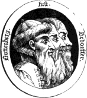
Errors in Chapter III
(Displaying thus his meikle skill,)
closing parenthesis missing
for in no country are books to be found printed
foe in
[III.19]
footnote tag missing: best guess
einen spätern tag
spatern
was printed by Ketelar and Leempt
spelling unchanged
Footnote III.2
“J’ai rendu Vedelare
rendn